\( % Keep these in sync with preamble.sty. Note that they are not identical.
\def\bigoh{\mathcal{O}}
\def\defeq{\stackrel{\text{def}}{=}}
\def\noteq{\stackrel{\text{not}}{=}}
% Silently discard numprint formatting. Sorry. :-/
\def\np{\numprint}
\def\numprint#1{#1}
\)
Programare cu premeditare
Cătălin Frâncu
Prefață
Aici voi spune ceva introductiv.
Problemele sînt ordonate după dificultate.
Pentru Codeforces și Kilonova aveți nevoie de un cont pentru a vedea sursele.
Am inclus legături către versiunile online ale surselor acolo unde evaluarea este publică.
Rapoartele de evaluare arată și timpul și memoria.
Partea I Măiestrie pe biți Tehnici pentru calcule compacte și eficiente
Capitolul 1 Operații pe biți. Compactarea variabilelor
1.1 Operații elementare
Multe dintre structurile de date pe care le folosim au legătură cu puterile lui 2: arborii indexați binar,
arborii de segmente, heapurile, bitsets... De aceea, este important să fiți familiari cu o listă de operații
utile.
C are suport pentru constante hexazecimale (0xdeadbeef) și binare (0b1100101101).
De asemenea, puteți tipări valori în bazele 8 și 16 cu printf sau folosind STL.
O cifră hexa are 4 biți în baza 2. Deci 0xce=0b1100'1110.
Uneori valorile hexa ajută la claritate. 0xff'ffff arată că avem 24 de biți 1, poate mai clar
decît ((1«24)-1). Dar depinde de gusturi.
1.1.2 Măști
Conceptual, o mască pe \(n\) biți este un număr binar care descrie o submulțime a unei mulțimi cu \(n\)
elemente, indexate de la \(0\) la \(n-1\). Bitul \(k\) are valoarea 1 dacă și numai dacă submulțimea descrisă include
elementul \(k\). Măștile se pretează la submulțimi mici (32 sau 64 de biți). Dincolo de aceasta avem nevoie
de vectori de măști (cum ar fi bitset din STL).
Exemple din lumea reală:
Multe constante predefinite în limbajele de programare ocupă un singur bit (sînt puteri ale
lui 2), iar programatorul le poate combina cu OR pe biți. Vezi codurile de eroare din PHP.
Programatorul poate decide să afișeze sau să ascundă anumite tipuri de eroare. De exemplu,
apelînd funcția error_reporting(E_ALL& ~E_NOTICE & ~E_DEPRECATED), programatorul arată
că vrea să vadă toate erorile în afară de cele minore (E_NOTICE) și cele despre perimare
(E_DEPRECATED).
În multe programe, utilizatorii au permisiuni, care sînt definite ca puteri ale lui 2, iar
permisiunile unui utilizator sînt o mască (o submulțime din mulțimea totală).
Programele de șah moderne descriu tabla ca pe o colecție de măști pe 64 de biți: una
pentru pozițiile pionilor albi, una pentru pozițiile pionilor negri etc. Este foarte convenabil
că tabla de șah are fix 64 de pătrate.
Măștile au anumite avantaje, cum ar fi:
1.
Este foarte ușor să facem operații de intersecție, reuniune, diferență folosind operatorii pe
biți &, |, ^ și ~.
2.
Valoarea numerică a măștii creează o bijecție naturală între mulțimea \(\{0, 1, \dots , 2^n - 1\}\) și mulțimea
submulțimilor unei mulțimi. Deci putem stoca eficient informații despre toate submulțimile
într-un vector de \(2^n\) elemente indexate după ordinea lexicografică a submulțimii.
1.1.3 Operații pe măști de biți
operația
efectul
x&31 sau x&0x1f
Restul împărțirii lui \(x\) la 32.
x&1
Test de (im)paritate.
x&(1«k)
Test dacă al \(k\)-lea bit este 1. Atenție, nu returnează 0/1, ci 0/\(2^k\).
(x»k)&1
Test dacă al \(k\)-lea bit este 1. Returnează 0/1.
x|=(1«k)
Setează bitul \(k\) pe 1.
x&=~(1«k)
Setează bitul \(k\) pe 0.
x^=(1«k)
Neagă bitul \(k\).
x&(x-1)
Elimină ultimul bit 1 din \(n\). Util și ca test dacă \(n\) este putere a lui 2.
Tabela 1.1: Operații pe măști de biți.
1.2 Numărarea biților de 1 dintr-o valoare (popcount)
De exemplu, pentru 187, care în binar este 10111011, dorim răspunsul 6. Programul complet
implementează metodele de mai jos și măsoară timpii de rulare.
1.2.1 Metoda naivă
Shiftăm în mod repetat numărul la dreapta și numărăm biții de 1.
pop=0;while(x){pop+=x&1;x»=1;}
1.2.2 Metoda Kernighan
Eliminăm și contorizăm cîte un bit de 1.
1.2.3 Funcții built-in
Folosim funcțiile __builtin_popcount (pentru int) și __builtin_popcountll (pentru longlong) sau
std::popcount din STL. Atenție, aceasta din urmă apare doar în standardul C++20.
Notă: Funcțiile built-in pot deveni mult mai rapide pe arhitecturile care admit instrucțiunea nativă
popcnt. Dacă știți sigur că mașina de evaluare admite această instrucțiune, îi puteți cere
compilatorului să genereze codul adecvat cu comanda:
#pragma GCC target("popcnt")
Atenție, dacă CPU-ul evaluatorului nu admite această instrucțiune, rezultatul este nedefinit.
1.2.4 Tabel precalculat
Construim un tabel de 256 de valori care precalculează rezultatul pentru un octet. Extragem octeții
numărului prin shiftare.
1.2.5 Tabel precalculat + conversie
Construim același tabel de 256 de valori. Extragem octeții numărului prin conversia la char*.
1.2.6 Calcul paralel
Iată o metodă bazată pe calcul paralel, care face log(sizeof(n)) operații și nu folosește condiții.
Pentru exemplificare, să considerăm numărul pe 16 biți \(\overline {abcdefghijklmnop}\). Dorim să facem următoarele 4
operații:
1.
Să înlocuim fiecare grupă de doi biți cu suma acelor biți. Cu alte cuvinte, dorim ca în
locul grupei \(\overline {ab}\) să scriem \(00\) dacă \(a=b=0\), \(01\) dacă \(a=0\) și \(b=1\) sau \(a=1\) și \(b=0\), respectiv \(10\) dacă \(a=b=1\).
2.
Să înlocuim fiecare grupă de 4 biți cu suma celor două grupe de 2 biți din care se compune.
3.
Să înlocuim fiecare grupă de 8 biți cu suma celor două grupe de 4 biți din care se compune.
4.
Să înlocuim întregul număr (16 biți) cu suma celor două grupe de 8 biți din care se
compune.
Astfel, la finalul celor 4 operații, în locul numărului original vom avea exact numărul de biți din
număr. Să începem cu operația 1. Secretul este să procesăm toate cele 8 grupe de cîte doi biți
simultan, adică în paralel. Pentru aceasta, shiftăm biții impari (\(\overline {a0c0e0g0i0k0m0o0}\)) la dreapta și îi adunăm cu biții pari
(\(\overline {0b0d0f0h0j0l0n0p}\)). Observăm că, dacă procedăm astfel, grupele de doi biți nu se influențează între ele, deoarece nu
există transport dincolo de acești doi biți.
În binar, masca care selectează biții pari este 0b0101010101010101, care în hexazecimal se scrie ca 0x5555.
Pe 32 de biți obținem instrucțiunea:
x=((x»1)&0x55555555)+(x&0x55555555);
Pentru operația 2, dorim să adunăm fiecare grupă de doi biți cu număr de ordine impar cu grupa de doi
biți din dreapta ei. Deci vom shifta numărul cu doi biți, vom reține doar grupele pare folosind masca
binară 0b0011001100110011, respectiv 0x3333, și le vom aduna (în paralel) cu aceleași grupe din numărul
original:
x=((x»2)&0x33333333)+(x&0x33333333);
Procedînd la fel pentru grupe de 4, 8 16 și eventual 32 de biți, obținem codul anexat.
Rezultatele pentru 100 000 000 de operații pe 32 de biți sînt:
metoda
viteza (milioane de op. / secundă)
naiv
72
Kernighan
69
std::popcount / __builtin_popcount
570
__builtin_popcount cu pragma
2 350
tabel precalculat
990
tabel precalculat + char*
900
calcul paralel
2 560
Tabela 1.2: Implementări de popcount și vitezele lor.
1.3 Logaritmul în baza 2
De exemplu, pentru pentru 187, care în binar este 10111011, dorim răspunsul 7 (indicele celui mai din
stînga bit 1). Codul implementează (aproape) aceleași metode. De data aceasta, diferențele sînt
surprinzător de mici, căci este greu de evitat branching-ul datorat condițiilor.
Tabela 1.3: Implementări de logaritm în baza 2 și vitezele
lor.
Notă: Ca și în cazul operației popcount, multe dintre implementări devin considerabil mai rapide dacă
folosim instrucțiunea nativă lzcnt, care numără zerourile din stînga ale unui întreg. Dacă procesorul
admite instrucțiunea, i-o putem cere compilatorului cu comanda:
#pragma GCC target("lzcnt")
Cu această optimizare, instrucțiunea __builtin_clz devine cea mai rapidă metodă.
1.4 Programare dinamică pe măști de biți
Există o clasă de probleme în care \(n\) (dimensiunea intrării) este mică, pe la 20-25. În aceste probleme
avem de calculat informații despre fiecare mască pe \(n\) biți, de exemplu informații despre fiecare subșir al
unui vector cu \(n\) elemente sau despre fiecare submulțime a unei mulțimi cu \(n\) obiecte. Tehnica de rezolvare
pornește de la două observații generale:
1.
Este eficient să stocăm aceste informații într-un vector cu \(2^n\) poziții, unde poziția \(i\) reține
informația corespunzătoare măștii \(i\) (care la rîndul ei corespunde unui subșir sau unei
submulțimi).
2.
Informațiile despre o mască cu \(k\) biți de 1 decurg din măștile cu \(k-1\) biți de 1. Cu alte cuvinte,
informațiile despre o submulțime cu \(k\) obiecte decurg din cele \(k\) submulțimi cu \(k-1\) obiecte.
Numim această tehnică programare dinamică pe măști de biți. Rezolvările acestor probleme tind
să aibă complexitatea \(\bigoh (n \cdot 2^n)\) sau \(\bigoh (n^2 \cdot 2^n)\).
În rest, nu este foarte mult de spus teoretic. Vom regăsi multe exemple în problemele aferente.
Dacă suma cutiilor este mai mică decît capacitatea sacului, atunci desigur nu există soluție. Invers,
dacă suma cutiilor este mai mare sau egală cu capacitatea sacului, atunci există soluție. În cel mai rău
caz, putem tăia totul pînă la mărime 1.
Iată o soluție greedy corectă. Să examinăm cutiile de la mari la mici. Fie \(k\) mărimea curentă. Dacă mai
avem \(k\) spațiu în sac, sigur merită să luăm cutia. Dacă nu o luăm, înseamnă că vom lua o mulțime de
cutii mai mici a căror sumă este mai mare sau egală cu \(k\). Dar putem demonstra că acea mulțime include
o submulțime de sumă exact \(k\). Este preferabil să luăm acum cutia de mărime exact \(k\) cu zero
tăieturi.
Dacă nu mai avem \(k\) spațiu în sac, atunci ne punem întrebarea dacă merită să tăiem cutia, fie ca să
luăm acum \(k/2\), fie ca să continuăm să o tăiem pe viitor în cutii și mai mici. Desigur, tăieturile costă, deci
am prefera să nu facem asta, ci să luăm mai tîrziu niște cutii mai mici cu volumul total \(k\). De aceea,
vom ține permanent evidența cantității pe care ne permitem să o refuzăm. Inițial, această
cantitate este \(R = \sum a_i - n\). Pe măsură ce refuzăm cutii, \(R\) scade cu volumul cutiilor refuzate. Ne permitem
să refuzăm cutia curentă dacă \(R \geq k\). Dacă nu ne permitem, incrementăm numărul de tăieturi,
decrementăm numărul de cutii de mărime \(k\) și îl creștem cu 2 pe cel de cutii de mărime
\(k/2\).
Ca implementare, cel mai simplu este să menținem un singur vector de frecvență, indexat
după logaritmul cutiilor. De exemplu, la indicele 3 vom ține numărul de cutii de mărime
8.
Editorialul pare să ofere o soluție inversă, de la mic la mare.
Să definim operatorul \(a \subseteq b\) cu semnificația că reprezentarea binară a lui \(a\) conține 1 doar pe poziții unde și \(b\)
conține 1.
Ideea de bază este că, dacă \(y\) este compatibil cu \(x\), atunci \(y\) este compatibil și cu orice număr \(z \subseteq x\). De aceea,
calculăm următoarele informații. Pentru orice mască \(x\), definim fit[x] ca fiind fie un număr \(z\) de la intrare
astfel încît \(z \subseteq x\), fie 0 dacă nu există un astfel de \(z\).
Calculăm vectorul fit extinzînd măștile cîte un bit la un moment dat. Inițial, fit[a[i]]=a[i] pentru
fiecare număr de la intrare. Apoi, pentru un \(z\) oarecare, dacă fit[z] nu este încă definit, încercăm să
eliminăm pe rînd fiecare bit din masca \(z\). Dacă masca \(x\) obținută are fit[x] definit, atribuim fit[z]=fit[x].
Dorim să evaluăm masca \(z\) după ce am evaluat toate măștile care au cu un bit de 1 mai puțin. Ordinea
naturală, crescătoare, oferă această proprietate, deci codul este simplu.
Odată calculat vectorul fit, trecem prin vectorul \(a\) și, pentru fiecare element \(a_i\), definim \(b = \overline {a_i}\) și tipărim fit[b]
sau -1, după caz.
Optimizare de memorie
De amorul artei, am reușit să nu țin un întreg pentru fiecare mască, ci doar un bit. Necesarul de
memorie a scăzut de la 20 MB la 4,3 MB. Ideea este să reținem doar informația „există (sau nu) un
număr conținut în această mască”. Dacă răspunsul este „da”, atunci la afișare este nevoie să aflăm
care este acel număr. Îl putem recupera bit cu bit: pornind de la masca completă, eliminăm cîte un
bit, cîte un bit pînă cînd nu se mai poate. Atunci numărul rămas trebuie să fie printre cele de la
intrare.
Este interesant că timpul de rulare a rămas practic neschimbat, deși constanta teoretică a crescut:
complexitatea afișării nu mai este \(\bigoh (n)\), ci \(O(p \cdot n)\). Vedem din nou beneficiile consumului redus de memorie.
Bufferul de lucru are doar \(2^{22}\) biți, adică 512 KiB de memorie.
Optimizare de viteză
Implementarea naturală propagă informația din fit iterînd după mască și, pentru fiecare mască, prin
toți biții săi:
Cred că știu explicația. În prima variantă, calculul unei măști accesează și măști relativ îndepărtate
ca valoare, ceea ce „rupe” cache-ul. În a doua variantă, cel puțin pentru biții mici (pînă la 12), masca
curentă accesează măști la distanță de cel mult \(2^{12}\) octeți, deci din aceeași pagină de memorie sau una
vecină.
1.5.3 Problema Yet Another Substring Reverse (Codeforces)
Primele observații sînt relativ elementare. În primul rînd, orice două subsecvențe pot fi făcute vecine
printr-o operație bine aleasă. Așadar, vom căuta două subsecvențe care:
1.
Să fie disjuncte (să ocupe poziții diferite în șir).
2.
Să conțină caractere distincte.
3.
Să aibă suma lungimilor maximă.
De fapt, condiția (1) nu este necesară. Dacă subsecvențele nu sînt disjuncte, nu vor avea nici caractere
distincte.
Detalii de implementare
Pentru implementare vom folosi măști de biți. Unele concepte sînt simple și vă vor intra în reflex
(dacă nu v-au intrat deja). Oricînd parametrii au ordinul 20-30, sau orice pînă la 64, puteți
folosi măști de biți pentru a calcula, compara, reuni, intersecta mulțimi de valori din acel
domeniu.
Așadar, să reprezentăm orice subsecvență de caractere distincte printr-o mască de \(\Sigma = 20\) de biți
corespunzători literelor a...t, unde bitul 0 corespunde literei a, iar bitul 19 literei t. Fiecare bit are
valoarea 1 dacă și numai dacă litera corespunzătoare apare în subsecvență. De exemplu, subsecvența
cbtf corespunde măștii 1000 0000 0000 0010 0110 (nu uitați că bitul 0 este cel mai din
dreapta).
Un concept des întîlnit este calcularea tuturor măștilor posibile. În acest caz, există cel mult \(2^{20} \approx \np {1000000}\) de măști
posibile. Putem construi un vector de bool (sau chiar un bitset) care indică ce măști putem obține,
oriunde în șirul dat. Construcția este simplă și durează \(\bigoh (\Sigma \cdot 2^\Sigma ) \approx \np {20000000}\).
voidbuild_obtainable_masks(){for(inti=0;i<len;i++){intmask=0;intj=i;while((j<len)&&!(mask&(1«s[j]))){// Extinde subsecvența (i,j-1) cu poziția j.// Setează bitul corespunzător lui s[j].mask|=1«s[j++];obtainable[mask]=true;}}}
Acum putem reformula cerința astfel. Căutăm două măști cu proprietățile:
1.
Ambele pot fi obținute (sînt marcate în vectorul sus-menționat).
2.
Sînt disjuncte (and-ul pe biți este 0).
3.
Numărul total de biți (cardinalul, numit și populație) este maxim.
Dacă iterăm prin măști, pentru fiecare mască \(A\) care poate fi obținută putem calcula complementul ei \(B = \bar {A}\).
Cu alte cuvinte, \(B\) indică ce litere mai avem voie să folosim pentru a le lipi de cele din \(A\). Pe masca \(B\)
dorim să o întrebăm: dintre toate submulțimile tale care pot fi obținute, care este populația
maximă?
Acesta este un exemplu tipic de programare dinamică pe măști. Există două posibilități:
1.
Dacă masca \(B\) poate fi obținută, chiar \(B\) este răspunsul: dintre toate submulțimile lui \(B\), \(B\) are
cardinalul maxim (duh).
2.
Altfel, încercăm pe rînd să modificăm fiecare bit 1 din \(B\) la valoarea 0 și vedem care dintre
măștile astfel obținute ne dă un răspuns maxim.
Dacă vă ajută, nu uitați că o mască este o submulțime a mulțimii complete (care în cazul nostru este
mulțimea \(\{a, b, \dots , t\}\)). Reformulată în termeni de mulțimi, recurența de mai sus este: submulțimea maximă a lui \(B\)
care poate fi obținută este fie \(B\) însăși, fie submulțimea maximă a oricărei submulțimi obținute prin
eliminarea unui singur element din \(B\).
Codul de mai sus iterează prin toți cei 20 de biți și îi procesează pe cei care au valoarea 1 în masca
mask. Cu puțin efort am putea itera doar prin biții de 1, cu metoda Kernighan. Dar intuiesc că nu ar fi
mai rapid. Numărul de biți evaluați ar scădea la jumătate (căci numărul mediu de biți 1 este 20/2), dar
constanta ar crește.
La final, ultimul pas este să găsim o mască \(m\) care maximizează suma popcount(m)+submask_pop[~m]. Cu
alte cuvinte, pentru o mască \(m\) fixată cel mai bun rezultat este dat de toți biții măștii \(m\) și de cît mai
mulți biți ai unei măști care reprezintă o subsecvență din șir, dar care este disjunctă cu
\(m\).
Putem reformula problema astfel: trebuie să găsim o submulțime \(C\) a alfabetului („cazurile”) astfel încît
orice subșir de \(k\) caractere consecutive să conțină cel puțin un caracter din \(C\). Dacă există mai multe astfel
de submulțimi \(C\), trebuie să o găsim pe cea de cardinal minim.
Ne interesează mai mult ce caractere apar în fiecare fereastră, nu și frecvența lor. De aceea, fiecărei
ferestre îi vom asocia o mască. Atunci o mască \(C\) este viabilă dacă intersecția ei cu masca fiecărei ferestre
este nenulă.
Este mai simplu să operăm pe negativ: dacă o mască este disjunctă cu oricare dintre măștile ferestrelor,
acea mască nu poate fi soluție. De aici rezultă un algoritm în trei pași:
Măștile cunoscute a fi rele
Fie \(M\) masca unei ferestre de \(k\) caractere. Atunci complementul său, \(\overline {M}\), este rău, adică nu poate fi niciodată
soluție la problemă. De ce? Prin definiție \(\overline {M}\) nu va crea niciun terminator de cuvînt în fereastra curentă.
De exemplu, dacă \(k = 4\) și fereastra curentă este bebe, atunci masca \(M\) are biții pentru b și e setați,
iar complementul său (\(\overline {M} =\)acdfghijk...) este sigur rău, pentru că nu inserează pauze în textul
bebe.
De asemenea, trebuie obligatoriu ca ultima literă din șir să fie terminator, deci complementul măștii
care conține doar ultimul caracter este rău.
Propagarea măștilor rele
Dacă o mască este rea, cu atît mai mult orice submască a ei va fi rea. Pentru propagare, aplicăm
metoda cunoscută. Odată ce depistăm o mască rea, nu iterăm prin toate submăștile ei, ci doar prin cele
obținute prin eliminarea cîte unui bit. Le marcăm pe acestea ca rele și va fi treaba lor să-și marcheze
submăștile ca rele.
Exemplu: Dacă masca 0011101 este rea, vom marca drept rele măștile 0001101, 0010101, 0011001 și
0011100.
Găsirea soluției
Acest pas este cel mai simplu. Iterăm prin toate măștile care nu sînt marcate ca rele și o selectăm pe
cea cu populație minimă. Putem folosi, de exemplu, unul dintre built-in-urile std::popcount sau
__builtin_popcount.
1.5.5 Problema The Minimum Number of Variables (Codeforces)
Și aceasta este o problemă relativ standard de programare dinamică pe măști de biți.
Reprezentarea datelor
Trebuie să vedem unde intervin cele \(2^n\) stări așteptate. Este destul de natural să privim lucrurile astfel. Să
reindexăm vectorul \(a\) de la 0. Să construim acum un vector boolean \(p[0 \dots 2^n - 1]\) care reține cîte o informație pentru
fiecare mască pe \(n\) biți. Pentru o mască \(m\), fie \(b\) indicele celui mai semnificativ bit 1 (unde \(0 \leq b < n\)). Atunci
desemnăm \(v[m]\) ca fiind true dacă și numai dacă putem procesa variabilele \(a_0, \dots a_b\) astfel încît pe cele care
corespund la biți de 1 să le stocăm în prezent în variabile. De exemplu, pentru masca \(77 = 1001101_{(2)}\), \(v[77]\) va fi true
dacă putem procesa valorile \(a_0 \dots a_6\) astfel încît la final să avem patru variabile cu valorile \(a_0, a_2, a_3\) și
\(a_6\).
Subliniem că, prin convenție, o mască unde bitul cel mai semnificativ (MSB) este \(b\) se referă întotdeauna
la starea sistemului după ce am procesat elementele \(a_0, \dots , a_b\). Aceasta deoarece ultima variabilă este în mod
necesar stocată (deci bitul aferent este 1).
Putem inițializa sistemul cu \(v[1]\) = true, care semnifică că am procesat primul element și l-am salvat într-o
variabilă.
Programarea dinamică
Conform enunțului, pentru a procesa elementul \(a_b\) trebuie:
Să fi procesat primele \(b\) elemente.
Să avem între variabilele curente două (sau aceeași luată de două ori) a căror sumă să fie
\(a_b\).
Să punem valoarea \(a_b\) într-o variabilă nouă sau să suprascriem una dintre variabilele curente.
Putem implementa aceste condiții cu o programare dinamică de tip înainte. Din informațiile despre
măștile pe exact \(b\) biți le deducem pe cele pe exact \(b+1\) biți. Concret, dacă masca \(m\) pe \(b\) biți poate fi
obținută, și dacă există două elemente indicate în masca \(m\) a căror sumă este \(a_b\), atunci putem
obține:
Masca \(m' = m \ | \ 2^b\). Ea are cu un bit în plus față de \(m\), semnificînd că folosim o variabilă nouă.
Colecția de măști obținute din masca \(m'\) prin ștergerea oricărui bit 1 în afară de bitul \(b\). Ele
au la fel de mulți biți ca \(m\), semnificînd că suprascriem variabila al cărei bit dispare.
Complexitatea este \(\bigoh (n \cdot 2^n)\) datorită generării colecției descrise mai sus.
Verificarea sumelor
Așadar, înainte de a completa măștile de variabile pentru bitul \(b\), trebuie să ne întrebăm care dintre
măștile anterioare (pe \(b\) biți) sînt cu adevărat utile, în sensul că includ două elemente a căror sumă este
\(a_b\). De exemplu, pentru vectorul \(a = (1, 2, 3, 100, 200)\), putem procesa primele 3 elemente în diverse moduri, obținînd diverse
măști pe 3 biți. Dar toate sînt inutile, căci nicio combinație din primele 3 valori nu ne va da suma
100.
Vom folosi un al doilea bitset de măști pentru acest scop, calculabil tot în \(\bigoh (n \cdot 2^n)\). Vom calcula în aceeași
iterație toate măștile în care MSB este bitul \(b-1\). Le vom procesa în ordine crescătoare, astfel încît la
procesarea unei măști să avem garanția că toate submăștile ei au fost procesate. Pentru masca \(m\), fie \(k\)
bitul cel mai puțin semnificativ (LSB). Avem trei cazuri:
1.
Dacă \(m \oplus 2^k\) oferă suma \(a_b\), atunci și \(m\) oferă suma \(a_b\).
2.
Altfel, iterăm prin toți biții 1 ai lui \(m\). Dacă pentru orice bit \(i\) avem \(a_i + a_k = a_b\), atunci evident masca \(m\)
oferă suma \(a_b\).
3.
Altfel masca \(m\) nu oferă suma \(a_b\) și nu o vom folosi la programarea dinamică înainte.
Soluția
Numărul minim de variabile necesar este populația minimă a oricărei măști fezabile pe exact \(n\) biți (cu
bitul \(n-1\) setat).
Ideea problemei mi s-a părut grea. Știind că \(n \leq 10\) și că ne permitem să iterăm prin toate submulțimile de
elevi, de ce am face-o?
Putem varia calculul valorii absolute pentru fiecare elev. Într-o mască de elevi, un bit
1 pe poziția \(i\) va însemna că dorim să calculăm modulul ca \(r_i - x_i\). Cu alte cuvinte dorim ca \(r_i \geq x_i\).
Viceversa, un bit de 0 înseamnă că dorim ca \(r_i \leq x_i\). Iau naștere două tabere de elevi, cărora dorim
să le maximizăm, respectiv să le minimizăm scorurile. Le vom numi „elevi max” și „elevi
min”.
Odată fixată masca, vom căuta să dăm punctaje problemelor care să crească scorurile elevilor max și să
evite să le crească pe ale elevilor min. Dar cum? Dacă o întrebare are rezolvitori din ambele tabere,
cum să o punctăm? Mai ales, cum ne asigurăm că scorurile elevilor max vor fi deasupra așteptărilor, iar
ale elevilor min vor fi sub așteptări?
Observația-cheie este: nu trebuie neapărat să respectăm inegalitățile \(r_i \geq x_i\) și \(r_i \leq x_i\). Dacă un sistem de
punctare nu respectă unele dintre cele \(n\) inegalități, este OK. Tot ce pierdem este că obținem o
surpriză totală neoptimă. De exemplu, dacă noi insistăm să calculăm \(|5 - 7|\) ca \(-7 + 5 = -2\), vom obține un total
incorect. Dar va exista un alt sistem care respectă inegalitățile și va obține o surpriză mai
bună.
Așadar, putem proceda astfel pentru fiecare mască:
1.
Inițializează valoarea surprizei cu \(-x_i\) pentru elevii max și \(+x_i\) pentru elevii min.
2.
Acum, pentru orice întrebare dorim să adunăm punctajul său pentru elevii max care au
rezolvat-o și să-l scădem pentru elevii min care au rezolvat-o.
3.
Surpriza totală va fi suma valorilor de la punctele (1) și (2).
4.
Pentru fiecare întrebare, calculează-i scorul ca diferența între numerele de elevi max,
respectiv min care au rezolvat-o.
5.
Dacă punctăm cu \(P\) puncte o întrebare de scor \(S\), ea va contribui cu \(P \times S\) puncte la surpriza totală.
6.
Rezultă că putem sorta cele \(m\) întrebări crescător după scor și să le atribuim punctajele \(1, 2, \dots , m\) în
această ordine.
Detalii de implementare
Merită să citim de la bun început datele ca măști de biți. Fiecare întrebare are o mască de \(n\) biți cu
rezolvitorii.
Scorul unei întrebări este diferența populațiilor de 1 și de 0:
intget_score(intsolvers,intstud_mask){// solvers = masca de elevi care au răspuns corect la întrebarea curentă// stud_mask = masca curentă de elevi maxintgood=__builtin_popcount(solvers&stud_mask);intbad=__builtin_popcount(solvers&~stud_mask);returngood-bad;}
Se vede că scorul unei întrebări poate varia între \(-n\) și \(+n\). De aceea, în prima sursă chiar colectez
întrebările într-un vector de liste indexat după scor. Astfel putem sorta întrebările în
\(\bigoh (m + n)\).
A doua sursă nu mai colectează întrebările, ci doar distribuția scorurilor într-un simplu vector indexat
de la \(-n\) la \(n\). Din acest vector putem deduce valoarea surprizei totale. De exemplu, dacă \(n=10\) și vectorul este \((5, 3, 3, \dots )\),
atunci:
Primele 5 întrebări au punctajele 1, 2, 3, 4, 5 și scor -10. Contribuția acestora la surpriza
totală este \(15 \cdot (-10) = -150\).
Următoarele 3 întrebări au punctajele 6, 7, 8 și scor -9. Contribuția acestora este \(21 \cdot (-9) = -189\).
Următoarele 3 întrebări au punctajele 9, 10, 11 și scor -8. Contribuția acestora este \(30 \cdot (-8) = -240\).
etc.
Așadar, putem afla valoarea surprizei pentru fiecare mască cu niște sume Gauss. Apoi alegem masca \(M\)
care maximizează surpriza. Mai trebuie doar să reconstituim punctajele întrebărilor cunoscînd masca \(M\)
și vectorul de scoruri aferent.
Pentru aceasta, este suficient să calculăm sume parțiale peste vectorul de scoruri: \(P=(5, 8, 11, \dots )\). Să observăm că
aceste valori sînt exact punctajele cele mai mari pentru o întrebare cu acel scor (notate cu bold mai
sus). De exemplu, 11 este ultimul punctaj pentru întrebările de scor -8. Acum parcurgem întrebările în
ordine și le calculăm scorurile. Ori de cîte ori vedem o întrebare de scor -8, îi vom atribui punctajul
din vectorul \(P\), pe care apoi îl vom decrementa. Astfel, cele 3 întrebări de scor -8 (căci știm că sînt
exact 3) vor primi punctajele 11, 10 și 9.
Observație de încheiere: Există doar \(2^n = \np {1024}\) de măști de rezolvitori pentru cele \(m\) întrebări. La prima vedere,
pare un cîștig să înlocuim vectorul de lungime \(\np {10000}\) cu unul de lungime \(\np {1024}\) (frecvențele măștilor de
rezolvitori). Din păcate, problema poate avea multe teste mici și atunci \(\bigoh (t \cdot 2^n)\) poate fi mai scump decît
\(\bigoh (\sum m)\).
1.6 Compactarea variabilelor
Cînd o variabilă are nevoie doar de un bit, putem „înghesui” 8 variabile pe un octet. Dacă avem nevoie
de un milion de booleeni, îi putem compacta în 128 KiB de memorie. Vom cheltui puțin la
compactare și decompactare, dar vom economisi memorie. Există multiple argumente pentru
compactare.
1.
Consumul de memorie scade. În loc de 2 GB putem folosi doar 256 MB. Ocazional putem
găsi o soluție la care comisia nu s-a gîndit.
2.
Cu cît ne încadrăm mai bine în cache, cu atît viteza crește.
3.
Dacă avem de făcut operații pe vectori booleeni (and, or, xor, numărarea biților), le putem
procesa în grupe de cîte 32 sau 64.
Desigur, putem folosi un bitset STL. Dar este simplu să ne implementăm propria structură. Iar STL-ul
nu ne mai ajută la variabile pe 2 biți sau pe 4 biți, care pot fi și ele compactate, sau la probleme ca
ERA, unde avem nevoie de funcții pe care std::bitset nu le oferă.
1.6.1 Bitset
Conceptual, dorim să înlocuim
atribuirea v[pos]=val cu o funcție voidset(intpos,boolval);
citirea v[pos] cu o funcție boolget(intpos).
Vom face împărțirea astfel. Elementele 0-31 stau în primul word (unsignedint). Elementele 32-63 stau
în al doilea word. Concret, elementul pos va sta în word-ul pos/32, altfel spus pos»5. Dintre cei 32 de
biți ai word-ului, elementul pos va sta pe bitul pos%32, altfel spus pos&31. Ca fapt divers,
compilatoarele moderne fac deja aceste transformări pentru voi. Puteți folosi notația pos%32 dacă vi se
pare mai lizibilă.
Așadar, funcția de citire a unui bit va fi un one-liner simplu:
boolget(intpos){return(v[pos»5]»(pos&31))&1;}
La atribuire, discuția devine un pic mai nuanțată. Unele operații cum ar fi setarea bitului pe 1 sau pe 0
sînt relativ directe:
Dar dacă dorim o funcție generică, una care să ia valoarea bitului ca parametru? Este important să nu
testăm condiții (să nu facem branching). Acest cod este de 3-4 ori mai lent decît un vector naiv de
bool:
Dar putem face și atribuirea fără branching. Prima jumătate a instrucțiunii șterge vechea valoare a
bitului, iar a doua jumătate atribuie valoarea nouă.
Anexa conține implementarea completă. Am inclus și implementări pe 8 biți, care folosesc un
vector de \(n/8\) unsignedchar. Iată niște benchmark-uri pentru un vector de \(10^6\) elemente cu \(10^9\) citiri și \(10^9\)
scrieri.
metoda
viteza (milioane de op. / secundă)
naiv
1 700
vector compactat, 32 de biți
1 350
vector compactat, 8 biți
1 200
vector compactat, cu branching, 8 sau 32 de biți
450
std::bitset
500
Tabela 1.4: Implementări de bitset și vitezele lor.
Aplicație: Operații booleene rapide
Atît versiunea proprie, cît și cea STL, ne oferă operații logice en gros, cîte 32 deodată. TODO:
Discuție despre problema rucsacului.
1.6.2 Variabile pe 2 biți
Toată discuția despre bitsets se pretează și la variabile pe doi biți. Consumul de memorie scade de 4 ori,
întrucît folosim exact doi biți în locul fiecărui octet. Anexa conține implementarea completă. Includ
aici doar rutinele principale:
Iată o problemă aleasă ușor forțat pentru a ilustra compactarea variabilelor. Am căutat „DNA” pe
codeforces, întrucît alfabetul ADN are doar 4 litere. 🤓
Soluție în \(\bigoh (n \log n)\)
Pentru fiecare literă \(L\), pentru fiecare lungime a unei infecții, \(1 \leq e \leq 10\), și pentru fiecare rest \(h\) modulo \(e\), reținem
cîte un AIB în care notăm 1 pe pozițiile din \(s\) congruente cu \(h\) modulo \(e\) care conțin o literă \(L\). Să
presupunem că îl denumim aib[L][e][h].
Actualizările sînt relativ ușor de făcut. La modificarea poziției \(x\), trecem de pe 1 pe 0 valorile din toate
AIB-urile corespunzătoare vechii litere și resturilor \(x \mod m\) pentru fiecare \(1 \leq m \leq 10\). Apoi adăugăm 1 în AIB-urile noii
litere și acelorași resturi.
Interogările pornesc de la observația că, dacă litera \(L\) apare pe poziția \(h\) într-o infecție de lungime \(e\),
atunci ne interesează de cîte ori apare ea pe pozițiile \(l + h, l + 2h\) etc. Trebuie doar să consultăm AIB-ul
corespunzător acestui scop, aib[L][e][(l+h)%e, cerîndu-i suma pe intervalul \([l,r]\). Procedăm la fel pentru
fiecare poziție \(0 \leq h < m\).
Din ce am observat pe Codeforces, aceste soluții tind să folosească între 150 și 300 MB de memorie.
Ordinul de mărime este corect: 55 de AIB-uri pentru 4 litere, fiecare conținînd 100 000 de întregi,
necesită \(55 \times 4 \times \np {100000} \times 4 = 88\) MB de memorie. Restul este posibil să fie risipă.
Soluție în \(\bigoh (n \sqrt {n})\)
Iată și o soluție în \(\bigoh (n \sqrt {n})\) care consumă doar 64 kB de memorie. Din această cauză, ea operează
100% din time în cache-ul L1 și obține timpi comparabili cu soluția anterioară. Nu am
ales întîmplător acest deziderat de 64 kB. Evaluatorul Codeforces folosește un procesor
i5-3470, care are un cache L1 de 64 kB per core. Este o cifră comună pentru procesoarele
moderne.
Folosim descompunerea în radical, deoarece ea tinde să folosească puțină memorie suplimentară. Pe
fiecare bloc stocăm date similare cu metoda anterioară: numărul de litere de fiecare tip pentru fiecare
lungime de query și fiecare rest modulo acea lungime.
Să facem niște calcule.
Șirul \(s\) necesită 2 biți per literă, așadar 25 000 de octeți.
Un bloc are nevoie de \(1 + 2 + \dots + 10 = 55\) de contoare pentru fiecare dintre cele 4 litere. Contoarele încap pe
short. Rezultă un necesar de 440 de octeți per bloc (eu am 444, căci rețin și poziția de
început a blocului).
Rezultă că ne permitem circa 90 de blocuri, deoarece \(\np {25000} + 90 \cdot 444 = \np {64960} < \np {65536}\).
Prima variantă a codului este directă.
Varianta a doua compactează șirul \(s\). Ea este puțin mai lentă.
Varianta a treia elimină majoritatea operațiilor de împărțire. Ea este de circa 3 ori mai rapidă decît
celelalte.
Într-o a patra variantă (pe care nu o mai includ), am crescut numărul de blocuri pînă la 317 (valoarea
teoretică, \(\sqrt {\np {100000}}\)). Codul a devenit mai lent.
Concluzii
Această problemă nu este un exemplu perfect pentru compactarea variabilelor. În schimb, ea este un
exemplu instructiv că reducerea de 3 000 de ori a memoriei (de la 200 MB la 64 kB) compensează cu
succes un algoritm asimptotic mai slab. Să nu uităm că \(\log \np {100000} \approx \np {16.6}\), pe cînd \(\sqrt {\np {100000}} \approx 316\). În plus, AIB-urile au
constantă bună. Deci teoretic descompunerea logaritmică ar trebui să fie de 19 ori mai
lentă.
1.8 Iterarea prin submăștile unei măști
Ocazional avem nevoie ca, pentru o mască binară \(m\), să iterăm prin toate numerele binare care conțin biți
1 doar pe poziții pe care \(m\) conține biți 1. De exemplu, pentru masca 0110010, dorim să iterăm prin
măștile
0000000
0000010
0010000
0010010
0100000
0100010
0110000
0110010 = M
Surprinzător, putem face acest lucru cu o buclă elementară:
for(unsigneds=m;s;s=(s-1)&m){// s este o submască a lui m}
Remarcăm că bucla nu tratează masca s=0. Dacă o doriți și pe aceea, faceți un caz particular în
afara buclei sau scrieți un cod puțin mai urît pentru a include 0 în buclă, de exemplu:
De ce funcționează acest cod? În cazul simplu cînd \(m\) este contiguă, să zicem 1111111, observăm că (s-1)&m=s-1, deci s iterează pur și simplu descrescător de la 1111111 la 0000000. Dacă \(m\) conține și
zerouri intercalate, atunci \(s\) va itera descrescător prin combinațiile de 1, ignorînd zerourile.
Exemplu:
m = 110111110011000
s = 010110000000000
s - 1 = 010101111111111
(s - 1) & m = 010101110011000
Problema ne împinge spre cîteva observații de bază.
1.
Putem folosi măști de litere, de exemplu pentru a caracteriza un șir după niște eliminări.
Prin convenție, am ales 1 pentru literele eliminate și 0 pentru literele prezente.
2.
Masca șirului inițial este 0 (nu am eliminat nimic).
3.
Ordinea eliminării contează.
4.
Există \(2^{17} \approx \np {130000}\) măști, deci ne permitem undeva la 1 000 de operații elementare per mască.
Să presupunem că reușim să clasificăm măștile în bune (care corespund unui subșir crisp) și rele
(celelalte). Dacă calculăm frecvențele literelor, atunci din orice mască putem afla lungimea șirului
corespunzător în \(\bigoh (p)\). Problema este 99% rezolvată, dar nu este suficient să luăm masca bună
corespunzătoare șirului minim. Pot exista măști bune, dar la care nu putem ajunge prin
eliminări pornind de la masca 0. În particular, masca \(2^p - 1\), corespunzătoare eliminării tuturor
caracterelor, este garantat bună (nimeni nu mai este vecin cu nimeni). Dar poate să nu fie
accesibilă.
Totuși, completarea este simplă. Evaluăm toate măștile bune. Dacă o mască bună \(m\) nu este accesibilă,
adică nu există nicio altă mască bună \(m'\) din care s-o obținem pe \(m\) înlocuind un 0 cu 1, atunci o
reclasificăm pe \(m\) ca rea. Motivul este că nu există niciun drum de la 0 la \(m\). Este important să
facem evaluarea măștilor într-o ordine care să garanteze că toate submăștile au fost deja
evaluate. Ordinea numerelor naturale este suficientă (deci putem itera prin măști cu un simplu
for).
Acum sîntem pregătiți să atacăm miezul problemei: clasificarea măștilor în bune și rele. Ce înseamnă
că o mască este rea? Înseamnă că ea are doi biți \(x\) și \(y\), posibil egali, cu proprietățile:
Au valoarea 0 (așadar sînt încă prezenți în șir).
Literele corespunzătoare, \(x\) și \(y\), sînt incompatibile.
Undeva în șirul original există un interval mărginit de literele \(x\) și \(y\), care nu mai conține alte
litere \(x\) și \(y\), și în care toate literele intermediare au bitul corespunzător 1. Cu alte cuvinte,
undeva am făcut o serie de eliminări care au alipit \(x\) de \(y\).
Cînd depistăm o astfel de situație, atunci nu doar masca sus-menționată este rea, ci și toate
supramăștile ei: în afară de biții \(x\), \(y\) și cei corespunzători literelor intermediare, ceilalți biți pot avea
orice valoare (0 sau 1).
Următoarea soluție s-ar putea încadra în timp, foarte la limită. Construim măști ternare pe 17 biți,
unde 0 = literă încă activă, 1 = literă eliminată, 2 = literă pentru care încă nu am luat o decizie. În
acest vector marcăm măștile rele, unde biților liberi le asociem cifra ternară 2. Apoi parcurgem recursiv
aceste măști, înlocuind valorile de 2 în toate modurile cu 0 sau 1. În final, acele valori care folosesc, în
baza 3, doar cifrele 0 și 1 corespund măștilor binare și descriu măștile rele. Complexitatea ar fi \(\bigoh (p \cdot 3^p) \approx \np {2.2} \cdot 10^9\), la
limită.
Dar iată și o soluție mai naturală. Iterăm prin toate perechile de caractere \((x,y)\). Pentru fiecare pereche, în \(\bigoh (n)\)
colectăm toate aparițiile acestor caractere în șir și marcăm explicit ca rele măștile dintre apariții.
După ce le colectăm pe toate, iterăm prin toate cele \(2^{p-2}\) măști care au biții \(x\) și \(y\) 0 (sau \(2^{p-1}\), dacă \(x=y\)). Extindem
mulțimea de măști rele astfel: dacă o mască considerată bună poate proveni dintr-o mască rea cu un bit
în plus, masca devine și ea rea.
Este important să judecăm fiecare pereche \((x,y)\) separat de alte perechi. De aceea, după ce găsim toate
măștile rele, copiem informația într-un vector global și golim vectorul curent. Facem copierea cu OR,
întrucît o mască este rea dacă este rea din cauza oricărei perechi de litere.
Ca optimizare, pentru iterarea doar prin \(2^{p-2}\) biți am folosit codul de iterare prin submăștile unei măști.
Codul este considerabil mai rapid decît dacă am itera prin toate cele \(2^p\) măști și ne-am întreba „au biții \(x\)
și \(y\) valoarea 0?”
Complexitatea pentru colectarea intervalelor este \(\bigoh (p^2 \cdot n)\). Ea poate fi redusă la \(\bigoh (p \cdot n)\), dar reducerea nu face obiectul
acestui curs.
Capitolul 2 Tehnica Meet in the middle
2.1 Definiția tehnicii
Teoretic nu este foarte mult de spus despre tehnica meet in the middle. Tehnica se aplică la probleme cu
soluții exponențiale, unde ne ajută să reducem complexitatea de la \(\bigoh (p^n)\) la \(\bigoh (p^{n/2})\).
Abordarea cu meet in the middle sparge problema dată în două subprobleme care sînt
tot exponențiale. De aceea, soluțiile seamănă cu soluțiile forță brută. Metoda generală
este:
1.
Căutați soluția în \(\bigoh (p^n)\).
2.
Spargeți problema în două: doi vectori de cîte \(n/2\) elemente etc.
3.
Aplicați soluția naivă fiecărei jumătăți.
4.
Găsiți un mod de a combina cele două jumătăți.
La acest moment este posibil să descoperim că trebuie să extindem structura jumătății
stîngi, ca să stocăm mai multe informații.
Dacă vedeți vreo problemă cu limita \(30 \leq n \leq 40\), probabil se rezolvă cu această tehnică. 🙂
Acest capitol este foarte ingineresc. Majoritatea problemelor duc la subprobleme interesante de
implementare și de optimizare. Multe dintre implementări pot fi simplificate cu măști de
biți.
Rezolvarea este esența tehnicii meet in the middle: împărțim cele 40 de elemente în două grupe de 20.
Pentru fiecare dintre grupe avem destul timp și memorie ca să calculăm sumele celor \(2^{20}\) submulțimi și să
le ordonăm, obținînd doi vectori. Apoi căutăm, cu tehnica celor doi pointeri, numărul de perechi de
indici care dau suma \(x\).
La iterarea cu cei doi pointeri trebuie să tratăm atent grupele de elemente egale.
Desigur, pentru o mulțime cu \(n/2\) elemente este banal să producem lista ordonată a sumelor celor \(2^{n/2}\)
submulțimi în \(\bigoh (n \cdot 2^{n/2})\). Putem obține lista fie cu un bitmask, fie prin parcurgere recursivă. Ambele
metode presupun o sortare la final, care pentru un vector de \(2^{n/2}\) elemente are complexitate
\(\bigoh (2^{n/2} \log 2^{n/2}) = \bigoh (n \cdot 2^{n/2})\).
Dar există și o soluție mai puțin cunoscută în \(\bigoh (2^{n/2})\). Pe evaluatorul CSES, ea este de 5 ori mai rapidă! Vom
proceda astfel pentru fiecare dintre jumătăți. Considerăm cele \(n/2\) elemente unul cîte unul. Să spunem că
am obținut lista sortată \(L_k\) a sumelor submulțimilor primelor \(k\) elemente. Pentru a-l include și pe cel de-al
\(k+1\)-lea element, fie el \(x\), observăm că \(L_{k+1}\) conține:
toate valorile din \(L_{k}\), pentru că avem opțiunea să nu-l folosim pe \(x\);
toate valorile din \(L_{k}\) crescute cu \(x\), dacă alegem să îl folosim pe \(x\).
Așadar, este suficient să îl stocăm pe \(L_{k}\) într-un vector și să-l interclasăm cu \(L_{k} + x\). Această operație necesită \(2^{k + 1}\)
comparații, deci efortul însumat pentru toate \(k\)-urile este \(\bigoh {2^{n/2}}\).
2.2.2 Puzzle-urile de pe Infoarena
Cosmin Negrușeri a scris pentru Infoarena un articol teoretic despre meet in the middle. Merită să
petrecem cîteva minute cu aceste puzzle-uri, întrucît sînt pe alt tipic decît restul problemelor din
acest capitol.
Friend of a friend
Acesta este un puzzle de încălzire. Indexăm cumva listele prietenilor lui \(A\) și \(B\) și vedem dacă au vreun
element în comun. În practică, indexăm doar lista de prieteni a lui \(A\) (de exemplu într-o tabelă hash).
Apoi, pentru fiecare prieten al lui \(B\) verificăm dacă apare în tabelă.
De ce astfel? Presupunînd că o persoană are în medie \(k\) prieteni, dacă chiar am colecta lista prietenilor
prietenilor lui \(A\) am obține \(\bigoh (k^2)\) elemente. Algoritmul de mai sus rulează în \(\bigoh (k)\).
Six degrees of separation
Similar. Pentru fiecare dintre cei doi utilizatori, colectăm cunoștințele aflate la distanță cel mult 3.
Apoi le intersectăm.
Equal partitions
Cum ar funcționa soluția în \(\bigoh (2^n)\)? De multe ori ea ne conduce spre soluția cu meet in the middle. Iterăm
prin toate cele \(2^n\) măști și le dăm semnificația: biții 0 corespund elementelor din prima mulțime, iar biții
1 elementelor din a doua mulțime. Dacă o mască corespunde unor mulțimi cu sume egale, aceea este
soluția.
Acum, să presupunem că iterăm prin cele \(2^{n/2}\) măști pentru primele \(n/2\) elemente. Vom stoca „ceva” pentru
fiecare mască (vom vedea ce). Acum iterăm prin celelalte \(2^{n/2}\) măști. Cum spuneam mai sus, acestea
corespund unei partiționări a elementelor. Pentru o mască \(m\) din dreapta fixată, să spunem că sumele
celor două submulțimi sînt \(X\) și \(Y\). Înseamnă că dorim să întrebăm jumătatea stîngă: există vreo
partiționare care obține diferența \(|X-Y|\)?
Rezultă că exact asta vom stoca în jumătatea stîngă! Calculăm, pentru fiecare mască, sumele
submulțimilor aferente, \(A\) și \(B\), și adăugăm valoarea \(|A-B|\) într-o tabelă hash.
Minimum vertex cover
Aici este mai mult de povestit și este un intermezzo interesant. Vom demonstra întîi o egalitate
utilă:
Dacă enumerăm toate cele \(2^n\) măști pe \(n\) biți și pentru fiecare submască enumerăm toate sumăștile, efortul
este \(\bigoh (3^n)\) (deși intuiția ne spune că ar fi \(\bigoh (4^n)\)).
Iată o demonstrație frumoasă bazată pe combinatorică. Iată și o demonstrație bazată pe bijecții. Să
considerăm masca 10011 pe 5 biți. Așadar, am ales ca din cei 5 biți să setăm doi pe 0. Acum îi vom
enumera submăștile, de la 00000 la 11111. Așadar pot apărea noi zerouri... dar acestea nu sînt la fel ca
primele. 🙂 Concret, să construim o bijecție între submăștile submăștilor pe \(n\) biți și
mulțimea numerelor în baza 3 pe \(n\) biți:
Cifra 1 semnifică că am ales bitul 1 în submască, apoi și în submasca submăștii.
Cifra 0 semnifică că am ales bitul 0 în submască.
Cifra 2 semnifică că am ales bitul 1 în submască, apoi 0 în submasca submăștii.
De exemplu, 20012 se referă la submasca 00010 obținută ca submască a submăștii 10011.
De aici rezultă un algoritm relativ clasic pentru problema MVC.
Square fence
Ce ar face soluția în \(\bigoh (4^n)\)? Ar număra în baza 4 pe \(n\) cifre. Pentru o mască (în baza 4) fixată,
cifrele 0, 1, 2 și 3 dictează partiționarea scîndurilor. Vedem dacă vreo partiție duce la sume
egale.
Să facem asta pentru primele \(n/2\) scînduri. Obținem diverși cvadrupleți \((a, b, c, d)\), pe care îi punem într-o tabelă
hash. Noi știm suma dorită \(S\) pentru fiecare submulțime (este \(1/4\) din suma lungimilor celor \(n\) scînduri).
Acum iterăm prin celelalte \(n/2\) scînduri și, pentru fiecare cvadruplet \((a', b', c', d')\) găsit, căutăm în tabela hash
cvadrupletul \((S - a', S - b', S - c', S - d')\).
8 puzzle
Cu indiciul că ne sînt suficiente 31 de mutări, soluția dorită este probabil: generăm cel mult 15 mutări
din poziția de start și le hash-uim. Apoi generăm cel mult 16 mutări din poziția finală
(regulile de mutare sînt aceleași indiferent de direcție) și căutăm pozițiile rezultate în tabela
hash.
Dar probabil putem și să facem un BFS simplu, căci spațiul de poziții este doar \(9!\).
4 reversals
Facem două răsturnări pe șirul \(S\), în toate modurile posibile, și punem rezultatele într-o tabelă hash.
Apoi facem două răsturnări pe șirul \(T\), în toate modurile posibile, și căutăm rezultatul în tabela
hash.
O soluție naivă ar genera toate combinațiile legale de (cel mult) trei posibilități pentru fiecare
element:
nu îl includem;
îl includem cu valoarea sa proprie;
îl includem cu valoarea factorial.
Rezultă o complexitate de \(\bigoh (3^n)\), prea mare. M-am gîndit foarte sumar la soluții cu programare dinamică, de
exemplu definind \(D(s, i, j)\) ca numărul de moduri de a obține suma \(s\) cu primele \(i\) obiecte folosind \(j\)
abțibilduri. Nu cred că o putem face să meargă, pentru că trebuie să gestioneze prea multe sume
distincte.
Astfel ajungem la ideea de a sparge obiectele în 13 în stînga și 12 în dreapta și de a face generarea
naivă pe aceste jumătăți. Vom obține doi vectori cu lungimea totală \(3^{13} + 3^{12} \approx 2 \cdot 10^6\). Elementele acestor vectori sînt
perechi \(\langle x, f \rangle \): suma \(x\) și numărul de abțibilduri necesare \(f\). Pentru fiecare element din stînga trebuie
să numărăm perechile corespondente din dreapta, de sumă exact \(S-x\) obținută cu cel mult \(k-f\)
abțibilduri.
De aici soluțiile diverg. Un exemplu cu tabele hash ar putea fi:
Grupează toate sumele obținute în stînga. Atașează fiecărei sume \(x\) un vector \(v\) în care \(v[i]\)
reține în cîte moduri am obținut suma \(x\) cu \(i\) abțibilduri.
Fă sume parțiale peste acești vectori, astfel va \(v[i]\) să rețină în cîte moduri putem obține
suma \(x\) cu cel mult \(i\) abțibilduri.
Pune toate sumele și vectorii lor într-o tabelă hash indexată după suma \(x\).
Pentru fiecare pereche \(\langle x, f \rangle \) din dreapta, caută în tabela hash suma \(S-x\), poziția \(k-f\) din vector.
Răspunsul este suma acestor valori din tabela hash.
Ca în multe alte ocazii, putem înlocui \(n\) căutări într-o tabelă hash cu sortarea + algoritmul cu doi
pointeri. Sortăm vectorii celor două jumătăți. Apoi iterăm un pointer de la stînga la dreapta prin
primul vector și de la dreapta la stînga prin al doilea vector, căutînd elemente de sumă egală cu
\(S\).
Ce este nou este cum procedăm cînd găsim acele elemente. În fapt, vom avea un grup de elemente egale
cu \(x\) în stînga și un grup de elemente egale cu \(S-x\) în dreapta. Acum avem o subproblemă.
Trebuie să numărăm perechile cu suma abțibildurilor cel mult \(k\). Din fericire, putem rezolva
subproblema cu un nou algoritm two pointers, care de data aceasta iterează doar prin cele două
grupuri!
Optimizare
Am reușit să reduc timpul de rulare cu 30% cu următoarea observație. Perechile ¡sumă, abțibilduri¿
ocupă 16 octeți (8 + 1, dar rotunjit la 16). Dar nu este complicat să compactăm cele două valori în
doar 64 de biți. Sumele sînt cel mult \(10^{16}\), adică ocupă doar 54 de biți, iar abțibildurile sînt cel mult 25,
deci ocupă 5 biți. Le vom compacta într-un longlong unde suma ocupă biții 5-58, iar abțibildurile biții
0-4. La sortare, comparăm natural aceste variabile, ceea ce duce exact la sortarea dorită: întîi după
sumă, apoi după numărul de stegulețe. Astfel folosim jumătate din memorie. Nu știu de ce Codeforces
raportează 20 MB, cînd eu în mod evident aloc doar 16 MB + mărunțișuri. Codeforces minte!
🥲
Deși codul face niște operații în plus pentru conversia între structura comprimată și cele două
cîmpuri, totuși el este semnificativ mai rapid. Este un exemplu (al cîtelea?) că economia de memorie
duce la cod mai rapid.
Cred că acest gen de problemă are nevoie de puțin cod auxiliar, căci este greu să avem intuiția despre
dimensiunile problemei și ale subproblemelor.
Indiciul că se face cu meet in the middle ar trebui să ne pună pe drumul cel bun. Ca nomenclatură,
aceste numere se numesc numere urîte. Vom genera numerele urîte cu primii \(f\) factori și, separat,
numerele urîte cu ultimii \(n - f\) factori. Le vom pune în doi vectori, să zicem \(A\) și \(B\), pe care îi vom sorta.
Astfel, orice număr urît (pentru problema inițială) va fi un produs de două numere urîte, cîte unul din
fiecare vector.
Nu prea știm cum să generăm direct al \(k\)-lea număr urît (aceasta era o întrebare clasică din
folclor cînd eram eu licean!). Dar putem proceda invers: putem număra numerele urîte din
intervalul \([1,z]\). Atunci putem căuta binar cel mai mic \(z\) pentru care există exact \(k\) numere urîte în
\([1,z]\).
Pasul următor: pentru a număra numerele urîte din \([1,z]\), putem itera prin vectorul \(A\). Pentru fiecare \(x \in A\),
căutăm binar valoarea maximă din \(y \in B\) pentru care \(xy \leq z\). Dacă \(y\) apare pe poziția \(p\), atunci \(x\) poate forma \(p\) numere
urîte.
De fapt, știm că \(n\) căutări binare pot fi întotdeauna înlocuite cu un algoritm cu doi pointeri. Așadar,
pentru a afla numărul de numere urîte din \([1,z]\) complexitatea este \(\bigoh (|A| + |B|)\). Complexitatea totală a algoritmului de
căutare este \(\bigoh ((|A| + |B|) \log VAL\_MAX )\), iar generarea și sortarea vectorilor este \(\bigoh (|A| \log |A| + |B| \log |B|)\) presupunînd că reușim să generăm vectorii în \(\bigoh (1)\)
per element.
Dar aici intervine flerul... sau lipsa lui, pe care o suplinim prin cod auxiliar. 🤣 Cît de
mari pot fi vectorii? Milioane? Zeci de milioane? Și cum facem să-i echilibrăm ca să minimizăm \(|A| + |B|\)? Am
scris un program care genera naiv numerele. Este destul de clar că:
1.
Cu cît permitem mai multe numere prime, cu atît mai multe numere urîte vom avea.
2.
Cu cît numerele prime sînt mai mici, cu atît mai multe numere vom avea.
Așadar, cel mai prost caz va fi \(n=16\) și \(p=(2, 3, 5, 7, 11, 13, 17, 19, 23, 29, 31, 37, 41, 43, 47, 53)\). Pe acesta putem face măsurători. Împărțirea în \(16=8+8\) nu este fericită. Ea
generează 7 000 000 de numere urîte cu primele 8 numere prime și doar 70 000 cu celelalte 8. Împărțirea
cea mai fericită este \(16=6+10\), care generează 1 000 000 de numere urîte cu primele 6 numere prime și 500 000 cu
celelalte 10.
Enunțul problemei este ușor încîlcit, dar rezolvarea teoretică este relativ clară. Există \(3^{25} \approx \np {8.4} \cdot 10^{11}\) moduri de a
selecta aventurierii, căci pentru fiecare misiune exact unul din 3 va rămîne acasă. Așadar, pentru
MITM vom genera două seturi de \(3^{13} \approx \np {1.6} \cdot 10^6\) submulțimi și respectiv \(3^{12}\) submulțimi.
Pentru fiecare submulțime vom calcula atitudinile lui L, M și W. Apoi, trebuie să găsim toate perechile
de cîte un element din cele două seturi care se însumează la valori egale. Cum formulăm asta
ca pe o problemă de căutare? Reținem tripletele ca pe primul termen și diferențele. De
exemplu, vom stoca (100, 110, 120) ca pe (100, +10, +20) dacă apare în tabela stîngă. Dacă
apare în tabela dreaptă, schimbăm semnele diferențelor și stocăm tripletul ca (100, -10,
-20).
Cum folosim aceste informații? Fie tripletul (100, 110, 120) din partea stîngă și (200, 190, 180) din
partea dreaptă. Observăm că
Tripletele se însumează la (300, 300, 300), deci reprezintă o soluție validă.
Tripletele se reprezintă ca (100, +10, +20), respectiv (200, +10, +20).
Rezultă că, atunci cînd căutăm fiecare triplet din partea dreaptă în structura de date din partea
stîngă, cheia căutării este perechea de diferențe, în exemplul de mai sus (+10, +20). Atitudinea lui L
(100, respectiv 200) va fi valoarea asociată cheii (+10, +20) în cele două structuri. Trebuie să ținem
minte că pot exista mai multe soluții pentru același triplet și trebuie să o folosim pe cea mai
mare.
Putem implementa structura părții stîngi ca pe o tabelă hash (unordered_map). Dar implementarea mea
pare să se miște cu mult mai rapid. Ea toarnă toate tripletele în același vector și le sortează după trei
criterii:
Crescător după cheie (vectorul de diferențe).
La egalitate, crescător după jumătate (cele din stînga înaintea celor din dreapta).
La egalitate, pe cele din jumătatea stîngă le sortează crescător după L, iar pe cele din
jumătatea dreaptă descrescător după L.
Atunci două perechi complementare vor apărea consecutiv în sortare. Soluția este dominată (cam 75%
din timp) de sortarea a două milioane de triplete. Am încercat o optimizare: să generez și să sortez
doar vectorul mic (de \(3^{12}\) elemente), iar celorlalte \(3^{13}\) elemente să le caut perechea binar în primul vector. Dar
este considerabil mai lentă.
Pentru reconstituirea soluției, mi s-a părut cel mai direct să rețin masca în baza trei pentru fiecare
triplet, deși aceasta consumă memorie suplimentară.
Soluția naivă este: pentru fiecare din cele \(2^{30}\) măști, generăm vectorul \(b\) și vedem dacă toate elementele sale
sînt similare. De aici decurge soluția meet in the middle. Iterăm prin toate măștile pe 15 biți. Pentru
fiecare mască și pentru fiecare element al lui \(b\), notăm numărul de biți (popcount) din jumătatea stîngă
a elementului xor-ată cu masca. Obținem așadar \(2^{15}\) vectori a cîte \(n \leq 100\) elemente cu valori între 0 și 15.
Procedăm similar pentru cei 15 biți cel mai puțin semnificativi. Timpul și memoria necesare
sînt:
Pentru fiecare vector mai reținem și masca cu care l-am obținut. Acum trebuie să găsim doi vectori,
cîte unul din fiecare jumătate, care însumați să dea un vector cu toate valorile egale. Dacă îi găsim,
atunci răspunsul la problemă constă din concatenarea celor două măști.
Cum găsim cei doi vectori \(P = (p_0, p_1, \dots , p_{n-1})\) și \(Q = (q_0, q_1, \dots , q_{n-1})\)? Procedăm ca la problema Lizard Era: Beginning. Nu ne pasă care este
suma vectorilor, doar ca ea să fie aceeași pe toate pozițiile. De aceea, putem stoca doar diferențele
față de primul termen, așadar
și similar pentru \(Q'\). Atunci trebuie să găsim doi vectori \(P'\) și \(Q'\) cu valori egale în modul, dar cu toate
semnele schimbate. Într-adevăr, existența acestor doi vectori ar însemna că, pe orice poziție
\(i\),
și deci toate sumele sînt egale. Și mai bine, putem nega toate valorile din \(Q'\), caz în care trebuie să găsim
doi vectori perfect egali, cîte unul din fiecare jumătate.
De aici implementarea se ramifică. Putem pune jumătatea stîngă într-o tabelă hash de vectori, în care
apoi căutăm fiecare element din jumătatea dreaptă. Sursele mele procedează diferit. Ele pun ambele
jumătăți în aceeași structură de date (un vector de struct-uri). Pentru fiecare vector de \(n-1\)
elemente reținem, suplimentar, și jumătatea din care provine. Apoi sortăm această structură
după criteriul: struct-ul \(a\) vine înaintea struct-ului \(b\) dacă vectorul \(a\) este mai mic lexicografic
decît vectorul \(b\). Atunci, dacă există doi vectori egali, din jumătăți diferite, ei vor fi în mod
necesar consecutivi. Putem compara naiv fiecare pereche de doi vectori consecutivi, în timp
\(\bigoh (2^{16} \cdot n)\).
Pentru sortare, este important să evităm comparația naivă de vectori, care reîncepe compararea de la
elementul 0. Sortarea ternară (three-way radix quicksort) se pretează mult mai bine.
Optimizare de memorie
A doua versiunea de sursă face o optimizare uriașă de memorie (de la 7 MB la 300 KB). Nu este nevoie
să stocăm vectorii de diferențe de lungime \(n-1\). Putem recalcula la cerere orice element cu cost \(\bigoh (1)\). Este nevoie
să stocăm doar masca cu care am construit vectorul și jumătatea stîngă/dreaptă din care provine. Din
nou, codul care consumă mai puțină memorie este mai rapid, deși face conversii suplimentare. Cine-ar fi
crezut? 😉
Pornim de la observația elementară că două apăsări ale aceluiași buton se anulează reciproc.
De aceea, vom apăsa fiecare buton cel mult o dată. Deci putem reformula problema astfel:
pentru fiecare zi, trebuie să găsim un subset minim de butoane care, pornind din starea
„zero” (toate becurile stinse) să ducă becurile exact în starea în care le lasă eroul în acea
zi.
Putem gîndi totul în termeni de bitset-uri. Fie \(x_1, \dots , x_s\) bitseturile celor \(s\) butoane, unde \(x_i[j]=1\) dacă și numai dacă
butonul \(i\) afectează becul \(j\). Fie \(y_1, \dots , y_d\) bitseturile celor \(d\) zile. Atunci soluția pentru ziua \(i\) va fi un subset minimal
al lui \(x\) al cărui xor să fie \(y_i\).
Soluția în \(\bigoh (n \cdot d \cdot 2^s)\) ar fi: calculează xor-ul pentru fiecare submulțime a lui \(x\), apoi pentru fiecare zi caută bitsetul
zilei în mulțimea de bitseturi generate. Fiecare comparație este liniară, în \(\bigoh (n)\). Desigur, această soluție
este ineficientă, dar ne dă ideea pentru meet in the middle:
1.
Calculăm \(2^l\) bitseturi pe care le putem obține doar cu primele \(l\) butoane. Le punem într-o
tabelă hash (vom avea nevoie să căutăm prin ele). Pentru fiecare bitset reținem și cu cîte
butoane l-am obținut. Dacă mai multe combinații de butoane duc la același bitset, reținem
numărul minim de apăsări.
2.
Calculăm \(2^r\) bitseturi pe care le putem obține doar cu ultimele \(r=n-l\) butoane. Le stocăm într-un
vector simplu. Din nou, reținem numărul de apăsări.
3.
Acum răspundem la interogări. Pentru bitsetul zilei curente, \(y\), iterăm prin vectorul de \(2^r\)
elemente. Pentru fiecare element \(x\) din acest vector, căutăm valoarea \(x \oplus y\) în tabela hash. Dacă îl
găsim, însumăm numărul de apăsări necesare pentru \(x \oplus y\), respectiv pentru \(x\). Minimul acestor
sume este răspunsul pentru ziua curentă.
Complexitatea este \(\bigoh (2^l + d \cdot 2^r)\). Așadar, cele două jumătăți nu sînt neapărat egale. 🙂 Această
situație îmi amintește de descompunerea în radical, unde blocurile pot devia considerabil de la \(\sqrt {n}\)
elemente.
Optimizări
Merită să deviem puțin de la subiectul zilei pentru a enumera multe idei de optimizare. Unele nu au
contat, dar cele care au contat au redus timpul de 4 ori. Alte surse (neinteligibile...) reduc timpul de
încă 8-9 ori!
1.
Memoria este și ea un factor. Împărțirea 30=18+12 consumă de 4 ori mai puțină memorie
decît împărțirea 30=20+10 și este doar cu 10% mai lentă.
2.
Implementarea naivă folosește chei de tip bitset. Deci STL trebuie să știe să calculeze
coduri hash pentru așa ceva. Oare cît de bine se descurcă? În versiunea 2 mi-am
implementat propria funcție hash_code pentru bitseturi, exprimată ca \((r^{p_1} \oplus r^{p_2} \oplus \dots \oplus r^{p_k}) \mod M\), unde \(p_i\) sînt pozițiile
biților. Am ales \(r = 37\), iar \(M\) este un număr prim pe 64 de biți. Probabilitatea unei coliziuni este
infimă, căci folosim doar \(2^{30}\) de coduri hash dintr-un spațiu de \(2^{64}\).
3.
De la un punct mi-am implementat propriul bitset.
4.
Am precalculat puterile \(r^i\), ca să nu mai fac operații modulo în calculul codurilor hash.
5.
La procesarea unei zile, cînd iterăm prin vectorul drept și observăm că deja folosim mai
multe butoane decît soluția optimă găsită pînă la acel moment, nu mai are sens să facem
și căutarea în tabela hash. Oricum nu putem obține o soluție mai bună. Putem chiar să
sortăm bitseturile din vectorul drept după numărul de butoane apăsate.
6.
Marele avantaj al funcției hash descrise mai sus este că, pentru două bitseturi \(A\) și \(B\), avem
\(h(A \oplus B) = h(A) \oplus h(B)\). Asta înseamnă că putem menține incremental codul hash, odată la citirea bitsetului și
ulterior la operațiile xor între bitseturi.
7.
Odată ajunși aici, ne dăm seama că nu mai avem nevoie de bitseturi propriu-zise! Un bitset
este doar un cod hash pe 64 de biți.
Problema are o soluție naivă în \(\bigoh (2^m \cdot n)\): generăm toate combinațiile de culori și, pentru fiecare combinație,
verificăm dacă putem parcurge vectorul. Deci ideea de meet in the middle este să generăm, separat,
combinații de cîte \(m/2\) culori.
Dar chiar și așa, \(\bigoh (2^{m/2} \cdot n)\) va depăși timpul! Trebuie să scăpăm cumva de factorul de \(n\). Observăm că o pereche
de culori consecutive \(\langle x,y \rangle \) înseamnă că trebuie să cumpărăm măcar una dintre culorile \(x\) și \(y\). Numim această
pereche o relație între \(x\) și \(y\). Astfel ia naștere o matrice de relații de \(m \times m = \np {1600}\), mult mai puțin decît \(n=\np {300000}\). Matricea
este chiar simetrică și are doar \(m \times (m + 1) / 2 = 780\) de valori utile.
Am reprezentat matricea ca pe un vector de măști de 40 de biți, ceea ce paralelizează unele operații. De
exemplu, dacă avem o mască de culori deja cumpărate \(a\) și masca \(b\) de relații a unei alte
culori \(x\), putem verifica ușor dacă \(x\) trebuie cumpărată obligatoriu: \(b \land \neg a\). Astfel testăm dacă \(x\) are
relații care nu apar în \(a\). Dar cred că, și dacă nu sînteți versați în folosirea măștilor pe biți,
puteți lua punctaj maxim. Unele operații ar fi de \(m/2\) ori mai scumpe, dar s-ar încadra în
timp.
La citirea datelor, am inclus explicit relațiile \(\langle c_1, c_1 \rangle \) și \(\langle c_n, c_n \rangle \). Este cel mai simplu mod de a forța cumpărarea
culorilor pentru prima și ultima platformă. Tehnic, puteam să elimin liniile \(c_1\) și \(c_n\) din calcule și să reduc
problema la \(m-1\) sau \(m-2\) culori, dar ar fi necesitat cod în plus.
Acum, să procesăm cele două jumătăți ca pînă acum. Intenția generală este:
1.
Generează toate combinațiile din jumătatea stîngă \(L\), adică cu culorile din intervalul \([m/2, m)\).
2.
Generează toate combinațiile din jumătatea dreaptă \(R\), adică cu culorile din intervalul \([0,m/2)\).
3.
Pentru fiecare combinație din \(L\), găsește cea mai ieftină pereche din \(R\) astfel încît cele două
să satisfacă:
toate relațiile între două culori din \(L\);
toate relațiile între o culoare din \(L\) și una din \(R\);
toate relațiile între două culori din \(R\).
Să considerăm întîi \(L\). Vom opera pe măști compuse cu biții \([m/2, m)\). Dar nu toate măștile ne interesează, ci
doar cele care satisfac relațiile din \(L\). În această privință, jumătatea \(R\) nu ne poate ajuta ulterior.
Putem să generăm (recursiv sau iterativ) fiecare mască, iar la final să verificăm dacă ea
satisface toate relațiile din \(L\). Dar este mai eficient, și deloc greu, să verificăm validitatea pe
parcursul recursivității. Observația este că, pentru orice pereche de biți/culori \(\langle j, k \rangle \) cu \(j < k\), dacă nu
am cumpărat bitul \(j\) la vremea sa, trebuie să îl cumpărăm pe \(k\). Așadar: dacă bitul curent,
\(k\), are vreo relație cu orice bit 0 din intervalul \([m/2, k]\), atunci bitul \(k\) poate avea doar valoarea 1.
Altfel el poate avea valorile 0 sau 1, ca de obicei în recursivitate. Codul ar putea arăta
astfel:
voidrec(intk,inttotal_cost,u64mask){...u64unsat=rel[k]&bit_range(k,mid)&~mask;if(!unsat){// Sîntem liberi să alegem valoarea 0.rec(k+1,total_cost,mask);}// Întotdeauna sîntem liberi să alegem valoarea 1.rec(k+1,total_cost+cost[k],mask|(1ull«k));}
Tot pe parcursul recursivității din \(L\) putem gestiona și relațiile dintre \(L\) și \(R\). Cînd alegem valoarea 1
pentru un bit din \(L\), aceasta nu spune nimic despre biții din \(R\) cu care el are relații. Aceia
pot fi 0 sau 1. În schimb, cînd alegem valoarea 0 pentru un bit din \(L\), sîntem forțați să
cumpărăm toți biții din \(R\) care au o relație cu el. Așadar, ori de cîte ori completăm o mască
validă din \(L\), vom fi completat și o mască din \(R\), o submulțime pe care sîntem obligați să o
cumpărăm.
Acum, fie \(S \subseteq R\) masca cu restul biților din \(R\), cei pe care (încă) avem libertatea să-i cumpărăm sau nu. Ce
relații mai avem de satisfăcut? Doar cele între biți din \(S\)! Desigur, vrem să facem asta cu cost minim.
Astfel ajungem, în sfîrșit, la întrebarea pe care vrem să i-o putem adresa fiecărei măști \(S \subseteq R\): care este
submulțimea cea mai ieftină a lui \(S\) pe care trebuie să o cumpărăm pentru a satisface toate relațiile
dintre doi biți din \(S\)? Sursa mea numește acesta costul redus al măștii \(S\) și îl calculează tot într-o singură
parcurgere.
Fie \(k\) bitul cel mai semnificativ (cu valoare 1) din \(S\). Facem următoarele observații:
1.
Costul redus minim se obține luînd minimul din două variante: fie cumpărăm bitul \(k\), fie
nu-l cumpărăm.
2.
Dacă îl cumpărăm, îl plătim și reducem problema la aflarea costului redus al restului
măștii.
3.
Dacă nu îl cumpărăm, sîntem obligați să cumpărăm toți ceilalți biți din \(S\) cu care \(k\) are
relații. Eliminăm toți acești biți și bitul \(k\) însuși din mască și reducem problema la aflarea
costului redus al măștii rămase.
Sursa anexată calculează pasul (3) în \(\bigoh (1)\) per bit cumpărat. A doua variantă precalculează costul tuturor
măștilor și obține timp \(\bigoh (1)\), dar merge la fel de repede.
Problema Helping Hiasat seamănă bine cu cele discutate în clasă.
Mai întîi, să abstractizăm enunțul. Dacă Hiasat își schimbă username-ul, apoi este vizitat de \(k\) prieteni,
îl poate mulțumi doar pe (cel mult) unul dintre ei. O primă idee care mi-a venit mie de aici este: pentru
fiecare grup de vizite consecutive construim o mască \(X\). Orice submască a lui \(X\) care are cel
puțin doi biți setați este nefezabilă (prietenii corespunzători biților 1 nu pot fi mulțumiți
simultan).
Dar putem simplifica această observație. Orice pereche de biți din \(X\) se exclud reciproc. Soluția poate
include cel mult unul dintre ei. Așadar, putem construi o matrice booleană de \(m \times m\) cu perechile de biți /
prieteni care se exclud reciproc. Am ales să stochez această matrice ca pe \(m\) variabile longlong, căci este
util ca fiecare bit să aibă o mască a biților cu care se exclude.
Soluția în \(\mathcal {O}(2^m)\) este acum directă. Parcurgem recursiv toți biții. Avem întotdeauna opțiunea să nu alegem
bitul \(k\). Avem și opțiunea să îl alegem doar dacă el nu se exclude cu niciun bit din masca biților aleși
pînă acum.
Pentru meet in the middle, ne închipuim că am rezolvat subproblema pentru jumătatea stîngă și am
obținut cel mult \(2^{20}\) măști fezabile. Cînd rezolvăm jumătatea dreaptă, ori de cîte ori obținem o mască
fezabilă acolo, \(Y\), vrem să ne întrebăm: Care este populația maximă a unei măști fezabile, \(X\), din
stînga care nu intră în conflict cu \(Y\)?
Aici este singurul pas specific problemei. Trebuie să ne asigurăm că niciun bit din \(X\) nu se exclude cu
niciun bit din \(Y\)-ul curent. De aceea, pe măsură ce compunem (recursiv, ca de obicei) masca \(Y\) vom construi
și „masca excluziunilor”: masca tuturor biților din stînga care devin interziși. Cînd adăugăm un
bit \(k\) la masca dreaptă \(Y\), masca excluziunilor lui \(Y\) crește (cu OR) cu masca excluziunilor lui
\(k\).
Ultima subproblemă de rezolvat este: am completat o mască \(Y\), îi știm masca excluziunilor și, prin
negație, obținem o mască \(Z\) cu biții din stînga care ne sînt încă permiși. Acum dorim să
obținem rapid submasca fezabilă a lui \(Z\) de populație maximă. Pe aceasta o precalculăm cu
programare dinamică pe biți, imediat după recursivitatea stîngă și înainte de a da drumul la cea
dreaptă.
Partea II Algoritmi pe șiruri de caractere
Capitolul 3 Căutări în șiruri de caractere. Algoritmul Rabin-Karp
Căutarea unui subșir într-un șir înseamnă găsirea tuturor pozițiilor la care subșirul apare în șir. Să
introducem cîteva definiții și notații pentru restul acestei părți.
3.1 Terminologie
Definiția 1 (Șir de caractere).Un șir de caractere este un vector cu elemente de tip caracter.
Notație.Vom nota cu \(\Sigma \) alfabetul din care fac parte elementele șirului.
În multe probleme de informatică, \(\Sigma = \{ a, b, \dots , z\}\), dar ocazional alfabetul poate consta din 0 și 1, din litere mari
etc.
Notație.Vom nota cu \(|S|\) lungimea șirului \(S\).
Vom opera pe șiruri C (char*), astfel că un șir de \(n\) caractere își stochează informația pe pozițiile \(0 \dots n-1\) și
conține terminatorul '\0' pe poziția \(n\). Codul poate fi ușor adaptat și pentru clasa C++
string.
Definiția 2 (Apariții, deplasări).Spunem că un subșir \(P\) apare la poziția \(k\) într-un șir \(S\) dacă \(|P| + k \leq |S|\) și \(P[i] = S[i + k]\)
pentru \(0 \leq i < |P|\). Valoarea \(k\) se numește deplasare validă. Pozițiile la care \(P\) nu apare în \(S\) se numesc deplasări
invalide.
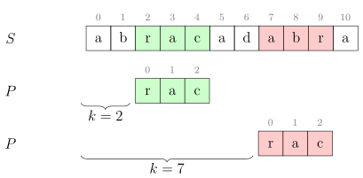
Figura 3.1: Pentru șablonul \(P\) = rac și șirul \(S\) = abracadabra,
\(k=2\) este o deplasare validă, iar \(k=7\) este o deplasare invalidă.
Cu aceste definiții și notații, putem reformula căutarea subșirului \(P\) în șirul \(S\) ca găsirea tuturor
deplasărilor valide ale lui \(P\) în \(S\). Subșirul de căutat se mai numește și șablon (engl. pattern). Vom nota \(|P| = m\)
și \(|S| = n\).
3.2 Algoritmul naiv
Următorul algoritm evaluează naiv fiecare deplasare și le tipărește pe cele valide. Pentru o deplasare
dep fixată, algoritmul caută liniar prima nepotrivire.
Algoritmul este ineficient, avînd complexitate \(\bigoh (m(n-m))\). Putem expune această ineficiență cu valori ca \(S\) =
aaaaaaaaaa și \(P\) = aaaaab. Pentru completitudine, menționăm totuși că există situații în care
algoritmul naiv se comportă optim. Iată trei dintre ele.
3.2.1 Toate caracterele din șablon sînt diferite
Să presupunem că pentru o deplasare \(k\) găsim o primă nepotrivire între \(P[i]\) și \(S[i + k]\). În particular, aceasta
înseamnă că \(P[1 \dots i-1] = S[1 + k \dots i - 1 + k]\). Așadar, în toată acea regiune din \(S\) apar caractere din \(P\), dar nu\(P[0]\). Evaluarea acelor
deplasări va eșua încă de la prima comparație. Următoarea deplasare care are o șansă să fie validă va fi
\(k + i\).
Din acest motiv, complexitatea este \(\bigoh (n)\).
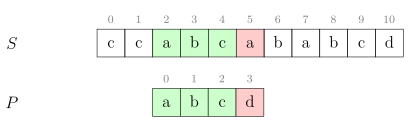
Figura 3.2: Pentru deplasarea \(k=2\), prima nepotrivire apare la
poziția \(i=3\). Caracterul a nu apare pe pozițiile 3 și 4. Următoarea
deplasare care merită verificată este \(k=5\).
3.2.2 Unul dintre șirurile \(S\) și \(P\) este generat aleatoriu
În această situație, fiecare comparație între un caracter din \(S\) și unul din \(P\) va eșua cu probabilitatea
\[\frac {|\Sigma | - 1}{|\Sigma |}\]
, de unde cu puțină teorie a probabilităților aflăm că numărul așteptat de comparații pentru o
deplasare dată va fi
\[\frac {|\Sigma |}{|\Sigma | - 1}\]
Această valoare este 2 pentru alfabete binare și tinde la 1 pe măsură ce mărimea alfabetului crește. Și
în acest caz, complexitatea este \(\bigoh (n)\).
3.2.3 \(m\) are valoare apropiată de \(n\)
Reamintim că complexitatea nu este \(\bigoh (mn)\), ci \(\bigoh (m(n-m))\).
3.3 Funcții hash
Dacă ați descărcat vreodată un fișier mare (de exemplu, o imagine de stick bootabil), poate ați
observat că alături de el găsim o sumă de control (engl. checksum), de regulă sub forma unui număr
hexazecimal lung calculat cu un algoritm ca SHA256. Care este rostul acestui checksum? În esență, este
un mod de a ne asigura că am descărcat fișierul fără erori. Rulăm local același algoritm și ne asigurăm
că obținem același rezultat ca pe site.
Un algoritm de checksum este un tip particular de funcție hash (diferențele depășesc scopul
acestei culegeri). O funcție hash transformă niște date de o lungime arbitrară în alte date
(numite valori hash) de lungime fixă. Indiferent cît de mare este fișierul descărcat sau
lungimea șirului citit, funcția hash returnează valori pe un număr fix de biți, de exemplu
256.
De la o funcție hash bună dorim următoarele proprietăți:
1.
Să fie ușor de calculat.
2.
Să traducă valori de intrare aproape identice în valori hash substanțial diferite.
3.
Să genereze toate valorile hash posibile cu aceeași probabilitate pentru valori de intrare
aleatorii; cu alte cuvinte, să distribuie bine valorile de intrare.
Este important să observăm că funcțiile hash nu sînt injective. Nici nu ar avea cum, căci spațiul
valorilor de intrare este infinit, pe cînd spațiul valorilor hash este finit. Ce implică aceasta? Dacă două
valori de intrare \(X\) și \(Y\) corespund la valori hash diferite, atunci știm sigur că \(X \neq Y\). În schimb, dacă
valorile hash sînt egale, nu avem nicio garanție că \(X = Y\). De exemplu, pentru funcția hash \(H(x) = x \bmod 10\),
valorile de intrare 27 și 57 corespund aceleiași valori hash, 7. Această situație se numește
coliziune.
3.4 Căutarea cu funcții hash
Din secțiunea anterioară decurge o metodă de căutare cu funcții hash:
Pentru concizie, am exclus codul funcțiilor hash și compar_naiv. Observăm că acest algoritm are tot
complexitate \(\bigoh (m(n-m))\), din două motive:
1.
Funcția hash, dacă îi permitem să examineze complet subșirul curent, are complexitate \(\bigoh (m)\).
Vom arăta în secțiunea următoare cum putem reduce complexitatea la \(\bigoh (1)\).
2.
Pentru date de intrare ca \(S\) = aaaaaaaaaa și \(P\) = aaaaaa, toate valorile hash vor fi egale și
algoritmul va degenera în \(n-m\) comparări naive.
3.5 Funcții rolling hash
Să considerăm alfabetul \(\Sigma = \{0, 1, \dots , 9\}\). Să considerăm, pentru simplitate, că \(m \leq 9\). Atunci putem defini funcția hash a
unui subșir de lungime \(m\) ca fiind valoarea numerică a acelui șir. De exemplu, \(H(\texttt {"2943"}) = \numprint {2943}\).
Acum, fie \(P\) = 9435 și \(S\) = 1112943511. Atunci vom calcula \(H(P) = \numprint {9435}\) și \(H(S[3...6]) = \numprint {2943}\). Cînd trecem de la deplasarea 3 la
deplasarea 4, putem calcula în doar \(\bigoh (1)\) noua valoare hash, \(H(S[4...7])\). Procedăm astfel:
Din 2 943 scădem prima cifră (adică 2) înmulțită cu \(10^{m - 1}\) (adică 1 000). Diferența este 943. În
termeni de șiruri, am eliminat primul caracter din stînga.
Pe 943 îl înmulțim cu 10. Obținem 9 430.
Adăugăm următoarea cifră din \(S\) (5). Obținem 9 435. În termeni de șiruri, am adăugat la
dreapta următorul caracter.
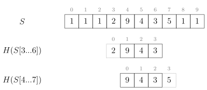
Figura 3.3: Pentru deplasarea \(k=3\), valoarea hash este 2 943. Pentru \(k=4\), valoarea hash este \((\numprint {2943}-\numprint {2000}) \times 10 + 5 = \numprint {9435}\).
Avantajul este că am redus la \(\bigoh (n)\) efortul total pentru a calcula valorile hash ale tuturor subșirurilor lui \(S\) de
lungime \(m\). Acest tip de funcție se numește rolling hash pentru că se rostogolește de la o poziție la
următoarea.
În cazul general, valorile hash vor avea mărimi de ordinul \(|\Sigma |^{m}\) și vor fi prea mari pentru a fi reprezentate în
tipuri de date simple. Soluția este să operăm modulo o valoare \(q\). Astfel, formula generală pentru a trece
de la o valoare hash la următoarea este:
În concluzie, funcția traduce \(|\Sigma |^{m}\) șiruri posibile în doar \(q\) valori hash. Așadar, pot apărea coliziuni. De
aceea, ori de cîte ori găsim în \(S\) valoarea \(H(P)\) este necesar să facem și o comparare naivă. Complexitatea
teoretică a algoritmului rămîne \(\bigoh (m(n-m))\).
3.6 Algoritmul Rabin-Karp
Punînd cap la cap toate elementele de mai sus, rezultă codul:
Valoarea \(|\Sigma |^{m-1}\) trebuie precalculată.
Pentru a evita depășirile, este necesar ca \(|\Sigma | \cdot q\) să încapă în tipul de date ales (de exemplu int
sau longlong).
Ca încercare de optimizare, putem folosi un modul putere a lui 2 pentru viteză mai mare. Putem chiar
să operăm modulo \(2^{32}\) sau modulo \(2^{64}\) și să renunțăm complet la operațiile de împărțire (depășirile vor face
automat acest lucru pentru noi). Totuși, este posibil ca datele de test să fie alese adversarial și să
genereze multe coliziuni pentru aceste module arhicunoscute. În funcție de natura problemei, poate fi
preferabil un modul prim ales la întîmplare.
Putem renunța la comparările naive dacă avem speranțe reale că nu vor exista coliziuni. Vom
considera orice apariție a lui \(H(P)\) ca fiind o deplasare validă. Atunci algoritmul devine \(\bigoh (m + n)\), dar este
important să alegem un modul suficient de mare încît probabilitatea coliziunilor să fie
infimă.
Dacă chiar și cu un modul mare întîlnim coliziuni, putem calcula două funcții hash modulo
două valori diferite, \(H_1(P)\) și \(H_2(P)\). Șansa să întîlnim o coliziune modulo ambele valori simultan scade
pătratic.
Cred că problema admite multe soluții. Iat-o pe cea pe care am găsit-o eu.
Observăm că procentul de diferențe nu depășește 10% (cînd \(k = 50\) și \(l = 500\)). Din păcate, noi nu știm să calculăm
hash-uri aproximative, care să genereze valori hash similare pentru date de intrare similare. Trebuie să
ne rezumăm la porțiuni identice.
Pentru această problemă, vom redefini deplasarea validă ca fiind o deplasare în \(s\) unde cuvîntul curent
se potrivește cu cel mult \(k\) diferențe. Dacă există o deplasare validă pentru un cuvînt \(p\), ce putem spune
despre potrivirile continue și exacte? Să observăm că cele (cel mult) \(k\) diferențe segmentează celelalte \(l - k\)
caractere, care se potrivesc exact, în cel mult \(k+1\) fragmente. Conform principiului lui Dirichlet, va exista
un fragment potrivit exact de lungime
Pentru \(k = 50\) și \(l = 500\) obținem \(c = 9\), iar pentru alte combinații \(c\) va fi chiar mai mare. Deoarece \(26^9 \approx 5 \cdot 10^{12}\), iar \(s\) este generat
aleatoriu, ne așteptăm să existe cel mult o apariție a unui astfel de fragment în \(s\). Doar pentru
deplasarea acestei apariții ne punem întrebarea dacă există cel mult \(k\) diferențe. Dar cum? Tot pentru
că \(s\) este aleatoriu, răspunsul este: naiv, cu o buclă for. Pentru majoritatea deplasărilor,
comparația naivă de șiruri va eșua rapid. La fiecare poziție avem o șansă de \(25/26\) să întîlnim
un caracter diferit, deci numărul așteptat de comparații pînă cînd găsim \(k+1\) diferențe va fi
\((k + 1) \cdot 26/25\).
Și atunci algoritmul este:
Algoritmul 1 Algoritmul în ansamblu pentru problema Radio
1: calculează valorile hash ale fiecărei ferestre de mărime \(c\) din \(s\) 2:pentru fiecare cuvînt \(p\)execută 3: pentru fiecare fereastră \(w\) de mărime \(c\) din \(p\)execută 4: pentru fiecare apariție a lui \(w\) în \(s\)execută 5: calculează deplasarea \(d\) a lui \(p\) în \(s\) 6: compară naiv \(p\) cu subșirul \(s[d \dots d + l - 1]\)
Merită să discutăm și implementarea și cîteva optimizări notabile. În primul rînd, cum memorăm
poziția apariției unei valori hash în \(s\)? Am operat modulo \(2^{64}\) ca să elimin conflictele. Limita de memorie
este de 64 MB, ceea ce din păcate exclude o tabelă hash de \(n = 10^6\) valori pe 64 de biți. Prima mea idee a fost
să pun valorile hash într-un vector, să le sortez, apoi să caut binar valoarea hash dorită. Această
implementare are valoarea \(\bigoh (n \log n + ml(\log n + k))\), care provine din:
1.
Generarea și sortarea celor \(n - c + 1\) valori hash din \(s\).
2.
Pentru fiecare șir și fiecare deplasare, căutarea binară a unei valori hash (\(\bigoh (\log n)\)) și apoi
compararea naivă (\(\bigoh (k)\)).
Programul obține punctaj maxim, dar în aproape 500 ms. Dar prima sursă din top obține 125 ms.
Aceasta m-a ambiționat! 🙂
O primă optimizare a fost să elimin sortarea. Timpul necesar pentru a sorta un milion de elemente nu
este neglijabil. În loc de aceasta, am redus modulul pînă la un număr prim în jurul lui \(10^6\). Ne așteptăm
ca șirul aleatoriu \(s\) să distribuie bine cele \(\approx 10^6\) valori hash într-un spațiu de \(\approx 10^6\) posibilități, dar natural pot
apărea conflicte. În practică, numărul maxim de duplicate este 9 indiferent de modulul prim pe care
l-am ales. De aceea, am înlocuit tabela hash cu o matrice de \(9 \cdot 10^6\) elemente, plus un vector pentru numărul
de apariții al fiecărei valori hash, așadar circa 40 MB de memorie. Astfel am redus timpul semnificativ,
la 333 ms.
O a doua optimizare majoră pornește de la următoarea observație: șirul \(s\) este aleatoriu, dar cuvintele \(p\)
nu! 😈 Voi cum ați construi date de test adverse? Iată ideea mea: Alegem drept
cuvinte subșiruri de mărime \(l\) din \(s\), pe care apoi le modificăm în \(k+1\) locuri, undeva spre finalul cuvîntului.
Grupăm aceste modificări, lăsînd doar ocazional cîte un caracter potrivit exact. Așadar, pentru un
cuvînte de mărime \(l = 500\) vom avea un fragment inițial de mărime peste 400 care se potrivește
exact.
Ce decurge de aici? Programul nostru alege \(c=9\), deci va încerca toate cele circa 390 de fragmente în
această fereastră de mărime 400. Și pentru fiecare dintre ele va face aproape 500 de comparații pînă să
ajungă la cea de-a 51-a diferență. Complexitatea este \(\bigoh (l^2)\) per cuvînt, \(\bigoh (ml^2)\) în ansamblu. De fapt, presupunerea
noastră că comparația naivă va eșua rapid, în \(\bigoh (k)\), este corectă doar pentru deplasări aleatorii, nu și
pentru date adverse.
Care este soluția? Să observăm că toate aceste fragmente de lungime \(c\) duc la comparații naive la
aceeași deplasare în \(s\). Așadar, putem reduce mult timpul dacă memorăm deplasările din \(s\) la care am
făcut deja comparația naivă. Putem face asta cu o tabelă hash sau cu un simplu vector. Aceasta reduce
timpul de rulare la circa 160 ms.
Ca optimizare minoră (încă circa 10 ms), putem alege modulul \(2^{20}\), care accelerează împărțirile. Care
este efortul total pentru Rabin-Karp? Avem \(n + ml \approx 2,2 M\) de caractere și fiecare caracter intră și iese
din fereastra de mărime \(c\). Intrarea necesită o operație modulo, iar ieșirea una sau două în
funcție de implementare. Deci avem de făcut 4,4 sau 6,6 milioane de împărțiri. Nu este
neglijabil!
Capitolul 4 Căutări cu automate finite. Algoritmul Knuth-Morris-Pratt
Algoritmul KMP este denumit astfel după inițialele inventatorilor săi, Donald Knuth, James Morris și
Vaughan Pratt. Este un algoritm remarcabil de scurt și de elegant, dar fără înțelegerea bazelor pe care
este construit el poate părea mistic, revelația unui profet pe un munte. Pentru a destrăma acest mister,
vom face un periplu prin lumea automatelor finite.
4.1 Terminologie
Introducem încă cîteva notații suplimentare față de Secțiunea 3.1.
Notație.
Vom nota cu \(S_k\) prefixul de lungime \(k\) al șirului \(S\).
Notație.
Vom nota cu \(A \sqsubseteq B\) faptul că \(A\) este prefix al lui \(B\), așadar că \(|A| \leq |B|\) și că \(A[i] = B[i]\) pentru \(0 \leq i < |A|\). Dacă în plus \(|A| < |B|\),
vom folosi notația strictă \(A \sqsubset B\).
Notație.
Vom nota cu \(A \sqsupseteq B\) faptul că \(A\) este sufix al lui \(B\), așadar că \(|A| \leq |B|\) și că \(A[i] = B[|B| - |A| + i]\) pentru \(0 \leq i < |A|\). Dacă în plus \(|A| < |B|\),
vom folosi notația strictă \(A \sqsupset B\).
4.2 Automate finite
Colocvial, un automat finit determinist (AFD) este un sistem teoretic care procesează caracter cu
caracter un șir dat la intrare, de lungime arbitrară, dar finită. Automatul acceptă unele șiruri și le
respinge pe restul. Mulțimea șirurilor pe care automatul la acceptă se numește limbajul recunoscut
de automat.
Să studiem următorul exemplu.
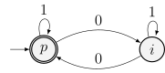
Figura 4.1: Un exemplu de automat finit determinist.
Distingem următoarele elemente:
Automatul are două stări numite \(p\) și \(i\). După fiecare caracter citit, automatul se va afla
într-una din aceste stări.
Starea \(p\) are o săgeată venind din exterior. Ea se numește stare inițială. În această stare
se află automatul înainte de citirea primului caracter.
Tot starea \(p\) are contur dublu. Aceasta o desemnează drept stare de acceptare. Pot exista
oricîte stări de acceptare, inclusiv zero.
Din fiecare stare pornește exact o săgeată pentru fiecare simbol din alfabet, în acest caz \(\{0, 1\}\).
Săgețile arată în ce stare trece automatul la citirea respectivului simbol. Aceste stări pot
fi rezumate în funcția (sau matricea) de tranziție:
\(\vcenter {\hbox {\diagbox@pict }}\)
0
1
\(p\)
\(i\)
\(p\)
\(i\)
\(p\)
\(i\)
Tabela 4.1: Matricea de tranziție pentru automatul din
Figura 4.1.
Pentru șirul de intrare 11010111, automatul va porni din starea \(p\) și va trece succesiv prin stările \(p, p, i, i, p, p, p, p\).
Întrucît starea finală este una de acceptare, automatul va accepta șirul 11010111.
Întrebarea este: Ce face acest automat în cazul general? Observația esențială este că el rămîne în
aceeași stare pe caractere 1 și alternează între cele două stări pe caractere 0. Rezultă că automatul se
va afla în starea de acceptare (\(p\)) ori de cîte ori va fi văzut un număr par de caractere 0. Formal, spunem
că automatul recunoaște limbajul
\[L = \{ s\ |\ s \in \{0, 1\}^{*}\ \textrm {și $s$ conține un număr par de zerouri} \}\]
De regulă avem de rezolvat problema inversă: dîndu-se un limbaj, dorim să construim un AFD care să-l
recunoască. În acest caz, strategia este să înțelegem ce anume este reprezentativ pentru porțiunea din
șir văzută pînă la caracterul curent și să definim stările automatului ca să captureze acea informație.
Pentru automatul din Figura 4.1, informația reprezentativă este paritatea numărului de zerouri. De
aceea am și denumit stările \(p\) (automatul a citit un număr par de zerouri, inițial 0) și \(i\) (automatul a citit
un număr impar de zerouri).
4.2.1 Alte exemple de automate
Ca să ne familiarizăm cu procesul de gîndire prin care concepem un AFD pentru un limbaj dat, vom da
cîteva exemple. Încercați să descoperiți voi înșivă ce limbaje recunosc aceste automate, înainte de a
citi descrierile!
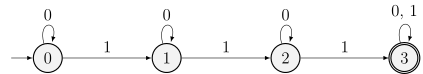
Figura 4.2:
Automatul din Figura 4.2 ține evidența numărului de caractere 1 întîlnite: 0, 1, 2 sau 3 și peste.
Într-adevăr, stările \(0\), \(1\), \(2\) și \(3\) au tocmai acest scop. Automatul acceptă șirurile care conțin cel puțin 3
caractere 1.
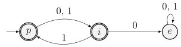
Figura 4.3:
Automatul din Figura 4.3 acceptă șirurile care conțin 1 pe toate pozițiile pare. Pentru acest limbaj
trebuie să ținem evidența a două informații: paritatea numărului de caractere citite (indicată de stările
\(p\) și \(i\)) și dacă am văzut, pe orice poziție pară anterioară, un caracter 0. În situația din urmă, automatul
trece într-o stare „de eroare”, \(e\), în care el rămîne tot restul șirului și din care nu mai revine niciodată
într-o stare de acceptare. Astfel, automatul va respinge toate șirurile în care vede un 0 pe o poziție
pară și le va accepta pe restul.
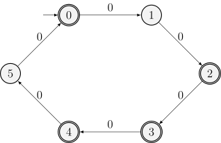
Figura 4.4:
Automatul din Figura 4.4 operează pe un alfabet unar: șirurile conțin doar caracterul 0. Observăm că
el acceptă doar șiruri care constau din \(n\) simboluri, unde \(n=6k\) sau \(n=6k+2\) sau \(n=6k+3\) sau \(n=6k+4\). Cu alte cuvinte, șiruri a căror
lungime este multiplu de 2 sau multiplu de 3.
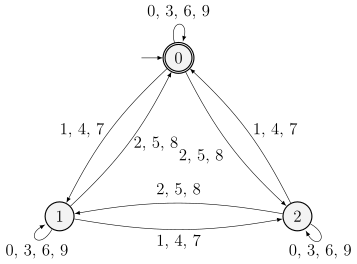
Figura 4.5:
Automatul din Figura 4.5 operează pe alfabetul cifrelor zecimale. Dacă studiem cum sînt grupate
cifrele, vom observa că automatul își schimbă starea în funcție de restul modulo trei al ultimei cifre
citite. De exemplu, o cifră 1, 4 sau 7 va cauza trecerea în următoarea stare (ciclic). Astfel observăm că
starea \(k\) arată că suma cifrelor citite pînă în prezent este congruentă cu \(k\) modulo 3. În fapt, automatul
acceptă numere naturale divizibile cu 3.
4.3 Automate pentru recunoașterea de subșiruri
Să revenim la problema căutării unui subșir într-un șir. De exemplu, pe alfabetul binar {a, b}, să
scriem un automat care ne ajută să găsim, în șirul dat la intrare, toate aparițiile șablonului aab.
Metoda este să scriem un automat care recunoaște toate șirurile terminate în aab. Atunci
automatul se va afla într-o stare de acceptare imediat după fiecare apariție a șablonului
aab.
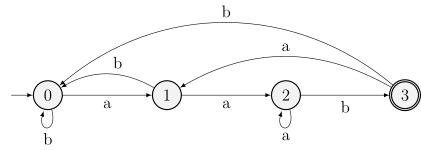
Figura 4.6: Un automat care recunoaște aparițiile subșirului
aab.
Observăm că spre dreapta avem exact trei săgeți corespunzătoare caracterelor șablonului: a, a, b.
Restul săgeților rămîn în aceeași stare sau merg spre stînga. Intuitiv, cele patru stări
semnifică:
\(0\): Ultimele caractere văzute nu sînt interesante.
\(1\): Ultimul caracter văzut este a.
\(2\): Ultimele două caractere văzute sînt aa.
\(3\): Ultimele trei caractere văzute sînt aab.
În cazul general, starea \(k\) înseamnă că ultimele \(k\) simboluri citite de la intrare coincid cu prefixul de
lungime \(k\) al șablonului. De aceea, este relativ clar că avem nevoie de trei săgeți care consumă caracterele
a, a, b și merg exact cu o stare spre dreapta fiecare. Mai puțin evident este unde trebuie să ducă
săgețile care merg spre stînga.
Un exemplu relevat este săgeata care ciclează în starea \(2\) pentru simbolul a. Într-adevăr, dacă ultimele
două caractere văzute sînt aa și mai vedem încă unul, rezultă că ultimele trei caractere
văzute sînt aaa. Dintre acestea, ultimele două încă se potrivesc cu definiția stării \(2\), deci
automatul rămîne în acea stare. De exemplu, pentru șirul de intrare aaaab, automatul va trece
succesiv prin stările \(0, 1, 2, 2, 2, 3\) și va accepta șirul. Pentru același motiv, automatul trece din starea \(3\) în
starea \(1\) pe simbolul a: putem folosi acel simbol ca eventual început al unei noi apariții a lui
aab.
Să încheiem această secțiune cu un exemplu mai complex: un automat care recunoaște subșirul
abacaba în alfabetul literelor mici.
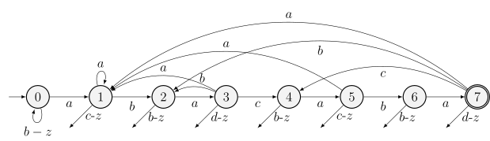
Figura 4.7: Un automat care recunoaște aparițiile subșirului
abacaba. Săgețile de sub fiecare nod duc înapoi în starea \(0\).
Și în Figura 4.7 recunoaștem săgețile spre dreapta care consumă cîte un caracter din șablon. Detaliem
și traiectoriile a două săgeți spre stînga:
În starea \(3\), ultimele caractere văzute sînt aba. Săgeata din starea \(3\) în starea \(2\) pe simbolul b
înseamnă că ultimele patru caractere văzute sînt abab, dintre care putem refolosi sufixul
ab, cum ar fi de exemplu pentru șirul de intrare ababacaba.
În starea \(7\), ultimele caractere văzute sînt abacaba. Săgeata din starea \(7\) în starea \(4\) pe
simbolul c înseamnă că ultimele opt caractere văzute sînt abacabac, dintre care putem
refolosi sufixul abac, cum ar fi de exemplu pentru șirul de intrare abacabacaba.
Dacă doriți să învățați mai multe despre automate finite și, în general, despre teoria limbajelor
formale, vă recomand formidabila carte Introduction to the Theory of Computation de Michael
Sipser.
4.4 Algoritmul de căutare cu automate finite
Acum, să generalizăm exemplele din secțiunea anterioară. Dorim să construim un automat care să
recunoască un șablon arbitrar \(P\) primit la intrare. Putem deja spune destul de multe lucruri despre acest
automat:
El va avea \(m + 1\) stări numerotate de la \(0\) la \(m\) (reamintim că \(m \noteq |P|\)).
Starea inițială este \(0\).
Unica stare de acceptare este \(m\).
Rămîne să definim matricea de tranziție, notată cu \(\delta (q, c)\), pentru fiecare stare \(q\) și fiecare caracter
\(c\).
Dacă reușim să construim matricea de tranziție, algoritmul va rula în mod banal în \(\mathcal {O}(n)\): tot ce are de
făcut este să consume un caracter și să treacă în noua stare! Ori de cîte ori ajunge în starea \(m\),
algoritmul raportează o apariție a lui \(P\).
Așadar, cum definim \(\delta (q, c)\)? Din Figurile 4.6 și 4.7 deducem un principiu general, a cărui demonstrație
formală o omitem. Dacă automatul se află în starea \(q\), înseamnă că ultimele \(q\) caractere citite coincid cu
prefixul \(P_q\). Dacă presupunem că următorul caracter întîlnit este \(c\), atunci ultimele \(q + 1\) caractere citite sînt \(P_{q}c\).
Dintre acestea, încercăm să refolosim cît mai multe dintre ultimele, ca să rămînem într-o stare \(k\) cît
mai mare.
Formal, cînd căutăm un șablon \(P\) într-un șir \(S\), matricea de tranziție este:
De aici decurge programul de mai jos, care construiește matricea în mod naiv, în \(\mathcal {O}(|\Sigma | \cdot m^3)\). Complexitatea
totală este \(\mathcal {O}(|\Sigma | \cdot m^3 + n)\).
#include<stdio.h>#include<string.h>constintMAX_N=1'000'000;
constintSIGMA=26;
chars[MAX_N+1],p[MAX_N+1];
intd[MAX_N+1][SIGMA];
intn,m;
intmin(intx,inty){
return(x<y)?x:y;
}
boolnaive_compare(char*a,char*b,intlen){
inti=0;
while((i<len)&&(a[i]==b[i])){
i++;
}
return(i==len);
}
// Returnează true dacă și numai dacă P_k este sufix al lui P_{q}c.boolis_suffix(intk,intq,charc){
return(k==0)||((p[k-1]==c)&&naive_compare(p,p+(q-k+1),k-1));
}
voidbuild_delta(){
for(intq=0;q<=m;q++){
for(intc=0;c<SIGMA;c++){
intk=min(q+1,m);// Nu putem depăși starea m.while(!is_suffix(k,q,c+'a')){
k--;
}
d[q][c]=k;
}
}
}
intmain(){
scanf("%s %s",s,p);
n=strlen(s);
m=strlen(p);
build_delta();
intq=0;
for(inti=0;i<n;i++){
q=d[q][s[i]-'a'];
if(q==m){
printf("Deplasare validă: %d\n",i-m+1);
}
}
return0;
}
4.5 Algoritmul Knuth-Morris-Pratt
Înarmați cu aceste cunoștințe, putem analiza algoritmul KMP. El îmbunătățește major două aspecte
ale algoritmului de căutare cu automate:
1.
Reduce memoria necesară de la \(\mathcal {O}(|\Sigma | \cdot m)\) la \(\mathcal {O}(m)\).
2.
Reduce timpul de calcul al informațiilor necesare de la \(\mathcal {O}(|\Sigma | \cdot m^3)\) la \(\mathcal {O}(m)\).
Algoritmul calculează o funcție de prefix\(\pi \), un vector cu \(m\) elemente, dependent doar de \(P\), dar nu de \(S\) nici
de mărimea alfabetului. Funcția de tranziție \(\delta \) răspundea la întrebarea (în limbaj natural): „Sînt în
starea \(q\) și văd la intrare caracterul \(c\). În ce stare să trec?” Funcția \(\pi \) răspunde la o întrebare similară:
„Sînt în starea \(q\). Presupunînd că următorul caracter de la intrare nu se potrivește, în ce stare să
trec?”
Pentru a înțelege de ce această informație este semnificativă, să studiem comportamentul algoritmului
cu automate finite pentru datele din figura 4.8.
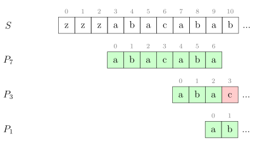
Figura 4.8: La poziția 10, nu putem extinde prefixul \(P_3\) cu
caracterul b, ci numai prefixul \(P_1\).
Automatul va găsi o deplasare validă și va trece în starea \(|P| = 7\) după ce consumă caracterele \(S[0 \dots 9]\). Apoi va
consuma următorul caracter (b) și va trece din starea \(7\) în starea \(\delta (7, \texttt {b}) = 2\), deoarece poate reutiliza ultimele două
caractere, ab. În fapt, automatul precalculează cel mai lung sufix al lui \(P_7\) care este și sufix al lui \(P_7\) și care
poate fi extins cu caracterul b.
Algoritmul KMP are o abordare ușor diferită: el evaluează toate prefixele lui \(P_7\) care sînt și sufixe ale lui
\(P_7\), respectiv \(P_3 = \texttt {aba}\) și \(P_1 = \texttt {a}\). Algoritmul încearcă să treacă în starea 3, dar constată că \(P_3\) nu poate fi extins cu
caracterul b (căci \(\texttt {b} \neq P[3] = \texttt {c}\)). Apoi, algoritmul încearcă să treacă în starea 1 și constată că \(P_1\) poate fi extins.
Așadar, algoritmul trece în starea 1, apoi consumă caracterul de la intrare (b) și urcă în starea
2.
Rezultă că funcția de prefix \(\pi \) aferentă unui șablon \(P\) trebuie să calculeze, pentru fiecare stare \(q\), toate
prefixele lui \(P_q\) care sînt și sufixe al lui \(P_q\). În fapt, lucrurile sînt mai simple. Este suficient ca \(\pi [q]\) să
stocheze doar cel mai lung dintre aceste prefixe, din care apoi le putem deduce pe următoarele.
De exemplu, prefixele lui \(P_7 = \texttt {abacaba}\) care sînt și sufixe sînt \(P_3 = \texttt {aba}\) și \(P_1 = \texttt {a}\), dar observăm că, la rîndul său, \(P_1\)
este prefix și sufix al lui \(P_3\). De aceea, lista completă a prefixelor lui \(P_q\) care sînt și sufixe va fi
\(\pi [q], \pi [\pi [q]], \pi [\pi [\pi [q]]], \dots \)
Formal, definiția lui \(\pi \) este:
\[\pi (q) = \max \{ k\ |\ k < q \textrm { și } P_k \sqsupset P_q \}\]
Cum construim vectorul \(\pi \)? În mod foarte elegant, \(P\) trebuie să răspundă la aceeași întrebare despre el
însuși ca și despre vectorul \(S\): dacă mă aflu în starea \(q\), care este cel mai lung prefix al lui \(P\) care este și
sufix al lui \(P_q\)?
Redăm implementarea algoritmului. Precizăm că indicii în pi[] sînt decalați cu 1, deoarece vectorul
este indexat de la zero. De exemplu, informația „pentru șirul abacaba, cel mai lung prefix care este și
sufix este aba” se notează la poziția 6, așadar pi[6]=3.
Aparent, construcția lui \(\pi \) poate dura \(\mathcal {O}(m^2)\), întrucît fiecare buclă while poate face \(m\) iterații. Totuși,
algoritmul KMP, ca și automatul finit, avansează spre dreapta cel mult cu o stare la fiecare caracter
citit. De aceea, numărul de incrementări ale lui \(k\) în funcția build_pi() este de cel mult \(m-1\), iar numărul de
scăderi nu poate fi mai mare. Funcția are complexitatea amortizată \(\mathcal {O}(m)\). Prin același raționament,
funcția kmp() are complexitatea amortizată \(\mathcal {O}(n)\), iar complexitatea totală a algoritmului KMP este
\(\mathcal {O}(m + n)\).
4.6 Aplicații
Iată două aplicații foarte directe. Secțiunea de probleme conține aplicații mai complexe.
Test de rotație
Date fiind două șiruri \(S\) și \(T\), determinați dacă \(T\) este rotația lui \(S\).
Soluție: Concatenăm \(S\) cu el însuși. În șirul \(S + S\) îl căutăm pe \(T\).
Completarea unui palindrom
Dat fiind un șir \(S\), adăugați cît mai puține caractere la finalul lui pentru a îl face palindrom.
Soluție: Ne interesează cel mai lung sufix al lui \(S\) care este palindrom. Prefixul dinaintea acestui
palindrom trebuie răsturnat și adăugat după \(S\). De aceea, Construim șirul \(S^R + \# + S\). Pe acest șir calculăm funcția
\(\pi \). Prin definiție, \(\pi [n - 1]\) ne arată cel mai lung sufix al lui \(S\) care este prefix al lui \(S^R\), adică exact cel mai lung sufix
palindromic al lui \(S\).
Problema ne cere să aflăm cel mai mic prefix al unui șir \(S\) pe care, dacă îl repetăm, obținem șirul \(S\).
Ultima repetiție poate fi incompletă.
Fie răspunsul \(k\). Atunci \(S[0 \dots k-1] = S[k \dots 2k-1] = \dots \). Dar aceasta înseamnă că \(S[0 \dots n - k - 1] = S[k \dots n - 1]\). Cu alte cuvinte, sufixul de lungime \(n - k\) este și prefix!
Răspunsul este pur și simplu \(n - \pi [n - 1]\).
În această problemă recunoaștem testul clasic dacă două șiruri \(S\) și \(T\) se pot obține unul dintr-altul prin
rotații. Dar cum gestionăm permutarea?
Vom modifica algoritmul KMP ca să țină cont și de permutări. Să considerăm șablonul din exemplu, \(P = (2\ 1\ 3\ 3\ 2\ 1)\). La poziția
\(i\) dorim să aflăm lungimea celui mai lung prefix care este și sufix. Dar aceasta depinde de sensul cuvîntului
„este”1
.
Nu ne interesează ca prefixul să fie egal cu sufixul, ci să existe o permutare care mapează sufixul în
prefix. De exemplu, \(\pi [4]=2\) pentru că prefixul \((2\ 1)\) se potrivește cu sufixul \((3\ 2)\).
Cum construim funcția \(\pi \) astfel modificată? Să pornim de la \(\pi [2] = 2\) (deoarece \((2\ 1)\) se potrivește cu \((1\ 3)\)). Am putea
extinde cu succes perechea de subșiruri cu o poziție dacă \((2\ 1\ 3)\) s-ar potrivi cu \((1\ 3\ 3)\). Dar nu este cazul. În primul
subșir, 3 este o valoare nou întîlnită, pe cînd în al doilea valoarea 3 a apărut și pe poziția 1. De aceea
nu există nicio permutare care să mapeze prefixul peste sufix. Așadar, trebuie să înlocuim
testul de egalitate de caractere din algoritmul KMP normal cu un test de asemănare între
caractere:
Dacă \(P[k]\) este la prima apariție (deci \(P[k] \neq P[0], P[1], ..., P[k-1]\)), trebuie ca și \(P[i] \neq P[i - k], P[i - k + 1], ..., P[i - 1]\).
Altfel, dacă \(P[k] = P[k']\) pentru un \(k' < k\), trebuie ca și \(P[i] = P[i - (k - k')]\).
Putem verifica aceste (in)egalități dacă stocăm, pentru fiecare poziție \(k\), poziția apariției anterioare a lui
\(P[k]\) în \(P\).
Același raționament îl facem și în a doua trecere, în care îl căutăm pe \(P\) în \(S + S\). Cînd evaluăm \(S[i]\)
și sîntem în starea \(k\), vom confrunta aparițiile anterioare ale lui \(S[i]\) în \(S\) cu aparițiile lui \(P[k]\) în
\(P\).
Problema ne poate duce rapid cu gîndul la elementele de bază:
KMP și funcția prefix, deoarece avem un șablon ale cărui apariții se pot suprapune.
Programare dinamică.
Să punem la punct detaliile. Voi folosi simbolul \(P\) (pattern) în loc de \(T\), din obișnuință. Ne putem
convinge rapid că o abordare greedy nu funcționează. Iată un exemplu similar cu cel din enunț: \(S\) =
????abcab, \(P\) = abcab. Atunci este important să completăm șirul ca \(S\) = ?abcabcab, începînd cu a doua
poziție, pentru a obține două potriviri.
Ce parametri ne trebuie ca să definim bine recurența? Din exemplul de mai sus observăm că nu este
suficient să definim \(i\) = numărul de litere consumate din \(S\) (\(0 \leq i \leq |S|\)). Trebuie să putem spune „după prima
literă, vrem să fim în starea 0, și abia de la a doua începînd să trecem în stările 1, 2 etc.”
Deci mai definim și \(j\) = starea în care ne aflăm (\(0 \leq j \leq |P|\)). Fie \(d_{i,j}\) numărul maxim de suprapuneri
pe care îl putem obține pînă la aceste coordonate sau -1 dacă nu putem ajunge la aceste
coordonate.
Eu am ales să formulez programarea dinamică înainte, astfel: din \(d_{i,j}\) trecem în \(d_{i+1,k+1}\), unde:
\(k\) este orice tranziție posibilă din starea \(j\);
\(S[i] = P[k]\) sau \(S[i] = \texttt {?}\);
Cînd spunem „trecem în”, vrem să spunem că \(d_{i+1,k+1}\) primește maximul din ce avea deja și \(d_{i,j}\),
eventual plus încă o unitate dacă \(k +1 = |P|\) (deoarece am completat încă o apariție).
De exemplu, pentru șirul \(P\) = abacaba, valoarea \(d_{20}{7}\) arată cîte potriviri putem obține în primele 20 de
caractere, astfel încît după al 20-lea (deci \(S[19]\)) să fim în starea 7 (deci să terminăm o potrivire). De aici
putem trece:
în \(d_{21,4}\) dacă următorul caracter este c sau ?, deoarece din abacabac putem refolosi 4 litere;
în \(d_{21,2}\) dacă următorul caracter este b sau ?, deoarece din abacabab putem refolosi 2 litere;
în \(d_{21,1}\) dacă următorul caracter este a sau ?, deoarece din abacabaa putem refolosi o literă;
în \(d_{21,0}\), altfel.
Soluție în \(\bigoh (SP^2)\)
Prima iterație a codului meu proceda chiar astfel. Pentru fiecare \(i\) și fiecare \(j\), pornea cu \(k = j\) și repeta \(k = \pi [k - 1]\) pînă
cînd ajungea la 0. Dar acest cod este prea lent, deoarece ajunge la \(\bigoh (SP^2)\) atunci cînd funcția \(\pi \) scade lent, de
exemplu pentru un șablon ca \(P\) = aaa …aaa.
Soluție în \(\bigoh (SP\Sigma )\)
În loc de aceasta, putem să calculăm tranzițiile din starea \(d_{i,j}\) în alte stări conform următorului caracter,
care fie este impus (literă), fie poate lua \(\Sigma \) valori (?). Practic, trebuie să răspundem la întrebări de tipul:
„Dacă ne aflăm în starea \(j\), iar următorul caracter de la intrare este \(S[i]\), în ce stare ajungem?”. Aceste
informații reprezintă exact matricea de tranziție despre care am vorbit în capitolul despre automate!
Cu ajutorul funcției de prefix \(\pi \), putem calcula această matrice în \(\bigoh (P^2)\) (o sursă mai veche) sau chiar
\(\bigoh (P \Sigma )\).
Capitolul 5 Funcția Z
În acest minicapitol vom introduce încă o funcție utilă în algoritmii pe șiruri de caractere. Vă
recomand cu căldură articolul de pe CP Algorithms, care este bine scris și din care acest capitol se
inspiră.
5.1 Definiție
Dat fiind un șir \(S\) de \(n\) caractere, funcția \(Z\) asociată este
În cuvinte, \(Z(i)\) este numărul maxim \(k\) de caractere începînd cu poziția \(i\) care se potrivesc cu începutul lui \(S\).
Prin convenție, \(Z(0) = 0\). Figura 5.1 arată un exemplu.
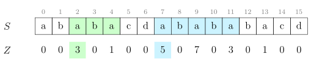
Figura 5.1: Funcția \(Z\). La poziția 2, \(Z(2) = 3\), ceea ce arată că \(S[2 \dots 5) = S[0 \dots 3)\). Similar,
\(Z(7) = 5\) arată că \(S[7 \dots 12) = S[0 \dots 5)\).
5.2 Calcularea funcției \(Z\)
Desigur, putem calcula funcția \(Z\) naiv, în \(\bigoh (n^2)\):
Dar există și un algoritm mai bun, în \(\bigoh (n)\). El procedează astfel. În primul rînd, să observăm că la orice
poziție \(j\) intervalul \([j, j + Z(j))\) indică exact suprapunerea maximă cu un prefix al lui \(S\). Acum, să considerăm că
sîntem la pasul \(i\) și dorim să calculăm \(Z(i)\). Dintre toate intervalele \([j, j + Z(j))\) calculate anterior (cu \(j < i\)), îl
vom reține mereu pe cel cu capătul drept maxim, pe care îl vom denumi \([l, r)\). Cu alte cuvinte,
intervalul \([l, r)\) este cel mai din dreapta interval de pînă acum despre care știm că este prefix al lui
\(S\).
Poziția \(r\) din șir are o semnificație aparte. De la \(r\) spre dreapta, algoritmul încă nu a examinat niciun
caracter și nu știe nimic despre \(S\). Deci \(r\) este ca o frontieră pe care treptat o împingem spre
dreapta.
Acum să ne gîndim în ce situație se poate afla \(i\) raportat la \([l, r)\). Este clar că \(i > l\), deoarece \([l, r)\) corespunde unei
poziții \(j\) deja evaluate. Deci rămîn două cazuri.
Dacă \(i \geq r\), sîntem dincolo de frontieră, în teritoriu necunoscut. Îl vom calcula pe \(Z(i)\) naiv, poziție cu poziție.
Dacă \(Z(i) > 0\) sau dacă \(i > r\), aceasta va conduce și la actualizarea intervalului \([l, r)\), deoarece capătul drept va fi
\(i + Z(i) > r\).
Iar dacă \(i < r\), vom refolosi informații din valorile \(Z\) anterioare, astfel. Știm că \(S[l \dots r) = S[0 \dots r - l)\). Asta înseamnă că \(S[i \dots r) = S[i - l \dots r - l)\). Așadar,
orice se poate spune despre subșirul lui \(S\) care începe la poziția \(i\) știm deja de la poziția \(i - l\). De aceea, în
principiu, \(Z(i) = Z(i - l)\). Dar sînt necesare două modificări:
1.
Din cauza frontierei \(r\), noi nu cunoaștem mai mult de \(r - i\) caractere la dreapta. Deci vom lua \(Z(i) = \min (Z(i - l), r - i)\).
2.
Se prea poate ca \(S[i \dots r)\) să continue să se potrivească cu prefixul lui \(S\) și dincolo de frontiera \(r\). Deci
vom face o extindere naivă a lui \(Z(i)\).
Figura 5.2: La poziția \(i=9\), intervalul curent este \([l, r) = [7, 12)\), ceea ce arată
că \(S[7 \dots 12) = S[0 \dots 5)\). De aceea, inițializăm \(Z(9)\) cu \(Z(9-7) = Z(2) = 3\). Ulterior, prin comparații naive,
îl creștem pe \(Z(9)\) pînă la valoarea \(7\). Noul interval va fi \([l, r) = [9, 16)\).
Dacă i>=r, atunci valoarea inițială a lui z[i] rămîne cea preinițializată, adică 0.
Comparația naivă din while va eșua cel mai tîrziu la sfîrșitul șirului, cînd vom compara
s[z[i]] cu terminatorul de șir, '\0'. Dacă implementați algoritmul pe std::string, trebuie
să adăugați condiția suplimentară i<n.
5.4 Analiza complexității
Ca și în cazul algoritmului KMP, și calculul funcției Z pare \(\bigoh (n^2)\) datorită buclelor imbricate for și while.
Dar putem da o limită mai bună. La pasul \(i\):
Dacă \(i \geq r\), atunci comparațiile naive din bucla while au ca efect creșterea lui \(r\), cu excepția
cazului în care chiar prima comparație eșuează. Aceasta deoarece sîntem dincolo de
frontieră, deci intervalul \([i, i + Z(i))\) va fi noul interval ales.
Dacă \(i < r\) și am inițializat \(Z(i)\) chiar cu \(r - i\) (ca în cazul \(i = 9\) din figura 5.2), atunci din nou fiecare iterație
a buclei while cu excepția primeia va duce la creșterea lui \(r\), pentru că \(i + Z(i) = r\), deci capătul drept
este deja la frontieră.
Dacă \(i < r\) și am inițializat \(Z(i)\) cu o valoare mai mică decît \(r - i\) (ca în cazul \(i = 8\) din aceeași figură), atunci
prima comparație din bucla while va eșua. Dacă n-ar fi fost așa, atunci aceeași comparație
ar fi avut succes și la poziția \(i - l\) și deci \(Z(i - l)\) ar fi fost mai mare. De exemplu, presupunînd prin
absurd că am determina că \(Z(8) = 1\), aceasta ar însemna pe de o parte că \(S[8] = S[0] = \) a. Pe de altă parte, noi
știm că \(S[8] = S[1]\) deoarece fereastra \([7, 12)\) este o copie a ferestrei \([0, 5)\). Atunci \(S[1] = S[0]\) și ar fi trebuit ca și \(Z[1]\) să fie egal
cu \(1\).
Cum valoarea lui \(r\) nu poate depăși \(n\), rezultă că comparația din bucla while are cel mult \(n\) eșecuri și cel
mult \(n\) potriviri. Algoritmul rulează în \(\bigoh (n)\).
5.5 Aplicații
Să reluăm aplicațiile și problemele din capitolul anterior. Nu vom mai include programe complete,
întrucît ele sînt foarte similare cu versiunile cu KMP.
Căutarea unui subșir într-un șir
Vom rezolva aceeași problemă ca și în capitolele despre Rabin-Karp și KMP: Date fiind un șir \(S\) de
lungime \(n\) și un șablon \(P\) de lungime \(m\), vom găsi toate aparițiile lui \(P\) în \(S\). Pentru testare, puteți rezolva
problema String Matching (CSES).
O primă variantă tratează separat șirurile \(S\) și \(P\), similar algoritmului KMP. Construim întîi funcția \(Z\)
peste șablonul \(P\). Apoi parcurgem șirul \(S\) și aflăm la fiecare poziție numărul de caractere
care se potrivesc cu un prefix al lui \(P\). Calculele făcute în \(S\) nu mai afectează vectorul \(Z\) deja
calculat.
Ca și în algoritmul KMP, cele două porțiuni de cod seamănă. Esența este:
O implementare mai concisă calculează funcția \(Z\) peste șirurile concatenate \(P + S\). Odată ce atingem poziția \(m\)
(deci intrăm în șirul \(S\)), orice poziție \(i\) unde \(Z(i) \geq m\) indică o deplasare validă. Pentru claritate, putem să
inserăm un simbol din afara alfabetului în concatenare: \(P\#S\). Dar acest lucru nu este strict
necesar.
Pentru a determina dacă două șiruri \(S\) și \(T\) se pot obține unul dintr-altul printr-o rotație, este suficient să
îl căutăm pe \(T\) în \(S + S\), folosind codul de mai sus.
Completarea unui palindrom
Dat fiind un șir \(S\), adăugați cît mai puține caractere la finalul lui pentru a îl face palindrom.
Ca și în varianta cu KMP, ne interesează cel mai lung sufix al lui \(S\) care este palindrom. Pentru
aceasta, construim șirul \(S^R + \# + S\). Pe acest șir de lungime \(2n + 1\) căutăm cea mai mică poziție \(k\) pentru care \(k + Z(k) = 2n + 1\),
deoarece sufixul care începe la această poziție este cel mai lung sufix palindromic al lui
\(S\).
Problema Bart (NerdArena)
Reluăm cerința: trebuie să aflăm cel mai mic prefix al unui șir \(S\) pe care, dacă îl repetăm, obținem șirul
\(S\). Ultima repetiție poate fi incompletă.
Logica este similară cu cea bazată pe KMP. Fie răspunsul \(k\). Atunci \(S[0 \dots k-1] = S[k \dots 2k-1] = \dots \). Dar aceasta înseamnă că \(S[0 \dots n - k - 1] = S[k \dots n - 1]\). Prin
definiție, aceasta înseamnă că \(Z(k) = n - k\). Așadar, căutăm prima poziție \(k\) unde \(k + Z(k) = n\).
Problema Cifru (Baraj ONI 2006)
Soluția este similară cu cea bazată pe KMP. În loc să testăm ciclicitatea cu KMP, o vom testa cu
funcția Z. De asemenea, trebuie să redefinim calculul funcției Z ca să nu testeze egalitatea perfectă, ci
egalitatea prin prisma unei permutări.
Nu mai detaliem codul, dar ilustrăm valoarea funcției Z astfel modificate pentru exemplul de la intrare,
respectiv \(P = \) 213321 și \(S = \) 131322. Am inserat un caracter # doar pentru claritate.
\(P + \# + S + S\)
2
1
3
3
2
1
#
1
3
1
3
2
2
1
3
1
3
2
2
\(Z\)
0
2
1
3
3
2
3
2
2
6
2
1
3
2
2
4
2
1
1
Tabela 5.1: Funcția \(Z\) pentru exemplul din problema Cifru.
Valoarea maximă este 6 deoarece subșirul (1 3 2 2 1 3)
corespunde cu prefixul (2 1 3 3 2 1) dacă aplicăm permutarea
(2 3 1).
Capitolul 6 Quicksort ternar
În acest scurt capitol vom studia un algoritm simplu și util, dar cvasinecunoscut. Ca întotdeauna, pot
exista alți algoritmi mai scurți sau mai rapizi, însă fiecare armă pe care ne-o adăugăm la arsenal este
binevenită.
6.1 Algoritmul
Dacă dorim să sortăm naiv \(n\) șiruri de cîte \(m\) caractere, atunci sortarea naivă (de exemplu std::sort) va
avea o complexitate de \(\bigoh (mn \log n)\), întrucît compararea a două stringuri durează \(\bigoh (m)\). Această sortare este agnostică.
Ori de cîte ori compară două șiruri, ea repornește de la primul caracter. Dar, pe măsură ce intervalele
de sortat se fragmentează, șirurile vor începe să aibă prefixe comune, posibil lungi. Ar fi frumos să
evităm recompararea lor.
Algoritmul de quicksort ternar (engl. Multi-key quicksort) face exact acest lucru. Algoritmul alege un
caracter pivot, \(p\) și face o partiționare similară cu quicksort, dar în trei categorii:
1.
Stringuri care au pe prima poziție un caracter mai mic decît \(p\).
2.
Stringuri care au pe prima poziție caracterul \(p\).
3.
Stringuri care au pe prima poziție un caracter mai mare decît \(p\).
Algoritmul se reapelează pentru aceste trei categorii, cu o observație esențială: știm că șirurile din
categoria (2) au primul caracter identic, deci le vom reexamina începînd cu al doilea caracter. La fel
procedăm și pentru caracterele următoare.
6.2 Implementare
charc[N][MAX_LEN+1];// conținutul șirurilorchar*s[N];// ordinea șirurilor// Sortează șirurile s[left...right), care sînt egale pînă la poziția pos-1.// Modifică s[], dar nu copiază șirurile în sine, căci ar fi costisitor.voidtsort(intleft,intright,intpos){
if(right-left<=1){
return;
}
inti=left,lt=left,gt=right;
charpivot=s[left][pos];
// Invariant de buclă:// * s[left ... lt) al pos-lea caracter este < pivot// * s[lt ... i) al pos-lea caracter este == pivot// * s[i] șirul în curs de evaluare// * s(i ... gt) șiruri încă neevaluate// * s[gt ... right) al pos-lea caracter este > pivotwhile(i<gt){
if(s[i][pos]<pivot){
swap(s[i++],s[lt++]);
}elseif(s[i][pos]>pivot){
swap(s[i],s[--gt]);
}else{
i++;
}
}
tsort(left,lt,pos);
if(s[lt][pos]!='\0'){
tsort(lt,gt,pos+1);
}
tsort(gt,right,pos);
}
intmain(){
...
for(inti=0;i<N;i++){
s[i]=(char*)c[i];
}
tsort(0,N,0);
...
}
Remarcăm că algoritmul nu mută niciodată conținutul șirurilor, ci doar interschimbă pointerii la șiruri.
Eu am ales să fac asta ținînd în s pointeri la șirurile efective. Dacă preferați, puteți gestiona ordinea
folosind indici de linie într-o matrice de caractere sau alte tehnici.
Complexitatea teoretică este egală cu a algoritmului quicksort obișnuit, dar operația de bază este
compararea de caractere individuale, nu de șiruri.
6.3 Benchmarks
Am făcut benchmark-uri cu alte două metode: stringuri STL sortate cu STL și stringuri C sortate cu
STL. Setul de date conține 1.000.000 de șiruri aleatoare de lungime între 20 și 50. Rezultatele au
fost:
metodă
timp
std::sort pe string C++
445 ms
std::sort pe char*
321 ms
sortare ternară pe char*
125 ms
Rezultatele variază, dar nu drastic, în funcție de distribuția literelor din șiruri. Sortarea ternară
tratează bine cazurile degenerate (în special situațiile cu prefixe egale lungi).
Mai important, acest algoritm ne permite să intervenim în timpul sortării pentru a folosi valorile
parțiale, după cum vom vedea în problemele următoare.
Observație.
Dacă setul inițial conține două cuvinte \(P\) și \(S\) unde \(P \sqsubseteq S\) îl putem ignora pe \(S\).
Demonstraţie.
Dacă un cuvînt generat, \(C\), era compatibil cu setul inițial, el va fi compatibil și
cu setul fără \(S\) (doar am eliminat o restricție). Dacă era incompatibil din cauza lui \(P\) sau a lui \(S\), va
fi incompatibil și cu setul fără \(S\). Există trei cazuri posibile și în toate trei continuă să existe o
incompatibilitate între \(C\) și \(P\):
1.
\(C \sqsubseteq P \sqsubseteq S\)
2.
\(P \sqsubseteq C \sqsubseteq S\)
3.
\(P \sqsubseteq S \sqsubseteq C\)
□
Vom elimina toate cuvintele din set care au prefixe tot în set și vom denumi ceea ce rămîne setul
redus.
Mai departe, mie mi-a sărit în ochi exemplul 2 din enunț. El este suficient de mic încît să-l putem
analiza de mînă, iar răspunsul este suficient de mare încît să ne confirme orice intuiție
avem despre soluție. O primă intuiție este că răspunsul este un produs de factori, dintre
care unii vor fi mici. Așadar, să folosim din plin uneltele pe care ni le oferă GNU/Linux!
🙂
Setul redus este (\(aaaab\), \(aab\), \(bb\)). Are sens să adăugăm cuvinte în ordinea crescătoare a lungimii, deoarece un
cuvînt odată ales va interzice adăugarea altor cuvinte cărora el le este prefix.
Lungime 2. Ce cuvinte putem adăuga? Din cele \(3 \times 3 = 9\) posibile, scădem prefixele de lungime 2 existente în
setul de intrare, deci \(aa\) și \(bb\). Rămîn 7 posibilități. Să alegem una și să o denumim simbolic \(pp\). Nu contează
dacă \(pp\) este \(ac\) sau \(ca\) sau altceva. Ce contează este că orice continuare a lui \(pp\) cu alte litere devine
ilegală.
Lungime 3. Din \(3^3 = 27\) de posibilități, 8 sînt ilegale:
\(bb\) și \(pp\) urmate de orice caracter. Vom nota continuările cu caracterul \(?\), așadar \(bb?\) și \(pp?\).
Prefixele de lungime 3 din setul de intrare, deci \(aaa\) și \(aab\). Rămîn 19. Să generăm un nou cuvînt
simbolic, \(qqq\). Facem remarca încurajatoare că 7 și 19 se află printre factorii răspunsului
așteptat.
Lungime 4. Din \(3^4 = 81\) de posibilități, 25 sînt ilegale. Să detaliem puțin ca să obținem regula
generală:
Existau deja 6 cuvinte de lungime 3: \(bb?\) și \(pp?\).
La acestea adăugăm cuvintele de la intrare de lungime fix 3: \(aab\).
La acestea adăugăm cuvintele de lungime 3 generate: \(qqq\).
Oricare dintre acestea nu pot fi extinse cu niciun caracter, deci \(8 \times 3 = 24\) de cuvinte ilegale.
În plus, mai există un singur prefix de lungime 4 în șirul de intrare: \(aaaa\).
Posibilitățile legale sînt \(81-25=56\), dar nu contează, căci nu avem de generat cuvinte de lungime 4. Acum ne
putem aventura să formulăm regula generală.
Operăm doar pe setul redus (eliminăm toate cuvintele care au prefixe în set).
Fie \(\Sigma \) mărimea alfabetului.
Fie \(l\) lungimea curentă a cuvintelor pe care le studiem.
Fie \(f_l\) numărul de cuvinte de lungime \(l\) din setul redus și fie \(g_l\) numărul de cuvinte de lungime \(l\)
pe care trebuie să le generăm noi.
Fie \(C_l\) numărul de cuvinte de lungime \(l\) pe care nu avem voie să le mai extindem.
Atunci \(C_l = (C_{l-1} + f_{l- 1} + g_{l - 1}) \cdot \Sigma \). Aceasta deoarece nici cuvintele deja interzise anterior, nici cele din setul redus,
nici cele generate de noi de lungime exact \(l - 1\) nu mai pot fi continuate în mod legal cu niciun
caracter.
În plus, doar la pasul curent (fără repercusiuni la lungimile viitoare), nu avem să generăm
cuvinte de lungime \(l\) care apar ca prefixe în setul redus. De exemplu, la \(l=4\) nu avem voie să
generăm cuvîntul \(aaaa\), dar la \(l=5\) vom avea voie să generăm cuvintele \(aaaaa\) sau \(aaaac\).
Din toate posibilitățile rămase, alegem atîtea cuvinte cîte ne cer datele de intrare. Ordinea
contează.
Să ne continuăm analiza exemplului.
Lungime 5. Din \(3^5 = 243\) de posibilități, 73 sînt ilegale: cele 24 anterioare \(\times \) 3, plus singurul prefix de lungime 5
(\(aaaab\)). Din cele \(243-73=170\) legale trebuie să alegem două, iar ordinea contează, deci \(170 \times 169\) de posibilități. Să le denumim \(rrrrr\) și
\(sssss\).
Lungime 6. Din \(3^6 = 729\) de posibilități, 225 sînt ilegale:
Cele 72 anterioare de lungime 5 (pentru completitudine, ele sînt \(bb???\), \(pp???\), \(aab??\), \(qqq??\)).
Cele de la intrare de lungime fix 5 (\(aaaab\)).
Cele de lungime 5 generate (\(rrrrr\), \(sssss\)).
Toate urmate de orice caracter, deci \(75 \times 3 = 225\).
Nu există prefixe de lungime 6 între datele de intrare.
Rămîn \(729 - 225 = 504\) moduri de a alege cuvîntul de lungime 6. Rezultatul este \(7 \times 19 \times 170 \times 169 \times 504 \mod \np {1000000007} = \np {925829353}\).
Detalii de implementare
Rămîne să răspundem eficient la trei clase de întrebări:
1.
Ce șiruri de la intrare sînt prefixe ale altora? Restul formează setul redus.
2.
Cîte șiruri de lungime exact \(l\) există în setul redus?
3.
Cîte prefixe distincte de lungime \(l\) există în setul redus?
Editorialul recomandă un trie. Nu e rău, dar putem adapta quicksortul ternar pentru această problemă.
Să considerăm iterația curentă, unde sortăm intervalul \([l, r)\) la poziția \(pos\).
Prima adaptare: dacă oricare dintre șiruri, fie el \(s[i]\) cu \(i \in [l, r)\), se termină la poziția \(pos\), atunci notăm faptul că
există un șir de lungime \(pos\) (întrebarea 2 de mai sus). Mai mult, nu mai reapelăm deloc sortarea
pentru subintervale ale lui \([l, r)\). Șirul \(s[i]\) este prefix pentru toate celelalte, care deci nu fac parte din setul redus
(întrebarea 1 de mai sus).
A doua adaptare: dacă niciun șir din \([l, r)\) nu se termină la poziția pos, atunci știm că după
partiționare zona din mijloc (șirurile care pe poziția \(pos\) sînt egale cu pivotul) definește un
prefix distinct de lungime \(pos + 1\), la care nu vom ajunge la niciun alt moment pe parcursul sortării
(întrebarea 3 de mai sus). Despre celelalte două zone încă nu știm nimic. Este posibil ca ele să fie
vide.
Programul include și o optimizare de viteză. Cînd recursivitatea rămîne cu un singur șir (deci
\(r = l + 1\)), ea se va apela pînă la finalul șirului ca să constate că, la fiecare pas \(pos\), există un prefix
distinct de lungime \(pos\). Această recursivitate poate avea adîncime 300 000 pe teste patologice,
ceea ce o face lentă și consumatoare de memorie. Am înlocuit acea recursivitate cu o buclă
for.
Soluția oficială recomandă folosirea unui trie sau calcularea unor hash-uri pe prefixele fiecărui string.
Iată și o soluție care folosește doar sortarea.
Mai întîi, să simplificăm determinarea similitudinii între două seturi de \(k\) șiruri a cîte \(p\)
caractere. Varianta naivă compară efectiv perechi de șiruri. Iată o altă variantă care are
tot complexitate \(\bigoh (kp)\), dar reduce problema la una cunoscută: vom interclasa cele \(k\) șiruri. De
exemplu, din (abc, def, ghi) obținem adgbehcfi. Cu această organizare, două colecții de
cărți au similitudinea \(x\) dacă șirurile interclasate au lungimea prefixului comun de lungime
\(kx \leq l < k(x + 1)\).
Atunci putem reformula problema astfel: pentru fiecare interogare dorim să aflăm numerele de șiruri cu
care ea are prefixe comune de lungimi cel puțin \(kx\), respectiv cel puțin \(k(x + 1)\). Răspunsul la interogare este
diferența acestor două numere.
De aceea, vom genera explicit toate cele \(q\) interogări, concatenînd \(k\) șiruri din cele \(m\). Apoi le vom sorta
împreună cu cele \(n\) șiruri originale. Mărimea totală a datelor de sortat va fi \((q + n)kp\), adică 18 MB. Pentru
sortarea ternară, acesta este un fleac. 💪 Iată șirurile sortate pentru exemplul din
enunț.
șir
tip
lungimi de prefix dorite
răspuns
atbrczds
șir
atbrxxxx
interogare
[2, 4)
0
atfrffxs
interogare
[2, 4)
1
ftarsffs
interogare
[2, 4)
1
ftxxxxxx
șir
gfeafsaf
interogare
[6, 8)
2
gfeafsax
șir
gfeafsdf
șir
Să observăm că interogarea gfeafsaf are prefixe comune de lungime 7, respectiv 6 cu cele două șiruri
care o urmează. În general, să considerăm momentul sortării cînd procesăm șirurile \([st \dots dr)\), care sînt
cunoscute ca fiind egale pe primele \(l\) poziții. Dintre aceste șiruri, unele sînt interogări, iar altele
sînt șiruri originale. Pentru fiecare interogare ne întrebăm: nu cumva lungimea \(l\) este exact
lungimea \(kx\)? Dacă da, atunci notăm pe interogare numărul de șiruri din \([st, dr)\). Similar și pentru
\(k(x+1)\).
Mai este o singură subtilitate care cere atenție. Este posibil ca o interogare să fie evaluată la aceeași
lungime \(kx\) de mai multe ori, pînă cînd la un moment dat ea va ajunge, în urma partiționării, în zona de
mijloc și va avansa la lungimea \(kx + 1\). Este important să nu-i atribuim un răspuns decît prima
oară.
Capitolul 7 Șiruri de sufixe
7.1 Definiție
Definiția 3 (Șir de sufixe).
Șirul de sufixe al șirului \(S\) de lungime \(n\) este lista celor \(n\) sufixe ale lui \(S\)
ordonată alfabetic.
În practică nu stocăm efectiv sufixele, deoarece am avea nevoie de \(\bigoh (n^2)\) memorie. În loc de asta, stocăm
doar indicii de început ai sufixelor.
Exemplu. Pentru \(S\) = abracadabra, șirul de sufixe \(A\) este:
poziție
valoare
sufix
0
10
a
1
7
abra
2
0
abracadabra
3
3
acadabra
4
5
adabra
5
8
bra
6
1
bracadabra
7
4
cadabra
8
6
dabra
9
9
ra
10
2
racadabra
Tabela 7.1: Șirul de sufixe al șirului abracadabra.
7.2 Aplicații
Ca să apreciem utilitatea șirurilor de sufixe, înainte de a discuta construcția, iată cîteva aplicații care
decurg imediat din șirul de sufixe:
7.2.1 Aparițiile unui subșir \(P\) în \(S\) (string matching)
Facem două căutări binare în \(A\) pentru a găsi prima și ultima apariție a unui sufix care începe cu \(P\).
Putem face asta în mod naiv în \(\bigoh (|P| \log n)\), cu o căutare binară în care la fiecare înjumătățire în comparăm
pe \(P\) cu candidatul curent. O soluție mai bună obține \(\bigoh (|P| + \log n)\) folosind vectorul LCP, discutat mai
jos.
Putem generaliza căutarea la o familie de șiruri, \(S_1, S_2, \dots , S_k\). Construim șirul de sufixe \(A\) al concatenării \(S_1\#S_2\#\dots \#S_k\), unde \(\#\)
este orice caracter din afara alfabetului. Aparițiile lui \(P\) în orice șir vor fi consecutive în
\(A\).
7.2.2 Rotația minimă dpdv lexicografic
Exemplu. Pentru șirul banana, rotația minimă este abanan. Vezi problema Glass Beads.
Construim șirul de sufixe al șirului \(SS\) și luăm primul sufix din \(A\) care începe pe o poziție mai
mică decît \(n\). O variantă mai simplă este să construim șirul de sufixe circulare ale lui \(S\),
după cum vom învăța în algoritmii de construcție (toate cele \(n\) sufixe au lungime exact
\(n\)).
7.3 Cele mai lungi prefixe comune
Definiția 4 (Vectorul LCP).
Vectorul \(LCP\) (engl. longest common prefix) reține lungimea prefixului
comun între fiecare două sufixe consecutive din șirul de sufixe.
Pentru șirul \(S\) = abracadabra, vectorul este
A
LCP
sufix
10
a
7
1
abra
0
4
abracadabra
3
1
acadabra
5
1
adabra
8
0
bra
1
3
bracadabra
4
0
cadabra
6
0
dabra
9
0
ra
2
2
racadabra
Tabela 7.2: Șirul LCP al șirului abracadabra.
Peste vectorul \(LCP\) putem construi orice structură de tip RMQ (tabelă rară, arbore de intervale etc.) pentru
a putea afla lungimea prefixului comun între orice două sufixe.
7.4 Aplicații
Toate aceste aplicații adaugă relativ puțin cod peste construcția propriu-zisă a vectorilor \(A\) și \(LCP\). Pentru
că nu am dorit să poluez secțiunea de probleme cu prea mult cod redundant, le discutăm doar
teoretic.
7.4.1 Cel mai lung subșir care apare de cel puțin două ori
Exemplu. Pentru șirul hocuspocus, cel mai lung subșir repetat este ocus. Vezi problema
GATTACA.
Lungimea acestui subșir este pur și simplu maximul din vectorul \(LCP\). Pozițiile de start ale subșirului sînt
cele două poziții din \(A\) care generează acel maxim.
7.4.2 Cel mai lung subșir care apare de cel puțin \(k\) ori
Exemplu. Pentru șirul scoobydoobydoo și \(k = 3\), răspunsul este oo. Vezi problema Substr.
Extindem raționamentul anterior. Ce înseamnă că un șir de lungime \(l\) apare de \(k\) ori în șir? Înseamnă că
există \(k - 1\) valori consecutive în vectorul \(LCP\), toate mai mari sau egale cu \(l\). Așadar, putem folosi tehnica
minimului în fereastră glisantă pentru a căuta minimul în fiecare subsecvență de lungime \(k-1\) a vectorului
\(LCP\). Răspunsul este maximul acestor minime.
7.4.3 Cel mai scurt subșir care apare o singură dată
Exemplu. Pentru șirul abababba, cel mai scurt subșir unic este bb. Vezi problema Subunic.
Considerăm, pe rînd, fiecare poziție \(i\) din șirul de sufixe. Pentru a diferenția sufixul care începe la \(A[i]\) de
alte subșiruri, trebuie să depășim prefixele comune pe care el le are cu subșirurile de la pozițiile \(A[i - 1]\) și \(A[i + 1]\).
Așadar, trebuie să luăm \(1 + \max (LCP[i], LCP[i + 1])\) caractere. Este necesar să ne asigurăm că acel număr de caractere este
disponibil (că nu depășim sfîrșitul șirului \(S\)). Răspunsul este poziția \(i\) care minimizează cantitatea de
mai sus.
7.4.4 Cel mai lung subșir comun între două șiruri \(S\) și \(T\)
Exemplu. Pentru \(S\) = abacaba și \(T\) = bbacba, cel mai lung subșir comun este bac. Vezi problema DNA
Sequencing.
Construim șirul de sufixe și vectorul \(LCP\) ale șirului \(S\#T\). Acum căutăm valoarea maximă în \(LCP\) între două sufixe
(consecutive) dintre care unul provine din \(S\) și unul din \(T\), adică valorile corespunzătoare din \(A\) sînt una mai
mică decît \(|S|\) și una mai mare decît \(|S|\).
Putem generaliza acest algoritm și la aflarea celui mai lung subșir comun într-o familie de șiruri, \(S_1, S_2, \dots , S_k\). Vezi
problema Life Forms.
7.4.5 Numărul de subșiruri distincte
Exemplu. Pentru \(S\) = ababa există 9 subșiruri distincte: a, ab, aba, abab, ababa, b, ba, bab, baba. Vezi
problemele Distinct Substrings și Ghicit.
Ne punem întrebarea cîte subșiruri distincte încep la o poziție dată. Dar iterăm prin poziții în
ordinea dată de șirul de sufixe. Să presupunem că la poziția \(A[i]\) avem \(LCP[i] = l\). Atunci primele \(l\) subșiruri le-am
contabilizat deja cînd am procesat poziția \(A[i - 1]\). Toate celelalte, pînă la sfîrșitul șirului, sînt subșiruri nou
întîlnite. Așadar, răspunsul este
\[\frac {n(n + 1)}{2} \; - \; \sum _i LCP[i]\]
7.4.6 Cel mai lung subșir palindrom
Exemplu. Pentru șirul anaaremere, cel mai lung subșir palindrom este remer.
Construim șirul de sufixe și vectorul \(LCP\) al șirului \(S\#S^R\), unde am notat cu \(S^R\) șirul \(S\) răsturnat. Pentru exemplul
dat obținem șirul anaaremere#eremeraana. Căutăm și returnăm valoarea maximă din \(LCP\) care ia naștere
între două sufixe din \(S\) și respectiv din \(S^R\).
Pentru exemplul dat, sufixele remeraana și remere#eremeraana vor fi consecutive în \(A\) și vor avea o
valoare \(LCP\) de 5.
7.5 Construcția șirului de sufixe
Algoritmii sînt relativ clari în teorie, dar codul este surprinzător de complex.
Există și algoritmi de construcție în \(\bigoh (n)\) (vezi Wikipedia), dar nu sînt implementabili în timp de
concurs.
7.5.1 Algoritmul în \(\bigoh (n^2 \log n)\)
Cel mai simplu este să sortăm pur și simplu sufixele ca pe orice alte șiruri. Acest algoritm naiv
funcționează în \(\bigoh (n^2 \log n)\), deoarece sortarea presupune \(\bigoh (n \log n)\) comparații, iar compararea șirurilor durează \(\bigoh (n)\). Sortarea
cu quicksort ternar, discutată anterior, se comportă bine pe șiruri aleatorii, dar este foarte
lentă pe cazuri degenerate (multe caractere egale), deoarece suma lungimilor sufixelor este
\(\bigoh (n^2)\).
7.5.2 Algoritmul în \(\bigoh (n \log ^2 n)\)
Pentru acest algoritm și următorul, conceptul de bază este dublarea prefixului:
1.
Sortăm caracterele individuale (cu sortare prin numărare).
2.
Sortăm toate subșirurile de două caractere.
3.
Sortăm toate subșirurile de patru caractere.
4.
…
Infoarena menționează acest algoritm care face un efort de \(\bigoh (n \log n)\) pentru fiecare dublare a prefixului, așadar \(\bigoh (n \log ^2)\)
în total.
Ne propunem să calculăm permutarea inversă șirului de sufixe, așadar să aflăm pentru fiecare
poziție \(i\) al câtelea sufix este \(S[i \dots n - 1]\) în lista ordonată. Pentru lungimea \(l = 2^0 = 1\), să inițializăm un vector cu ordinea
fiecărei litere în alfabet. Aceasta este, într-adevăr, o sortare corectă a subșirurilor de lungime
1.
\(k\)
\(l = 2^k\)
a
b
r
a
c
a
d
a
b
r
a
$
0
1
0
1
17
0
2
0
3
0
1
17
0
\(-\infty \)
Cum facem trecerea la \(l = 2\)? Observația-cheie este că un subșir de lungime \(2^{k + 1}\) este o pereche de subșiruri de
lungime \(2^k\), iar toate subșirurile de lungime \(2^k\) au fost deja ordonate la pasul anterior. Așadar, algoritmul va
sorta vectorul de perechi \((0, 1)\), \((1, 17)\), \((17, 0)\) etc. Similar procedează și la pașii următori. Iată tabelul complet (sînt
necesare trei iterații după cea inițială):
\(k\)
\(l = 2^k\)
a
b
r
a
c
a
d
a
b
r
a
$
0
1
0
1
17
0
2
0
3
0
1
17
0
\(-\infty \)
1
2
2
5
8
3
6
4
7
2
5
8
1
0
2
4
2
6
10
3
7
4
8
2
5
9
1
0
3
8
3
7
11
4
8
5
9
2
6
10
1
0
Tabela 7.3: Permutările obținute
de algoritmul polilogaritmic. La final, ordinea lui acadabra$
este 4, indicînd că sufixul este mai mare decît $, a$, abra$
și abracadabra$.
Putem opri prematur algoritmul dacă el depistează \(n\) clase distincte (adică a terminat de diferențiat
toate sufixele). La final, rămîne doar să inversăm permutarea obținută.
Algoritmul este mai simplu decît următorul și se comportă acceptabil în practică (pe calculatorul meu,
66 ms pentru \(n = \np {200000}\), 460 ms pentru \(n = \np {1000000}\)).
Implementare
Acesta este un fragment din implementarea completă cu generare de șiruri și benchmarking. Codul
primește un șir s de n caractere și construiește vectorul sa[].
structsort_suffix_array{
constchar*s;
intn,len;
intsa[N+1];// Șirul de sufixe. sa[i] = al i-lea sufix în ordine lexicograficăintord[N+1];// ord[i] = sa^{-1}. ord[i] = ordinea lui s[i...n-1], cu duplicateintcl[N+1];// cl[i] = clasa lui sa[i], cu duplicatevoidinit(char*s,intn){
this->s=s;
this->n=n;
}
boolcmp(inti,intj){
if(ord[i]!=ord[j]){
return(ord[i]<ord[j]);
}
i+=len;
j+=len;
return(i<n&&j<n)
?(ord[i]<ord[j])
:(i>j);
}
voidbuild(){
for(inti=0;i<n;i++){
sa[i]=i;
ord[i]=s[i];
cl[i]=0;
}
len=1;
while(cl[n-1]!=n-1){// ne oprim cînd ajungem la n clasestd::sort(sa,sa+n,[this](inti,intj){
returncmp(i,j);
});
for(inti=1;i<n;i++){
cl[i]=cl[i-1]+cmp(sa[i-1],sa[i]);
}
for(inti=1;i<n;i++){
ord[sa[i]]=cl[i];
}
len*=2;
}
}
voidverify(){
for(inti=0;i<n-1;i++){
assert(strcmp(s+sa[i],s+sa[i+1])<=0);
}
}
};
7.5.3 Algoritmul în \(\bigoh (n \log n)\)
Avînd în vedere că sortăm \(n\) perechi de valori cel mult \(n\), putem sorta subșirurile folosind radix sort.
Rezultatul este un algoritm mult mai rapid decît precedentul: 6 ms pentru \(n = \np {200000}\), 33 ms pentru \(n = \np {1000000}\).
Dar implementarea este alunecoasă. Iar acest algoritm, dacă îl implementăm, trebuie să îl
implementăm eficient. Altfel el se comportă comparabil sau chiar mai rău decît precedentul! De
exemplu, implementarea de pe USACO rulează cam în 800 ms, dublu față de algoritmul în
\(\bigoh (n \log ^2 n)\).
Facem următoarele observații despre implementare:
1.
Adăugăm la finalul șirului un caracter fictiv, notat cu $. În practică el este chiar
terminatorul de șir, \0.
2.
Algoritmul operează circular pentru a evita întrebarea „există sau nu poziția cu \(l\) mai la
dreapta?”.
3.
Algoritmul folosește 3 vectori. Vectorul \(p\) este întotdeauna o permutare și indică o ordine
parțială a sufixelor, corectă pînă la lungimea pasului curent. La final, \(p\) va fi șirul de sufixe.
4.
Vectorul \(c\) reține, pe fiecare poziție, clasa subșirului care începe la acea poziție. Un subșir
mai mic va fi într-o clasă mai mică. Clasele sînt contigue și încep de la 0.
5.
Vectorul \(cnt\) reține sume parțiale de frecvențe, întîi peste valorile ASCII, apoi peste clasele
calculate în \(c\) la pasul anterior. În radix sort, \(cnt\) semnifică indicele ultimei poziții unde vom
distribui elementele dintr-o clasă.
Pasul inițial
La primul pas (caractere invididuale), vom avea:
$
a
b
c
d
r
frecvențe
1
5
2
1
1
2
\(cnt\)
1
6
8
9
10
12
Tabela 7.4: Vectorul \(cnt\) pentru caractere individuale. Sumele
parțiale arată că în prima versiune a lui \(p\) indicii caracterelor
a vor fi [1, 6), indicii caracterelor b vor fi [6, 8) etc.
Din \(cnt\) calculăm vectorul \(p\) (un fel de „versiunea 1 a șirului de sufixe”), care enumeră subșirurile de
lungime 1 în ordine crescătoare.
0
1
2
3
4
5
6
7
8
9
10
11
\(p\)
11
10
7
5
3
0
8
1
4
6
9
2
Tabela 7.5: Vectorul \(p\) pentru caractere individuale. El
semnifică că primul prefix este \(S[11] = \) $, al doilea este \(S[10] =\) a etc.
În sfîrșit, din \(p\) calculăm vectorul \(c\), clasele de echivalență ale subșirurilor de lungime 1:
a
b
r
a
c
a
d
a
b
r
a
$
\(c\)
1
2
5
1
3
1
4
1
2
5
1
0
Codul care realizează aceste lucruri este mai scurt decît descrierea sa în cuvinte:
Să considerăm că avem vectorii \(p\) și \(c\) pentru o lungime \(l\) și dorim să-i actualizăm pentru lungimea \(2l\). Îl
vom modifica pe \(p\) doar pe subsecvențele unde valorile \(c\) corespunzătoare sînt egale. Vom rearanja, la
nevoie, acele zone din \(p\).
Reamintim imaginea de ansamblu. Vectorul \(p\) ne garantează că, pentru \(i < j\), avem \(s[p[i] \dots p[i] + l) \leq s[p[j] \dots p[j] + l)\). Acum dorim să
facem un radix sort: La egalitate, dorim să resortăm doi indici \(i\) și \(j\) conform cu subșirurile \(s[p[i] + l \dots p[i] + 2l)\) și
\(s[p[j] + l \dots p[j] + 2l)\).
Să considerăm cele cinci litere a din abracadabra$. Dorim să sortăm perechile ab, ac, ad, ab, a$. Cu
alte cuvinte, dorim să re-emitem acei indici (10, 7, 5, 3, 0), în aceeași zonă din \(p\) (pozițiile [1, 6)), dar
ținînd cont de caracterul care urmează după fiecare a. Aceasta este partea crucială și destul
de dificilă a codului. Să urmărim întîi exemplul pas cu pas, după care codul va deveni
abordabil.
Ce ar face radix sort? Ar sorta întîi perechile după membrul drept, apoi, stabil, după membrul stîng.
Dar noi avem deja perechile sortate după membrul drept, de la pasul anterior! Trebuie doar să ne
amintim să nu iterăm prin subșiruri în ordinea dată de \(p\), ci într-o ordine decalată cu \(l\) poziții. Acesta
este un cîștig major de eficiență, căci practic noi facem doar o singură trecere din cele două pe care le
face teoretic radix sort.
De aceea, construim un vector auxiliar \(p_2\) unde \(p_2[i]\) stochează al \(i\)-lea cel mai mic sufix dacă ne
uităm cu o poziție mai la dreapta (sau, la pasul \(l\), cu \(l\) poziții circular la dreapta). Astfel,
vectorul \(p_2\) ne permite să iterăm în ordine lexicografică prin jumătățile drepte ale perechilor de
ordonat.
0
1
2
3
4
5
6
7
8
9
10
11
\(p\) pentru \(l = 1\)
11
10
7
5
3
0
8
1
4
6
9
2
\(p_2\) pentru \(l = 1\)
10
9
6
4
2
11
7
0
3
5
8
1
\(p\) pentru \(l = 2\)
11
10
7
0
3
5
8
1
4
6
9
2
Observăm că definim întîi \(p_2[i] = p[i] - 1\) (circular modulo \(n\)). Acum parcurgem vectorul \(p_2\)de la dreapta la stînga.
Procesăm întîi \(p_2[11] = 1\), care indică că, dintre toate literele b, cea de la poziția 1 prefațează cel mai mare
subșir de două litere (întrucît este urmată de un r, care știm că este cea mai mare literă). Știm din \(cnt\) că
b-urile ocupă intervalul [6, 8), deci notăm \(p[7] = 1\).
Urmează \(p_2[10] = 8\), care indică că b-ul de la poziția 8 este urmat de cea mai mare literă rămasă (\(S[9] =\) r). Continuăm
să ocupăm intervalul b-urilor: \(p[6] = 8\).
Urmează \(p_2[9] = 5\), care indică că a-ul de la poziția 5 este urmat de cea mai mare literă rămasă (\(S[6] =\) d). Începem să
emitem pozițiile a-urilor, care ocupă intervalul [1, 6): \(p[5] = 5\). Astfel parcurgem tot vectorul \(p_2\) și îl completăm
pe \(p\).
Acum rămîne doar să recalculăm vectorul de clase, \(c\). Acest pas este similar cu pasul inițial: parcurgem
(noul) \(p\) în ordine și incrementăm numărul clasei ori de cîte ori întîlnim două perechi distincte. De
exemplu, perechile (a, b) și (a, c) au clasele (în vechiul \(c\)) (1, 2) și respectiv (1, 3), deci le vom atribui
clase noi diferite.
Deoarece nu-l putem modifica pe \(c\) în timp ce îl consultăm, vom crea un nou vector, \(c_2\), pe care apoi îl
copiem peste \(c\). Obținem vectorul:
O metodă brutală ar putea fi: cînd calculăm vectorul de sufixe, reținem și valorile parțiale pentru
vectorul \(c\) într-o matrice cu \(\log n\) linii. Atunci, pentru a afla cel mai lung prefix între bra și bracadabra,
putem folosi căutarea binară. Observăm că la lungimea \(l=8\) cele două șiruri au clase diferite. La fel și la
lungime 4. La lungime 2 au aceeași clasă, la fel și la lungime 3. Deci \(LCP(\texttt {bra}, \texttt {bracadabra}) = 3\). Rezultă o complexitate totală de
\(\bigoh (n \log n)\).
Dar iată o metodă mai scurtă și mai elegantă, în timp \(\bigoh (n)\) și fără memorie suplimentară. Ea parcurge
sufixele într-o ordine foarte particulară pentru a putea refolosi informații.
Reamintim că întrebarea „care este cel mai lung prefix comun?” are sens și pentru două sufixe care nu
sînt consecutive în șirul de sufixe, iar răspunsul este dat de un minim pe interval în vectorul
\(LCP\).
Acum, să presupunem că am calculat deja \(LCP(\texttt {ra}, \texttt {racadabra}) = 2\). Atunci, dacă eliminăm caracterul inițial r din ambele sufixe
obținem, în mod trivial, că a și acadabra au un prefix comun de lungime 1. Informația nu ne ajută
direct, întrucît a și acadabra nu sînt consecutive în șirul de sufixe. Între ele mai există abra și
abracadabra. Dar aflăm de aici ceva important: \(LCP(\texttt {abracadabra}, \texttt {acadabra}) \geq 1\).
Formal, fie \(A\) șirul de sufixe (care este o permutare) și fie \(A^{-1}\) permutarea inversă (\(A^{-1}[i]\) arată al cîtelea sufix este \(S[i...n-1]\)
în ordine lexicografică). Atunci, pentru orice \(i > 0\),
\[LCP[A^{-1}[i + 1]] \geq LCP[A^{-1}[i]] - 1\]
7.6.1 Implementare
Programul consideră subșirurile în ordinea descrescătoare a lungimii, începînd cu întregul
\(S\).
voidbuild_lcp(){
// Inversează-l pe a în a1.for(inti=0;i<=n;i++){
a1[a[i]]=i;
}
// Acum a1[i] ne spune al cîtelea sufix, în ordine lexicografică, este s[i...n].lcp[0]=0;// Tehnic, nedefinitintl=0;
for(inti=0;i<=n;i++){
intk=a1[i];
if(k){
// Știm că LCP(a[k - 1], a[k]) >= l. Creștem naiv cît putem.intj=a[k-1];
while(s[i+l]==s[j+l]){
l++;
}
lcp[k]=l;
// Pregătim l-ul pentru următorul k.if(l){
l--;
}
}
}
}
7.6.2 Analiza complexității
Deoarece avem o buclă while într-o buclă for, la prima vedere algoritmul are complexitatea \(\bigoh (n^2)\). Cu toate
acestea, să observăm că \(l\) este o lungime care nu poate depăși \(n\) (ea servește la compararea de indici
din \(S\)). Mai mult, \(l\) scade cu cel mult o unitate la fiecare iterație a buclei for. Rezultă că
suma creșterilor lui \(l\) din bucla while nu poate depăși \(n\). Așadar, construcția șirului \(LCP\) durează
\(\bigoh (n)\).
Să considerăm două numere binare de lungime \(l\), \(p[0 \dots l-1]\) și \(q[0 \dots l-1]\) (unde \(p[0]\) și \(q[0]\) sînt biții cei mai semnificativi). Cînd
există depășire la adunare?
Dacă \(p[0] = q[0] = 1\), atunci în mod evident există depășire.
Dacă \(p[0] = q[0] = 0\), atunci nu există depășire. Ambele numere sînt mai mici decît \(2^{l-1}\), deci suma lor este
mai mică decît \(2^l\).
Dacă \(p[0] \neq q[0]\), atunci există depășire dacă și numai dacă există depășire la adunarea \(p[1 \dots n-1] + q[1 \dots n-1]\).
Atunci, pentru problema dată, pentru interogarea \(\langle x, y, l \rangle \) trebuie să aflăm prima poziție la care șirurile \(a[x \dots ]\) și \(b[y \dots ]\)
coincid. Există depășire dacă și numai dacă (1) poziția este la distanță cel mult \(l\) de pozițiile \(x\), respectiv
\(y\), și (2) valorile care coincid sînt egale cu 1.
În practică, este mai simplu să negăm unul dintre șiruri, să spunem \(b\), deoarece problema găsirii primei
diferențe între două subșiruri este mai abordabilă. Notăm acest șir cu \(\bar {b}\).
Soluția cu hashing
Menționez că există și o soluție mai simplă, bazată pe hashing (exemplu). Interpretăm șirurile ca pe
numere într-o bază arbitrară, dar fixă. Nu baza 2, deoarece este foarte probabil că există
teste contra ei. Pentru fiecare poziție \(i\) calculăm valoarea hash a prefixului \(a[0 \dots i]\). Atunci prin
diferență de prefixe putem afla valoarea hash a oricărui subșir al lui \(a\), și similar pentru
\(\bar {b}\).
Dată fiind o interogare, căutăm binar prima lungime \(w\) la care valorile hash pentru \(a[x \dots x + w - 1]\) și \(\bar {b}[y \dots y + w - 1]\) diferă. Apoi
considerăm simplu cazurile descrise mai sus.
Soluția cu șiruri de sufixe
Dacă concatenăm cele două șiruri (separate de un delimitator ca \0), atunci putem reformula
interogările astfel: date fiind două poziții \(x\) și \(y\), care este lungimea maximă a două subșiruri egale care
încep de la acele poziții? Această problemă este aparent clasică și se numește longest common
extension (LCE).
Dacă nu ne vine ideea cu hashing, nu strică să avem și arma universală a șirurilor de sufixe. Construim
cele trei informații necesare:
1.
Șirul de sufixe.
2.
Vectorul \(LCP\).
3.
O structură pentru RMQ. Eu am folosit un AINT.
Acum, date fiind pozițiile de start \(x\) și \(y\), aflăm cu RMQ lungimea \(w\) a celui mai lung prefix comun al
sufixelor care încep la pozițiile \(x\) și \(y\). Iau naștere aceleași trei cazuri ca mai sus:
1.
Dacă \(w \geq l\), atunci \(a\) și \(\bar {b}\) coincid pe toată lungimea \(l\). Echivalent, \(a\) și \(b\) diferă pe toată lungimea \(l\),
deci suma lor este exact \(2^{l-1}\) și nu există depășire.
2.
Altfel, dacă \(a[x + w] = b[y + w] = 0\), atunci nu există depășire.
3.
Altfel \(a[x + w] = b[y + w] = 1\) și există depășire.
7.7.2 Problema Periodic Words (IIOT 2023-2024 runda 1)
Problema pornește de la următoarea observație. Pentru o lungime de perioadă aleasă, putem reduce
testul de periodicitate la o singură comparație de sufixe. Sper că v-ați amintit acest truc de la problema
Bart.
De exemplu, pentru a afla dacă \(S[20 \dots 79]\), de lungime 60, are perioadă 5, vrem să aflăm dacă subșirurile \(S[20 \dots 24], S[25 \dots 29], \dots S[74 \dots 79]\) sînt
egale. Dar este suficient să testăm dacă \(S[20 \dots 74] = S[25 \dots 79]\).
Astfel, ambele soluții de mai jos calculează, pentru fiecare interogare \([l, r]\) și fiecare divizor \(d\) al lui \(r - l + 1\), dacă
\(S[l \dots r - d] = S[l + d \dots r]\). Ca optimizare, este suficient să testăm doar perioadele care corespund unui număr de
repetiții prim. De exemplu, dacă un subșir de lungime 60 poate fi scris ca 20 de repetiții
cu perioadă 3, el poate fi scris și ca 2 repetiții cu perioadă 30 sau 5 repetiții cu perioadă
12.
Soluția cu hashing
O primă soluție calculează hash-urile prefixelor într-o bază \(B\) și modulo o valoare \(M\). Din acestea putem
calcula hash-ul oricărui subșir.
Întrucît există circa \(5 \cdot 10^9\) subșiruri, paradoxul zilei de naștere ne spune că trebuie să operăm modulo o
valoare cel puțin \(25 \cdot 10^{18}\) și preferabil chiar mai mare. Deci, la prima vedere, trebuie să alegem două module
pentru a elimina coliziunile. De fapt, situația este mai simplă. Noi nu comparăm decît subșiruri de
aceeași lungime, deci avem cel mult \(10^6\) subșiruri în aceeași clasă. Coliziunile între subșiruri de
lungimi diferite nu ne deranjează. Dacă operăm modulo \(2^{64} \approx 1,8 \cdot 10^{19}\), probabilitatea unei coliziuni este
infimă.
Soluția cu șiruri de sufixe
Calculăm șirul de sufixe al lui \(S\), precum și vectorul \(LCP\) și informații de RMQ peste acesta. Acum, date
fiind interogarea \([l, r]\) și divizorul \(d\), verificăm dacă sufixele care încep la pozițiile \(l\) și \(l + d\) au un prefix comun de
lungime cel puțin \(r - l + 1 - d\).
Această problemă este relativ „servită” pentru șiruri de sufixe.
Cînd luăm în calcul un subșir al cuvîntului \(i\) și ne întrebăm dacă este specific acelui cuvînt, trebuie
să-l putem căuta rapid în toate celelalte cuvinte. De aceea, să construim șirul de sufixe al concatenării
tuturor cuvintelor: \(S = s_1 \texttt {\textbackslash 0} \; s_2 \texttt {\textbackslash 0} \; \dots \texttt {\textbackslash 0} \; s_n \; \texttt {\textbackslash 0}\).
Acum, să considerăm o poziție de start în interiorul cuvîntului \(i\). Ne întrebăm: ca să obținem un subșir
specific cuvîntului \(i\), cîte caractere ar trebui să selectăm? Să spunem că el are poziția \(k\) în vectorul de
sufixe. În principiu, vrem să diferențiem subșirul de precedentul și de următorul din vectorul de
sufixe. Deci trebuie să selectăm \(1 + \max (LCP[k], LCP[k + 1])\) caractere.
Situația se complică un pic deoarece nu ne deranjează dacă acel sufix mai apare altundeva în
cuvîntul \(i\). Deci trebuie să căutăm înainte și înapoi prin vectorul \(LCP\) și să găsim cele mai apropiate
sufixe care nu provin din cuvîntul \(i\). Nu putem face naiv (liniar) această căutare, deoarece ea duce la
timp pătratic dacă există puține cuvinte lungi. Dar putem procesa grupe de sufixe consecutive care
provin din același cuvînt.
Concret, pentru fiecare poziție din șirul de sufixe mai reținem două informații: (1) din ce cuvînt
provine acel sufix și (2) care este lungimea sufixului (pînă la următorul delimitator \0). Construim
vectorul \(LCP\) și informații de RMQ peste \(LCP\).
Acum căutăm grupe maximale de sufixe consecutive (lexicografic) care provin din același cuvînt. Dacă
sufixele de la poziția \(a\) la poziția \(b\) toate provin din același cuvînt \(i\), atunci pentru toate acestea sufixele
relevante, precedent și următor, se află la pozițiile \(a - 1\) și \(b + 1\). De aceea, pentru fiecare poziție \(a \leq k \leq b\), procedăm
astfel:
1.
Calculăm \(r_1 = RMQ(a - 1, k)\).
2.
Calculăm \(r_2 = RMQ(k, b + 1)\).
3.
Calculăm \(r = 1 + \max (r_1, r_2)\). Acesta este numărul de caractere necesare pentru a diferenția sufixul al \(k\)-lea,
care provine din cuvîntul \(i\), de orice alte subșiruri din orice alte cuvinte în afară de \(i\).
4.
Dacă sufixul curent are cel puțin \(r\) caractere (pînă la sfîrșitul cuvîntului), atunci minimizăm
răspunsul pentru cuvîntul \(i\) cu valoarea \(r\).
5.
Altfel, sufixul curent nu are destule caractere pentru a-l putea diferenția de celelalte cuvinte.
Optimizare
Putem omite cu totul structura de date pentru RMQ. Să observăm, de fapt, că toate interogările
de minim sînt grupate. Pentru fiecare poziție \(a \leq k \leq b\) ne interesează minimul pe intervalele \([a - 1, k]\) și \([k, b + 1]\).
Putem calcula aceste minime prin două treceri, una înapoi și una înainte, prin intervalul
\([a, b]\).
Capitolul 8 Arbori trie
Arborii trie1
sînt structuri arborescente care stochează colecții de șiruri de caractere. După cum vom vedea în
probleme, trie-urile sînt folosite adesea și pentru stocarea numerelor reprezentate (conceptual) ca șiruri
de biți.
Secțiunea de teorie a acestui capitol este momentan incompletă. Vom urmări imaginile din articolul de
pe Wikipedia.
Fiecare nod are un vector static cu 26 de pointeri la fii, cîte unul pentru fiecare literă
a alfabetului. Această alocare este comodă, dar risipitoare. În problema Cipher am
implementat și versiunea cu liste de fii de lungime variabilă.
2.
Am prealocat static nodurile. În cazul cel mai defavorabil, numărul de noduri poate fi egal
cu suma lungimilor șirurilor. Cînd inserăm un șir și avem nevoie să creăm un fiu nou,
folosim următorul nod din vectorul prealocat.
3.
Fiecare nod reține și numărul de șiruri care se continuă în subarbore. Această informație
variază de la problemă la problemă.
4.
Rădăcina arborelui este nodul 1, iar nodul 0 este nefolosit. Astfel, oricînd o poziție din
vectorul child este 0, ea indică un pointer nul.
Problema amintește de probleme clasice de descompunere în cuvinte: dat fiind un șir \(S\) și un dicționar \(D\),
să se numere descompunerile lui \(S\) în cuvinte din \(D\) (sau să se găsească o astfel de descompunere). Acest
tip de probleme se pot rezolva cu programare dinamică înainte.
La poziția \(i\), fie \(w[i]\) numărul de moduri de a descompune prefixul \(S[0...i]\). Acum, pentru fiecare cuvînt \(C \in D\), dacă \(C\)
apare în \(S\) începînd de la poziția \(i + 1\), atunci obținem \(w[i]\) moduri de a descompune primele \(i + |C|\) caractere, deci
adăugăm \(w[i]\) la \(w[i + |C|]\).
Problema Enigma aduce variația că putem folosi orice prefix al cuvintelor din dicționar. Să remarcăm
și că produsul \(MS \leq \np {450000}\), acceptabil. Deci putem refolosi aceeași metodă ca mai sus, doar că nu adăugăm \(w[i]\) la o
singură poziție viitoare, ci la toate pozițiile \(i + 1, i + 2, \dots , j\) cît timp subșirul \(S[i \dots j]\) se potrivește cu prefixul cel puțin unui
cuvînt dintre cele \(M\).
Trie-urile se potrivesc ca o mănușă cu această nevoie. Inserăm cele \(M\) cuvinte într-un trie. Apoi, pentru
fiecare poziție \(i\) din \(S\), pornind din rădăcina trie-ului, coborîm cît timp putem continua șirul \(S\). Dacă la
poziția \(j > i\) există \(cnt\) continuări are lui \(S[i + 1 \dots j]\), atunci la \(w[j]\) adăugăm \(w[i] \cdot cnt\) deoarece fiecare descompunere pînă la poziția \(i\)
și fiecare șir dintre cele \(cnt\) formează o combinație unică.
Algoritmul 2 Algoritmul în ansamblu pentru problema Enigma
1:
inserează cele \(M\) cuvinte într-un trie 2: pentru\(i = 0, 1, \dots , |S| - 1\)execută 3: \(j \gets i + 1\) 4: \(u \gets \) rădăcina trie-ului 5: cît timp nodul \(u\) are \(cnt > 0\) șiruri în fiul de pe litera \(S[j]\)execută 6: \(w[j] \gets w[j] + w[i] \cdot cnt\) 7: \(u \gets \) fiul de pe litera \(S[j]\) 8: \(j \gets j + 1\)
Iată și o problemă care folosește un trie pentru stocarea unei colecții de numere pe \(k\) biți. Fiecare număr
\(x = \overline {b_{k-1}b_{k-2} \dots b_1 b_0}_{(2)}\) corespunde unei căi de \(k\) noduri. Fiecare nod din trie are exact doi fii, ceea ce elimină risipa întîlnită în
cazul literelor. Din păcate, majoritatea acestor probleme sînt probleme cu xor-uri (sau exclusiv),
care mie mi se par artificiale. Să rezolvăm totuși două astfel de probleme, pentru cultura
generală.
Problema Maximum Xor Subarray folosește un artificiu arhicunoscut: xor-ul unei secvențe \([l, r]\) este egal cu
xor-ul prefixelor \([0, l - 1]\) și \([0, r]\). De aceea, în loc să examinăm elementele șirului, vom examina xor-urile
parțiale. Pentru fiecare valoare \(x\), ne întrebăm: cu care altă valoare văzută anterior face \(x\) xor-ul
maxim?
Vom construi răspunsul bit cu bit. Dacă există valori anterioare care încep cu \(\neg \overline {b_{k-1}}\), atunci restrîngem
căutarea la mulțimea acestor valori, iar răspunsul va începe cu bitul 1. Altfel răspunsul începe cu bitul
0. Similar calculăm și ceilalți biți ai răspunsului.
Din nou, trie-urile sînt structura potrivită deoarece, urmînd căi de la rădăină la frunze, putem să aflăm
incremental informații despre prefixele binare ale valorilor văzute anterior.
8.2.3 Problema Esoteric Bovines (IIOT 2023-2024 runda internațională)
Problema este o generalizare a precedentei. Dați fiind doi vectori \(A\) și \(B\) cu cîte \(n\) elemente
fiecare, trebuie să găsim a \(k\)-a cea mai mică valoare xor între un element din \(A\) și unul din
\(B\).
Soluție cu căutare binară
Să inserăm toate numerele din \(A\) într-un trie augmentat, în fiecare nod, cu numărul de numere care se
continuă în subarborele nodului. Atunci pentru fiecare număr \(b \in B\) putem să aflăm eficient diverse
informații despre xor-urile pe care \(b\) le formează cu numere din trie. În particular, putem să
răspundem la întrebarea: cîte dintre cele \(n\) xor-uri sînt mai mici decît o valoare aleasă,
\(v\)?
De aici deducem următorul algoritm bazat pe căutarea binară a răspunsului. Pentru un
candidat \(x\), ne întrebăm: cîte perechi \((A[i], B[j])\) au proprietatea \(A[i] \oplus B[j] < x\)? Restrîngem căutarea binară în
stînga sau în dreapta lui \(x\) după cum numărul de perechi este mai mare sau mai mic decît
\(k\).
Complexitatea acestui algoritm este \(\bigoh (n l^2)\) unde \(l \leq 60\) este mărimea valorilor. Această complexitate provine
din
1.
Căutarea binară a răspunsului în spațiul de valori \([0, 2^{60})\).
2.
Iterarea prin vectorul \(B\).
3.
Pentru fiecare element \(b \in B\), coborîrea prin trie.
Implementarea obține doar 40 de puncte. Este nevoie să reducem complexitatea.
Soluție cu parcurgere în lățime
Cel mai bun candidat pe care să-l eliminăm din complexitate este căutarea binară. Putem să aflăm
răspunsul într-o singură trecere prin trie?
Haideți să începem cu pași mici: să aflăm primul bit al răspunsului. Cîte perechi \((A[i], B[j])\) încep cu 0? Să
introducem notația \(C(A, l-1, 0)\) pentru numărul de valori din \(A\) care au bitul \(l-1\) egal cu 0. Atunci numărul de perechi
este:
Desigur, primul bit al răspunsului va fi \(0\) sau \(1\) după cum \(p \geq k\) sau \(p < k\). Dar întrebarea este cum
continuăm de aici. Să spunem că primul bit este 0. Practic, trebuie să partiționăm mulțimea \(A\) în
numere care încep cu 0 sau cu 1. Fie aceste mulțimi \(A_0\) și \(A_1\). Similar o partiționăm pe \(B\) în
\(B_0\) și \(B_1\). Ca să aflăm al doilea bit al răspunsului, trebuie să confruntăm, în paralel \(A_0\) cu \(B_0\) și \(A_1\)
cu \(B_1\), ca să vedem dacă avem mai multe sau mai puține de \(k\) perechi care au al doilea bit
0.
Pare că menținerea aceste evidențe se fărîmițează într-o colecție netractabilă de submulțimi. Dar de
fapt situația este sub control! Ca și în soluția anterioară, să inserăm toate valorile din \(A\) într-un trie.
Acum, să adăugăm toate valorile din \(B\) în rădăcina acestui trie. Pe măsură ce ținem evidența perechilor
cu xor-ul dorit, vom împinge valorile din \(B\) în jos, către frunzele trie-ului. Vom face aceasta în \(l\) iterații,
cîte una pentru fiecare nivel al arborelui.
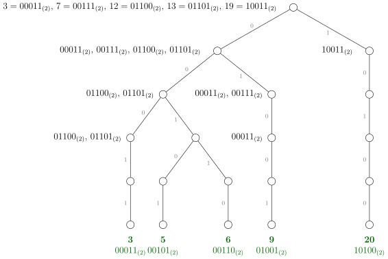
Figura 8.1: Trie-ul construit pentru exemplul 2 din enunț, în
care dorim să obținem al \(k=10\)-lea cel mai mic xor. În rădăcină
obținem \(4 \cdot 4 + 1 \cdot 1 = 17\) perechi cu xor-ul 0, deci primul bit al răspunsului
este 0. Pe nivelul 1 (corespunzător celui de-al doilea bit din
stînga) obținem \(2 \cdot 3 + 2 \cdot 1 + 1 \cdot 1 = 9\) perechi cu xor-ul 0, deci al doilea bit al
rezultatului este 1.
Pe primul nivel (rădăcina), vom număra perechile al căror xor începe cu 0, ca mai sus. Dacă aflăm
că primul bit al răspunsului este 0, vom împinge valorile din \(B_0\) în subarborele stîng, iar
pe cele din \(B_1\) în subarborele drept, iar dacă primul bit al răspunsului este 1 vom proceda
invers.
Acum să considerăm un nivel oarecare, pe care dorim să aflăm bitul \(i\) al răspunsului. Cele \(n\) valori din \(B\)
sînt distribuite între nodurile de pe nivelul \(i\) din trie. Pentru fiecare valoare \(b \in B\), aflată într-un nod \(u\), vom
interoga fiii lui \(u\) pentru afla cu cîte valori din \(A\) obține \(b\) xor-ul 0, respectiv 1, pe poziția \(i\). După ce
însumăm răspunsurile pentru toate valorile din \(B\), vom ști dacă dorim ca bitul \(i\) al răspunsului să fie 0 sau
1. În funcție de aceasta, facem o a doua trecere prin valorile din \(B\) ca să le mutăm mai jos cu un
nivel.
Această soluție are complexitatea \(\bigoh (nl)\) și obține punctaj maxim, dar consumă peste 100 MB de memorie.
Există \(\np {200000} \cdot 60 = \np {12000000}\) de noduri și fiecare nod reține trei întregi: numărul de șiruri din acel nod și pointeri la
fii.
Soluție optimizată
Din această soluție am învățat un algoritm care reduce enorm memoria, ceea ce înjumătățește și
timpul de rulare. Să observăm că noi am construit oarecum „pe pilot automat”, din reflex, acest trie,
dar el nu este necesar. Putem să pornim cu un trie format doar din rădăcină, în care se află toate cele \(2n\)
valori din \(A\) și \(B\). Apoi împingem valorile în jos, spre noduri pe care le creăm spontan, la
nevoie.
În esență, soluția anterioară împingea în mod repetat fiecare valoare \(b \in B\) într-un nod \(u\), cu semnificația:
pentru a obține prefixul dorit din răspuns, valoarea \(b\) mai poate forma perechi doar cu numerele din
subarborele lui \(u\). Să remarcăm că toate numerele din acel subarbore au un prefix comun pînă la nivelul
curent.
Aceasta înseamnă că, dacă sortăm imediat după citire valorile din \(A\), atunci fiecare valoare din \(B\) reține în
permanență un interval continuu din \(A\). Mai mult, toate valorile din \(B\) care au un prefix comun vor
reține același interval din \(A\). Cu alte cuvinte, la nivelul curent trebuie doar să reținem o
listă de perechi de intervale de forma \(\bigl ([l_A, r_A), [l_B, r_B) \bigr )\). Xor-ul oricărei perechi \((A[i], B[j])\) este egal pe prefix cu
răspunsul.
Inițial în rădăcină urmărim toate cele \(n^2\) perechi, deci lista de perechi de intervale conține doar perechea \(\bigl ([0, n), [0, n)\bigr )\).
Acum fie \(x\) poziția primului număr din \(A\) care are primul bit 1 și fie \(y\) poziția primului număr
din \(B\) care are primul bit 1. Ca să aflăm cîte perechi dau un xor cu primul bit 0, folosim
formula:
\[p = x \cdot y + (n - x) \cdot (n - y)\]
De aici iau naștere două cazuri:
1.
Dacă \(p \geq k\), atunci perechile pentru nivelul următor sînt \(\bigl ([0, x), [0, y)\bigr )\) și \(\bigl ([x, n), [y, n)\bigr )\).
2.
Dacă \(p < k\), atunci perechile pentru nivelul următor sînt \(\bigl ([0, x), [y, n)\bigr )\) și \(\bigl ([x, n), [0, y)\bigr )\).
Pe orice nivel vom avea cel mult \(n\) astfel de perechi, deoarece fiecare element din \(A\) (și din \(B\)) face parte din
cel mult o pereche (dacă la orice moment un element din \(A\) rămîne fără perechi în \(B\), sau invers,
atunci invervalul corespunzător devine vid și putem să aruncăm perechea de intervale din
listă).
De aceea, complexitatea este tot \(\bigoh (nl)\), dar memoria este \(\bigoh (n)\) în loc de \(\bigoh (nl)\) cît ocupă un trie. În practică,
programul folosește doar 7 MB.
8.2.4 Problema Cipher (IIOT 2022-2023 runda internațională)
Să ignorăm pentru moment cerința ca \(|s|\) să se dividă cu \(|t|\). Atunci putem afla criptarea minimă foarte
direct, folosind un trie, astfel. Să luăm ca exemplu \(s[0] = \texttt {f}\). Cea mai bună pereche pentru f este v, deoarece
numerele de ordine ale acestor litere sînt 5 și 21, de sumă 26, deci suma lor Vigenère este a. Așadar,
dacă există chei care încep cu litera v, restrîngem căutarea la acelea și continuăm cu cea de-a doua
literă a lui \(s\). Dacă nu, atunci examinăm literele w, x, y, z, a, b, …, pînă cînd găsim chei care încep cu
una dintre aceste litere.
De aceea, algoritmul pentru acest caz particular inserează toate cheile într-un trie. Apoi, pentru fiecare
șir \(s\), pornește din rădăcina trie-ului și coboară nivel cu nivel, urmînd la nivelul \(i\) litera care minimizează
perechea cu \(s[i]\).
Încercare cu un singur trie
Cum tratăm restricția de divizibilitate? Prima mea încercare, care nu duce nicăieri, a fost să țin în
fiecare nod din trie un vector cu lungimile posibile ale cheilor care se continuă în acel subarbore. Suma
lungimilor acestor vectori este egală cu suma lungimilor cheilor, deci acceptabilă. Pentru a procesa un
șir \(s\), este necesar să adăugăm următoarea regulă la coborîrea prin trie. La fiecare nivel \(i\), vom urma
litera care formează perechea minimă cu \(s[i]\) și care duce spre un nod al cărui vector include un divizor al
lui \(|s|\).
Această soluție este ineficientă și greoi de codat. Pe fiecare nivel al trie-ului putem avea \(\bigoh (\sqrt {k})\) chei de lungimi
diferite, ceea ce ne duce la complexitatea \(\bigoh (S \sqrt {k})\), unde \(S \leq \np {400000}\) este suma lungimilor șirurilor.
Soluția cu trie-uri multiple
În loc de aceasta, putem să generăm cîte un trie pentru fiecare lungime distinctă a cheilor. Pentru
exemplul din enunț, vom crea 4 trie-uri pentru lungimile de șiruri 3, 4, 6 și 8. Atunci, pentru o
interogare \(s\), vom face cîte o coborîre în trie pentru fiecare divizor \(d\) al lui \(|s|\) (desigur, numai dacă chiar
există chei de lungimea \(d\)).
În teorie, aceasta poate duce la multe coborîri atunci cînd lungimile șirurilor sînt numere extrem
compuse, dar să nu uităm că suma acestor lungimi nu depășește 400 000. De exemplu, putem avea un
șir de lungime \(|s| = \np {166320} = 2^4 \cdot 3^3 \cdot 5 \cdot 7 \cdot 11\), care are 160 de divizori. Dar nu putem avea mai mult de două astfel de
șiruri.
Există multe detalii de implementare care merită discutate.
Pot exista circa \(\sqrt {2 \cdot \np {400000}} < \np {1000}\) lungimi de chei distincte, deci poate fi nevoie să ținem 1 000 de trie-uri cu cel mult
400 000 de noduri în total. Cum procedăm? Putem recurge la alocarea dinamică a nodurilor, dar eu am
preferat, din nou, să aloc un vector global de noduri din care fiecare trie ia un nod cînd are
nevoie.
Pentru maparea efectivă a lungimilor cheilor la trie-uri, am folosit pur și simplu un unordered_map.
Ca să fac un experiment, la această implementare nu am mai prealocat vectori de 26 de pointeri la fii, ci
i-am creat doar la nevoie. Fiecare pointer este o pereche constînd din nodul-destinație și din litera de
pe muchie.
Pentru un șir \(s\) dat, este nevoie să construim efectiv criptările pentru fiecare divizor al lui \(|s|\),
ca să le putem compara și să alegem cheia optimă. Eu am ales să fac acest lucru chiar pe
parcursul coborîrii în trie. De exemplu, dacă \(|s| = 15\) și examinăm trie-ul cheilor de lungime 3,
atunci:
Litera aleasă la nivelul 0 trebuie adunată la \(s[0]\), \(s[3]\), \(s[6]\), \(s[9]\) și \(s[12]\).
Litera aleasă la nivelul 1 trebuie adunată la \(s[1]\), \(s[4]\), \(s[7]\), \(s[10]\) și \(s[13]\).
Litera aleasă la nivelul 2 trebuie adunată la \(s[2]\), \(s[5]\), \(s[8]\), \(s[11]\) și \(s[14]\).
Postfață
Sper că parcurgerea acestui volum a fost și pentru voi o plimbare fascinantă prin lumea
algoritmilor și a structurilor de date, după cum și pentru mine a fost o imensă plăcere să îl
scriu.
Dar orizonturile sînt mai largi de atît. De aceea, aș vrea să vă las cîteva gînduri de final. De fapt unul
singur.
Noi nu facem haine, înghețată, case sau bărci. Toate aceste lucruri sînt bune, dar influența lor asupra
lumii în ansamblu este limitată. Noi scriem software; iar software-ul are potențialul să schimbe modul
în care lumea gîndește și se comportă, cu efecte pe ani sau pe generații.
Iată cîteva exemple de efecte ale informatizării societății, cu bune și cu rele.
Planeta este mai mică. Comunicarea oriunde pe glob este facilă. Cînd eram eu student în Boston,
sunam acasă cu $2/minut. Astăzi este gratis. Dar ușurința accesului depinde și de cooperarea
furnizorilor (ISPs). Furnizorii nu vor ca Internetul să fie considerat o utilitate publică, la fel ca apa sau
curentul. Ei vor să aibă monopolul asupra infrastructurii, dar să fie liberi să practice orice tarife doresc,
cum ar fi tarife diferențiate pentru fiecare aplicație. De exemplu, în 2025 a picat net neutrality,
încercarea democraților din SUA de a reglementa furnizorii ca pe utilități. Vom vedea care vor fi
efectele
Avem standarde și protocoale pentru tot. Vă dați seama ce coșmar ar fi dacă fiecare site ar avea
propriul său protocol? Dacă am avea nevoie de programe diferite ca să vizităm Wikipedia sau YouTube?
Iar standardele (fie ele HTTP, HTML, XML, PDF, ODF...) există pentru că oamenii au militat pentru
asta. Rezultatul este un internet descentralizat și (în general) universal accesibil. Necazul este că
această deschidere se năruie în prezent. De exemplu, Facebook a prosperat la începuturi pentru că le-a
oferit primilor săi utilizatori interfațarea cu Myspace, o fostă rețea socială. La rîndul său Facebook,
acum că este într-o poziție dominantă, face eforturi considerabile ca să nu le permită altor nou-veniți
să se integreze cu Facebook. Adobe încearcă de ani buni să monopolizeze formatul PDF, să
încarce protocolul cu extensii nelibere care pot fi citite doar cu Adobe Reader (și nu sub
GNU/Linux).
Avem calculatoare interoperabile (în general). Dacă descărcăm distribuția oficială a sistemului nostru
de operare favorit, o putem instala pe orice nou calculator. Pericolul provine de la treacherous
computing (numit impropriu și trusted computing). Acesta promite să ne ferească calculatorul
de software neautorizat. Dar subtextul este „neautorizat de producător”. Sistemul TPM
(treacherous platform module) face calculatorul să asculte de producător în detrimentul
utilizatorului.
Avem software liber pentru majoritatea nevoilor informatice. Aceasta deși toată lumea se
întreabă, de 50 de ani, „de unde cîștigă oamenii ăștia bani?”. Întrebarea este însă prost
pusă. Oamenii scriu software și aleg să-l publice sub o licență liberă pentru o mulțime de
motive care nu țin de bani. Oamenii fac fapte bune pentru că e în natura umană. Sau pentru
că au primit ceva gratuit la rîndul lor și se simt datori. Sau pentru că vor să-și cîștige
nemurirea. Sau ca să cîștige inima unei fete / unui băiat. Dar motivul pentru care avem
software liber pentru majoritatea nevoilor este că diverși oameni cu spirit de meștereală
au dezasamblat drivere binare, au făcut reverse engineering la formate și la protocoale și
au publicat versiuni libere ale acelorași unelte. Pericolul, astăzi, provine din DRM (digital
restrictions management, numit impropriu și digital rights management). DRM nu este o unealtă
informatică. Este o unealtă legală care incriminează încercarea de a ocoli anumite restricții
digitale.
Avem, în era digitală, acces la mai multe opere artistice și tehnice decît orice altă generație. Pericolul
vine din durata tot mai lungă a restricțiilor de copyright și de patente. În plus, în cazul software-ului,
există pericolul licențelor draconice. Mulți dintre noi le acceptăm pe necitite, dar mesajul lor este
dur: ne fac să promitem să fim niște prieteni răi, să nu împărțim acel produs cu nimeni.
Un gest firesc acum 40 de ani (să-i împrumuți o carte sau o dischetă floppy prietenului
tău) a fost îngreunat tehnic și stigmatizat din punct de vedere moral, transformîndu-i
în criminali pe cei care știu să fenteze cătușele digitale. Voi sînteți generația digitală,
care poate copia terabytes întregi cu o apăsare de taste, și pe care totuși marii deținători
de copyright încearcă să vă convingă, prin îndoctrinare zilnică, că copierea este un act
rușinos.
Sîntem generația cea mai avansată științific. Pe mine acest lucru mă umple de respect față de lungul
lanț al oamenilor de știință care au trăit și au murit pentru ca noi să putem cunoaște universul în
măsura în care îl cunoaștem astăzi. Dar, în același timp, Internetul de astăzi constă dintr-un whitelist
– o mînă de site-uri cu reputație din care ne putem informa corect, – și o hazna de site-uri
dezinformatoare și antiștiințifice.
\(\ast \) \(\ast \) \(\ast \)
De ce am enumerat aceste lucruri bune și rele? Pentru că voi sînteți cu toții elevi de excepție și veți
avea porți deschise la toate companiile notabile. Vă încurajez ca, oriunde vă veți angaja, să nu
renunțați la filtrul moral. Să vă puneți, la fiecare nou proiect, întrebarea: acest feature pe care
mi-a cerut compania să-l implementez este un pas în direcția bună, sau un pas în direcția
greșită?
Dacă angajatorul vostru vă cere să lucrați la o aplicație care neagă încălzirea globală sau teoria
evoluției; sau care identifică persoane care au discutat pe Internet despre anumite cuvinte-cheie ca să-i
predea autorităților; sau care verifică dacă piesele de schimb folosite pentru un telefon sînt originale și
refuză să le folosească în caz contrar; sau care programează un automobil să iasă în stradă și să sune
din claxon imediat ce proprietarul a omis să plătească rata, pentru ca recuperatorul să poată găsi
mai ușor automobilul; în toate aceste cazuri sper să luați în calcul să vă căutați de lucru
altundeva.
Vă promit că nu veți fi muritori de foame dacă vă veți autoimpune niște standarde de etică. Veți fi,
poate, nevoiți să acceptați o ofertă cu 10% mai mică. Dar o conștiință curată merită deranjul.
🙂
// Ca și versiunea anterioară, dar stochează un singur bit și recuperează// răspunsurile mai tîrziu.#include<stdio.h>constintMAX_N=1'000'000;
constintMAX_BITS=22;
constintMAX_VALUE=1«MAX_BITS;
structbitset{
unsignedv[MAX_VALUE/32];
voidset(intpos){
v[pos»5]|=1«(pos&31);
}
boolget(intpos){
returnv[pos»5]»(pos&31)&1;
}
};
inta[MAX_N];
bitsetfit;
intn;
voidread_data(){
scanf("%d",&n);
for(inti=0;i<n;i++){
scanf("%d",&a[i]);
fit.set(a[i]);
}
}
voidcompute_fits(){
for(intbit=0;bit<MAX_BITS;bit++){
for(intmask=1;mask<MAX_VALUE;mask++){
if((mask&(1«bit))&&fit.get(mask^(1«bit))){
fit.set(mask);
}
}
}
}
// Găsește un număr de la intrare care încape în mask.intrecover_number(intmask){
intcopy=mask;
while(copy){
intsingleBit=copy&-copy;
intsubmask=mask^singleBit;
if(fit.get(submask)){
// Am găsit un bit de eliminat. Resetează procesul.mask=copy=submask;
}else{
copy^=singleBit;
}
}
returnmask;
}
voidwrite_answers(){
for(inti=0;i<n;i++){
intneg=(MAX_VALUE-1)^a[i];
intanswer=fit.get(neg)
?recover_number(neg)
:-1;
printf("%d ",answer);
}
printf("\n");
}
intmain(){
read_data();
compute_fits();
write_answers();
return0;
}
1.3 Problema Yet Another Substring Reverse (Codeforces)
#include<stdio.h>constintMAX_N=23;
constintNONE=-1;
structbitset{
unsignedv[(1«MAX_N)/32];
voidset(intpos){
v[pos»5]|=1«(pos&31);
}
boolget(intpos){
returnv[pos»5]»(pos&31)&1;
}
};
// poss[mask] = true dacă și numai dacă putem procesa primele i variabile// a.î. variabilele curente să fie cele dictate de mască. Notă: i este dat de// bitul cel mai semnificativ al măștii.bitsetposs;
// sum[mask] = true dacă și numai dacă variabilele dictate de mască pot fi// folosite ca să obținem a i+1-a variabilă.bitsetsum;
inta[MAX_N],n;
voidread_data(){
scanf("%d",&n);
for(inti=0;i<n;i++){
scanf("%d",&a[i]);
}
}
intmin(intx,inty){
return(x<y)?x:y;
}
intlog2(intx){
return31-__builtin_clz(x);
}
// Presupune că submăștile au fost deja actualizate.boolcan_obtain_sum(unsignedmask,inttarget){
intlsb=log2(mask&-mask);
if(sum.get(mask^(1«lsb))){
returntrue;
}
while(mask){
intbit=log2(mask);
mask^=(1«bit);
if(a[lsb]+a[bit]==target){
returntrue;
}
}
returnfalse;
}
// Menține măștile pe bit-1 biți care pot genera a[bit].voidupdate_sum(intbit){
for(unsignedmask=(1u«(bit-1));mask<(1u«bit);mask++){
if(can_obtain_sum(mask,a[bit])){
sum.set(mask);
}
}
}
voidset_all_continuations(unsignedmask,intbit){
poss.set(mask^(1«bit));// folosește o variabilă nouăunsignedcp=mask;
while(cp){
unsignedlsb=cp&-cp;
poss.set(mask^(1«bit)^lsb);// înlocuiește o variabilă existentăcp^=lsb;
}
}
voidupdate_poss(intbit){
for(unsignedmask=(1u«(bit-1));mask<(1u«bit);mask++){
if(poss.get(mask)&&sum.get(mask)){
set_all_continuations(mask,bit);
}
}
}
voidvisit_all_bits(){
// putem procesa obiectul 0 (mask 000...001 = 1)poss.set(1);
for(intbit=1;bit<n;bit++){
update_sum(bit);
update_poss(bit);
}
}
// Returnează populația minimă printre măștile care au bitul n-1 setat.intget_min_pop_mask(){
intmin_pop=n+1;
for(unsignedmask=1«(n-1);mask<(1u«n);mask++){
if(poss.get(mask)){
min_pop=min(min_pop,__builtin_popcount(mask));
}
}
return(min_pop==n+1)?NONE:min_pop;
}
intmain(){
read_data();
visit_all_bits();
intanswer=get_min_pop_mask();
printf("%d\n",answer);
return0;
}
// Ca și versiunea anterioară, dar stochează un singur bit și recuperează// răspunsurile mai tîrziu.#include<stdio.h>constintMAX_N=1'000'000;
constintMAX_BITS=22;
constintMAX_VALUE=1«MAX_BITS;
structbitset{
unsignedv[MAX_VALUE/32];
voidset(intpos){
v[pos»5]|=1«(pos&31);
}
boolget(intpos){
returnv[pos»5]»(pos&31)&1;
}
};
inta[MAX_N];
bitsetfit;
intn;
voidread_data(){
scanf("%d",&n);
for(inti=0;i<n;i++){
scanf("%d",&a[i]);
fit.set(a[i]);
}
}
voidcompute_fits(){
for(intbit=0;bit<MAX_BITS;bit++){
for(intmask=1;mask<MAX_VALUE;mask++){
if((mask&(1«bit))&&fit.get(mask^(1«bit))){
fit.set(mask);
}
}
}
}
// Găsește un număr de la intrare care încape în mask.intrecover_number(intmask){
intcopy=mask;
while(copy){
intsingleBit=copy&-copy;
intsubmask=mask^singleBit;
if(fit.get(submask)){
// Am găsit un bit de eliminat. Resetează procesul.mask=copy=submask;
}else{
copy^=singleBit;
}
}
returnmask;
}
voidwrite_answers(){
for(inti=0;i<n;i++){
intneg=(MAX_VALUE-1)^a[i];
intanswer=fit.get(neg)
?recover_number(neg)
:-1;
printf("%d ",answer);
}
printf("\n");
}
intmain(){
read_data();
compute_fits();
write_answers();
return0;
}
#include<stdio.h>constintMAX_COLORS=40;
constintINFINITY=1'000'000'000;
typedefunsignedlonglongu64;
u64rel[MAX_COLORS];
intcost[MAX_COLORS];
u64rhs_mask;
intnum_colors,mid;
voidadd_relation(inta,intb){
rel[a]|=(1ull«b);
rel[b]|=(1ull«a);
}
// Adaugă relațiile <c[1],c[1]> și <c[n],c[n]> pentru a forța alegerea acestor// două culori.voidread_data(){
intn,prev,col;
scanf("%d %d %d",&n,&num_colors,&prev);
prev--;
add_relation(prev,prev);
for(inti=1;i<n;i++){
scanf("%d",&col);
col--;
add_relation(prev,col);
prev=col;
}
add_relation(prev,prev);
for(inti=0;i<num_colors;i++){
scanf("%d",&cost[i]);
}
}
intmin(intx,inty){
return(x<y)?x:y;
}
intlog2(u64mask){
return63-__builtin_clzll(mask);
}
// Returnează o mască cu 1 de la msb la lsb inclusiv.u64bit_range(intmsb,intlsb){
return((1ull«(msb+1))-1)^((1ull«lsb)-1);
}
voidprecompute_info(){
mid=num_colors/2;
rhs_mask=bit_range(mid-1,0);
}
structright_half{
// Costul redus al unei măști este costul minim necesar pentru a satisface// relațiile între perechi de biți 1 din mască.intred_cost[1«(MAX_COLORS/2)];
intget_mask_cost(u64mask){
intsum=0;
while(mask){
intb=log2(mask);
sum+=cost[b];
mask^=(1«b);
}
returnsum;
}
voidcompute_red_costs(){
for(u64mask=1;mask<(1ull«mid);mask++){
intk=log2(mask);
// Opțiunea 1: cumpără bitul k. Redu biții rămași.u64remaining=mask^(1«k);
intc1=cost[k]+red_cost[remaining];
// Opțiunea 2: nu cumpăra bitul k. Neapărat cumpără-i toate relațiile.// Aceasta tratează și cazul în care k este în relație cu el însuși.u64rel_mask=mask&rel[k];
remaining=(mask^(1«k))&~rel[k];
intc2=get_mask_cost(rel_mask)+red_cost[remaining];
red_cost[mask]=min(c1,c2);
}
}
intcheapest_expansion(u64bought_mask){
u64not_bought=rhs_mask^bought_mask;
returnget_mask_cost(bought_mask)+red_cost[not_bought];
}
};
right_halfright;
structleft_half{
intmin_cost;
voidrec(intk,intc,u64left_mask,u64right_mask){
if(k==num_colors){
intright_cost=right.cheapest_expansion(right_mask);
min_cost=min(min_cost,c+right_cost);
}else{
// Trebuie să cumpărăm bitul k dacă are relații nesatisfăcute în// jumătatea stîngă unde k este bitul mai semnificativ.u64unsat=rel[k]&bit_range(k,mid)&~left_mask;
if(!unsat){
// Putem să nu cumpărăm bitul k. Notează relațiile lui k în jumătatea// dreaptă.u64rhs_relations=rel[k]&rhs_mask;
rec(k+1,c,left_mask,right_mask|rhs_relations);
}
rec(k+1,c+cost[k],left_mask|(1ull«k),right_mask);
}
}
voidgenerate_all_valid(){
min_cost=INFINITY;
rec(mid,0,0,0);
}
};
left_halfleft;
intmain(){
read_data();
precompute_info();
right.compute_red_costs();
left.generate_all_valid();
printf("%d\n",left.min_cost);
return0;
}
#include<stdio.h>constintMAX_N=1'000'000;
constintMAX_M=2'500;
constintBASE=113;// baza pentru hashconstintMOD=1«20;// modulul pentru hashconstintMAX_COLLISIONS=9;// determinat experimentalconstintNONE=-1;
intn,m,l,k;
chars[MAX_N+1],p[MAX_M+1];// șirul și cuvîntul curentintmin_match;// lungimea minimă garantată de căutat exactintcur_word;// operația curentălonglongbase_pow;// BASE^{min_match - 1} % MOD, pentru Rabin-Karpintcnt[MOD];// numărul de apariții ale fiecărei valori hashintwhere[MOD][MAX_COLLISIONS];// pozițiile acestor aparițiishorttried[MOD];// cache cu pozițiile deja încercate pentru cuvîntul curentFILE*fin,*fout;
// ⌈a/b⌉intceil(inta,intb){
return(a-1)/b+1;
}
voidread_string(){
fscanf(fin,"%d %d %d %d %s ",&n,&m,&l,&k,s);
min_match=ceil(l-k,k+1);
}
// Rabin-Karp (hash în fereastră glisantă) pe s.voidhash_string(){
base_pow=1;
for(inti=0;i<min_match-1;i++){
base_pow=base_pow*BASE%MOD;
}
longlonghash=0;
for(inti=0;i<min_match-1;i++){
hash=(hash*BASE+(s[i]-'a'))%MOD;
}
for(intstart=0,end=min_match-1;end<n;start++,end++){
hash=(hash*BASE+(s[end]-'a'))%MOD;
where[hash][cnt[hash]++]=start;
hash=(hash+MOD-base_pow*(s[start]-'a')%MOD)%MOD;
}
}
// Numără naiv diferențele între s[start...] și p.boolat_most_k_mismatches(intstart){
if(tried[start]==cur_word){
returnfalse;
}
tried[start]=cur_word;
intnum_diffs=0;
inti=start;
while((num_diffs<=k)&&(i<start+l)){
num_diffs+=(s[i]!=p[i-start]);
i++;
}
return(num_diffs<=k);
}
// Încearcă să suprapună p[pstart..pstart+min_match-1] peste s.booltry_offset(intpstart,inthash){
for(inti=0;i<cnt[hash];i++){
intsstart=where[hash][i];
// sstart trebuie să fie suficient de departe de marginile lui s pentru ca// p să poată fi suprapus corect (reminder: la sstart începe doar// fragmentul p[pstart...pstart-min_match+1]).if((sstart>=pstart)&&(sstart<=n-l+pstart)&&at_most_k_mismatches(sstart-pstart)){
returntrue;
}
}
returnfalse;
}
// Rabin-Karp peste cuvîntul curent. Caută în s fiecare fereastră a lui p de// mărime min_match.boolquery(){
longlonghash=0;
for(inti=0;i<min_match-1;i++){
hash=(hash*BASE+(p[i]-'a'))%MOD;
}
boolfound=false;
intstart=0,end=min_match-1;
while(!found&&(end<l)){
hash=(hash*BASE+(p[end]-'a'))%MOD;
found=try_offset(start,hash);
hash=(hash+MOD-base_pow*(p[start]-'a')%MOD)%MOD;
start++;
end++;
}
returnfound;
}
voidprocess_queries(){
for(cur_word=1;cur_word<=m;cur_word++){
fscanf(fin,"%s ",p);
fprintf(fout,"%d\n",query());
}
}
intmain(){
fin=fopen("radio.in","r");
fout=fopen("radio.out","w");
read_string();
hash_string();
process_queries();
fclose(fin);
fclose(fout);
return0;
}
#include<algorithm>#include<stdio.h>#include<string.h>constintMAX_LEN=300'000;
constintMAX_N=300'000;
constintMOD=1'000'000'007;
charbuf[MAX_LEN+MAX_N];// lasă loc pentru terminatorii de șirchar*s[MAX_N];// cuvintele de la intrareintf[MAX_LEN+1];// frecvențele lungimilor cuvintelor cititeintg[MAX_LEN+1];// frecvențele lungimilor cuvintelor de adăugatintcnt[MAX_LEN+1];// numărul de subșiruri distincte de fiecare lungimeintn,sigma,max_extra_len;
voidread_data(){
intptr=0,num_extra,len;
scanf("%d %d %d",&n,&num_extra,&sigma);
for(inti=0;i<n;i++){
s[i]=buf+ptr;
scanf("%s",s[i]);
ptr+=strlen(s[i])+1;// include \0}
while(num_extra--){
scanf("%d",&len);
g[len]++;
max_extra_len=std::max(len,max_extra_len);
}
}
voidtsort(intleft,intright,intpos){
// Optimizare care previne recursivitatea pentru restul șirului.if(right-left==1){
while(s[left][pos]!='\0'){
cnt[++pos]++;
}
f[pos]++;
}
if(right-left<=1){
return;
}
inti=left,lt=left,gt=right;
charpivot=s[left][pos];
while((i<gt)&&s[i][pos]){
if(s[i][pos]<pivot){
std::swap(s[i++],s[lt++]);
}elseif(s[i][pos]>pivot){
std::swap(s[i],s[--gt]);
}else{
i++;
}
}
if(i<gt){
// Am găsit un șir terminat aici. Restul șirurilor sînt continuări ale// sale și nu mai contează în statistici, deci nu mai reapelăm.f[pos]++;
}else{
cnt[pos+1]++;// pentru zona din mijloctsort(left,lt,pos);
tsort(lt,gt,pos+1);
tsort(gt,right,pos);
}
}
intscan_lengths(){
longlongresult=1,sigma_l=1,c=0;
for(intl=1;l<=max_extra_len;l++){
c=(c+f[l-1]+g[l-1])*sigma%MOD;
sigma_l=sigma_l*sigma%MOD;
longlonglegal=sigma_l-c-cnt[l]+MOD;
for(intj=0;j<g[l];j++){
result=result*(legal-j)%MOD;
}
}
returnresult;
}
intmain(){
read_data();
tsort(0,n,0);
intresult=scan_lengths();
printf("%d\n",result);
return0;
}
![[Picture]](main4x.svg) pentru fiecare cuvînt \(p\) execută
pentru fiecare cuvînt \(p\) execută ![[Picture]](main6x.svg)
![[Picture]](main8x.svg)
![[Picture]](main10x.svg)
![[Picture]](main12x.svg) pentru fiecare fereastră \(w\) de mărime \(c\) din \(p\) execută
pentru fiecare fereastră \(w\) de mărime \(c\) din \(p\) execută ![[Picture]](main14x.svg)
![[Picture]](main16x.svg)
![[Picture]](main18x.svg)
![[Picture]](main20x.svg)
![[Picture]](main22x.svg)
![[Picture]](main24x.svg)
![[Picture]](main26x.svg) pentru fiecare apariție a lui \(w\) în \(s\) execută
pentru fiecare apariție a lui \(w\) în \(s\) execută ![[Picture]](main28x.svg)
![[Picture]](main30x.svg)
![[Picture]](main32x.svg)
![[Picture]](main34x.svg)
![[Picture]](main36x.svg)
![[Picture]](main38x.svg) calculează deplasarea \(d\) a lui \(p\) în \(s\)
calculează deplasarea \(d\) a lui \(p\) în \(s\) ![[Picture]](main40x.svg)
![[Picture]](main42x.svg)
![[Picture]](main44x.svg)
![[Picture]](main46x.svg)
![[Picture]](main48x.svg)
![[Picture]](main50x.svg) compară naiv \(p\) cu subșirul \(s[d \dots d + l - 1]\)
compară naiv \(p\) cu subșirul \(s[d \dots d + l - 1]\) ![[Picture]](main52x.svg)
![[Picture]](main54x.svg)
![[Picture]](main56x.svg)
![[Picture]](main58x.svg)
![[Picture]](main60x.svg)
![[Picture]](main72x.svg) pentru
pentru ![[Picture]](main74x.svg)
![[Picture]](main76x.svg)
![[Picture]](main78x.svg)
![[Picture]](main80x.svg)
![[Picture]](main82x.svg)
![[Picture]](main84x.svg)
![[Picture]](main86x.svg)
![[Picture]](main88x.svg)
![[Picture]](main90x.svg)
![[Picture]](main92x.svg)
![[Picture]](main94x.svg)
![[Picture]](main96x.svg)
![[Picture]](main98x.svg)
![[Picture]](main100x.svg)
![[Picture]](main102x.svg)
![[Picture]](main104x.svg) cît timp nodul
cît timp nodul ![[Picture]](main106x.svg)
![[Picture]](main108x.svg)
![[Picture]](main110x.svg)
![[Picture]](main112x.svg)
![[Picture]](main114x.svg)
![[Picture]](main116x.svg)
![[Picture]](main118x.svg)
![[Picture]](main120x.svg)
![[Picture]](main122x.svg)
![[Picture]](main124x.svg)
![[Picture]](main126x.svg)
![[Picture]](main128x.svg)
![[Picture]](main130x.svg)
![[Picture]](main132x.svg)
![[Picture]](main134x.svg)
![[Picture]](main136x.svg)
![[Picture]](main138x.svg)
![[Picture]](main140x.svg)
![[Picture]](main142x.svg)
![[Picture]](main144x.svg)
![[Picture]](main146x.svg)
![[Picture]](main148x.svg)